GRA: signum - MNIST#
project = GRA, host = mach, device = cuda:0
Goals:#
device_idx = 0
device = f'cuda:{device_idx}'
print(f"device: {device} ——— host: {os.uname().nodename}")
device: cuda:0 ——— host: mach
Main#
from optimizers import *
from test.test import *
MNIST#
batch_size=256
cfg = TrainConfig(
dataset='MNIST',
# dataset='ImageNet32',
batch_size=256,
epochs=200,
device=device,
data_on_device=True,
verbose=True,
amp=False,
)
Signum#
experiments = []
# for lr in [5e-5, 1e-4, 5e-4, 1e-3, 5e-3, 1e-2]:
# for beta1 in [0.5, 0.8, 0.95]:
# for weight_decay in [0.0, 0.1]:
for lr in [1e-4, 5e-4, 1e-3, 5e-3, 1e-2]:
for beta1 in [0.8, 0.95]:
for weight_decay in [0.1]:
opt_kws = dict(lr=lr, momentum=beta1, weight_decay=weight_decay)
base_str = f"lr={lr},beta={beta1},wd={weight_decay}"
experiments.extend([
Experiment(
name=f'Rel. Signum ({base_str},mass=10)',
opt_fn=make_opt(RelativisticSignum, mass=10, **opt_kws)),
Experiment(
name=f'Rel. Signum ({base_str},mass=5)',
opt_fn=make_opt(RelativisticSignum, mass=5, **opt_kws)),
Experiment(
name=f'Rel. Signum ({base_str},mass=1)',
opt_fn=make_opt(RelativisticSignum, mass=1, **opt_kws)),
Experiment(
name=f'Rel. Signum ({base_str},mass=0.1)',
opt_fn=make_opt(RelativisticSignum, mass=0.1, **opt_kws)),
Experiment(
name=f'Signum ({base_str},dampening=0.0)',
opt_fn=make_opt(SignSGD, dampening=0.0, **opt_kws)),
Experiment(
name=f'Signum ({base_str},dampening=0.1)',
opt_fn=make_opt(SignSGD, dampening=0.1, **opt_kws)),
Experiment(
name=f'Signum ({base_str},dampening=0.5)',
opt_fn=make_opt(SignSGD, dampening=0.5, **opt_kws)),
Experiment(
name=f'AdamW ({base_str})',
opt_fn=make_opt(torch.optim.AdamW, lr=lr,
betas=(beta1, beta1),
weight_decay=weight_decay)),
])
print(len(experiments))
80
# lr = 1e-3
# beta1 = 0.95
# weight_decay = 0.1
# opt_kws = dict(lr=lr, momentum=beta1, weight_decay=weight_decay)
# base_str = f"lr={lr},beta={beta1},wd={weight_decay}"
# experiments = [
# Experiment(
# name=f'Rel. Signum ({base_str},mass=10)',
# opt_fn=make_opt(RelativisticSignum, mass=10, **opt_kws)),
# Experiment(
# name=f'Rel. Signum ({base_str},mass=5)',
# opt_fn=make_opt(RelativisticSignum, mass=5, **opt_kws)),
# Experiment(
# name=f'Rel. Signum ({base_str},mass=1)',
# opt_fn=make_opt(RelativisticSignum, mass=1, **opt_kws)),
# Experiment(
# name=f'Rel. Signum ({base_str},mass=0.1)',
# opt_fn=make_opt(RelativisticSignum, mass=0.1, **opt_kws)),
# Experiment(
# name=f'Signum ({base_str},dampening=0.0)',
# opt_fn=make_opt(SignSGD, dampening=0.0, **opt_kws)),
# Experiment(
# name=f'Signum ({base_str},dampening=0.1)',
# opt_fn=make_opt(SignSGD, dampening=0.1, **opt_kws)),
# Experiment(
# name=f'Signum ({base_str},dampening=0.5)',
# opt_fn=make_opt(SignSGD, dampening=0.5, **opt_kws)),
# Experiment(
# name=f'AdamW ({base_str})',
# opt_fn=make_opt(torch.optim.AdamW, lr=lr, betas=(beta1, beta1), weight_decay=weight_decay)),
# ]
# print(len(experiments))
8
print(experiments)
[ Experiment( name='Rel. Signum (lr=0.0001,beta=0.8,wd=0.1,mass=10)', opt_fn=<function make_opt.<locals>._fn at 0x711ea99a0860> ), Experiment( name='Rel. Signum (lr=0.0001,beta=0.8,wd=0.1,mass=5)', opt_fn=<function make_opt.<locals>._fn at 0x711ea99a0680> ), Experiment( name='Rel. Signum (lr=0.0001,beta=0.8,wd=0.1,mass=1)', opt_fn=<function make_opt.<locals>._fn at 0x711ea99a04a0> ), Experiment( name='Rel. Signum (lr=0.0001,beta=0.8,wd=0.1,mass=0.1)', opt_fn=<function make_opt.<locals>._fn at 0x711ea99a05e0> ), Experiment( name='Signum (lr=0.0001,beta=0.8,wd=0.1,dampening=0.0)', opt_fn=<function make_opt.<locals>._fn at 0x711ea77fd580> ), Experiment( name='Signum (lr=0.0001,beta=0.8,wd=0.1,dampening=0.1)', opt_fn=<function make_opt.<locals>._fn at 0x711ea77fd620> ), Experiment( name='Signum (lr=0.0001,beta=0.8,wd=0.1,dampening=0.5)', opt_fn=<function make_opt.<locals>._fn at 0x711ea77fd6c0> ), Experiment( name='AdamW (lr=0.0001,beta=0.8,wd=0.1)', opt_fn=<function make_opt.<locals>._fn at 0x711ea77fd760> ), Experiment( name='Rel. Signum (lr=0.0001,beta=0.95,wd=0.1,mass=10)', opt_fn=<function make_opt.<locals>._fn at 0x711ea77fd800> ), Experiment( name='Rel. Signum (lr=0.0001,beta=0.95,wd=0.1,mass=5)', opt_fn=<function make_opt.<locals>._fn at 0x711ea77fd8a0> ), Experiment( name='Rel. Signum (lr=0.0001,beta=0.95,wd=0.1,mass=1)', opt_fn=<function make_opt.<locals>._fn at 0x711ea77fd940> ), Experiment( name='Rel. Signum (lr=0.0001,beta=0.95,wd=0.1,mass=0.1)', opt_fn=<function make_opt.<locals>._fn at 0x711ea77fd9e0> ), Experiment( name='Signum (lr=0.0001,beta=0.95,wd=0.1,dampening=0.0)', opt_fn=<function make_opt.<locals>._fn at 0x711ea77fda80> ), Experiment( name='Signum (lr=0.0001,beta=0.95,wd=0.1,dampening=0.1)', opt_fn=<function make_opt.<locals>._fn at 0x711ea77fdbc0> ), Experiment( name='Signum (lr=0.0001,beta=0.95,wd=0.1,dampening=0.5)', opt_fn=<function make_opt.<locals>._fn at 0x711ea77fdd00> ), Experiment( name='AdamW (lr=0.0001,beta=0.95,wd=0.1)', opt_fn=<function make_opt.<locals>._fn at 0x711ea77fdda0> ), Experiment( name='Rel. Signum (lr=0.0005,beta=0.8,wd=0.1,mass=10)', opt_fn=<function make_opt.<locals>._fn at 0x711ea77fde40> ), Experiment( name='Rel. Signum (lr=0.0005,beta=0.8,wd=0.1,mass=5)', opt_fn=<function make_opt.<locals>._fn at 0x711ea77fdee0> ), Experiment( name='Rel. Signum (lr=0.0005,beta=0.8,wd=0.1,mass=1)', opt_fn=<function make_opt.<locals>._fn at 0x711ea77fdf80> ), Experiment( name='Rel. Signum (lr=0.0005,beta=0.8,wd=0.1,mass=0.1)', opt_fn=<function make_opt.<locals>._fn at 0x711ea77fe020> ), Experiment( name='Signum (lr=0.0005,beta=0.8,wd=0.1,dampening=0.0)', opt_fn=<function make_opt.<locals>._fn at 0x711ea77fe0c0> ), Experiment( name='Signum (lr=0.0005,beta=0.8,wd=0.1,dampening=0.1)', opt_fn=<function make_opt.<locals>._fn at 0x711ea77fe160> ), Experiment( name='Signum (lr=0.0005,beta=0.8,wd=0.1,dampening=0.5)', opt_fn=<function make_opt.<locals>._fn at 0x711ea77fe200> ), Experiment( name='AdamW (lr=0.0005,beta=0.8,wd=0.1)', opt_fn=<function make_opt.<locals>._fn at 0x711ea77fe2a0> ), Experiment( name='Rel. Signum (lr=0.0005,beta=0.95,wd=0.1,mass=10)', opt_fn=<function make_opt.<locals>._fn at 0x711ea77fe340> ), Experiment( name='Rel. Signum (lr=0.0005,beta=0.95,wd=0.1,mass=5)', opt_fn=<function make_opt.<locals>._fn at 0x711ea77fe3e0> ), Experiment( name='Rel. Signum (lr=0.0005,beta=0.95,wd=0.1,mass=1)', opt_fn=<function make_opt.<locals>._fn at 0x711ea77fe480> ), Experiment( name='Rel. Signum (lr=0.0005,beta=0.95,wd=0.1,mass=0.1)', opt_fn=<function make_opt.<locals>._fn at 0x711ea77fe520> ), Experiment( name='Signum (lr=0.0005,beta=0.95,wd=0.1,dampening=0.0)', opt_fn=<function make_opt.<locals>._fn at 0x711ea77fe5c0> ), Experiment( name='Signum (lr=0.0005,beta=0.95,wd=0.1,dampening=0.1)', opt_fn=<function make_opt.<locals>._fn at 0x711ea77fe660> ), Experiment( name='Signum (lr=0.0005,beta=0.95,wd=0.1,dampening=0.5)', opt_fn=<function make_opt.<locals>._fn at 0x711ea77fe700> ), Experiment( name='AdamW (lr=0.0005,beta=0.95,wd=0.1)', opt_fn=<function make_opt.<locals>._fn at 0x711ea77fe7a0> ), Experiment( name='Rel. Signum (lr=0.001,beta=0.8,wd=0.1,mass=10)', opt_fn=<function make_opt.<locals>._fn at 0x711ea77fe840> ), Experiment( name='Rel. Signum (lr=0.001,beta=0.8,wd=0.1,mass=5)', opt_fn=<function make_opt.<locals>._fn at 0x711ea77fe8e0> ), Experiment( name='Rel. Signum (lr=0.001,beta=0.8,wd=0.1,mass=1)', opt_fn=<function make_opt.<locals>._fn at 0x711ea77fe980> ), Experiment( name='Rel. Signum (lr=0.001,beta=0.8,wd=0.1,mass=0.1)', opt_fn=<function make_opt.<locals>._fn at 0x711ea77fea20> ), Experiment( name='Signum (lr=0.001,beta=0.8,wd=0.1,dampening=0.0)', opt_fn=<function make_opt.<locals>._fn at 0x711ea77feac0> ), Experiment( name='Signum (lr=0.001,beta=0.8,wd=0.1,dampening=0.1)', opt_fn=<function make_opt.<locals>._fn at 0x711ea77feb60> ), Experiment( name='Signum (lr=0.001,beta=0.8,wd=0.1,dampening=0.5)', opt_fn=<function make_opt.<locals>._fn at 0x711ea77fec00> ), Experiment( name='AdamW (lr=0.001,beta=0.8,wd=0.1)', opt_fn=<function make_opt.<locals>._fn at 0x711ea77feca0> ), Experiment( name='Rel. Signum (lr=0.001,beta=0.95,wd=0.1,mass=10)', opt_fn=<function make_opt.<locals>._fn at 0x711ea77fed40> ), Experiment( name='Rel. Signum (lr=0.001,beta=0.95,wd=0.1,mass=5)', opt_fn=<function make_opt.<locals>._fn at 0x711ea77fede0> ), Experiment( name='Rel. Signum (lr=0.001,beta=0.95,wd=0.1,mass=1)', opt_fn=<function make_opt.<locals>._fn at 0x711ea77fee80> ), Experiment( name='Rel. Signum (lr=0.001,beta=0.95,wd=0.1,mass=0.1)', opt_fn=<function make_opt.<locals>._fn at 0x711ea77fef20> ), Experiment( name='Signum (lr=0.001,beta=0.95,wd=0.1,dampening=0.0)', opt_fn=<function make_opt.<locals>._fn at 0x711ea77fefc0> ), Experiment( name='Signum (lr=0.001,beta=0.95,wd=0.1,dampening=0.1)', opt_fn=<function make_opt.<locals>._fn at 0x711ea77ff060> ), Experiment( name='Signum (lr=0.001,beta=0.95,wd=0.1,dampening=0.5)', opt_fn=<function make_opt.<locals>._fn at 0x711ea77ff100> ), Experiment( name='AdamW (lr=0.001,beta=0.95,wd=0.1)', opt_fn=<function make_opt.<locals>._fn at 0x711ea77ff1a0> ), Experiment( name='Rel. Signum (lr=0.005,beta=0.8,wd=0.1,mass=10)', opt_fn=<function make_opt.<locals>._fn at 0x711ea77ff240> ), Experiment( name='Rel. Signum (lr=0.005,beta=0.8,wd=0.1,mass=5)', opt_fn=<function make_opt.<locals>._fn at 0x711ea77ff2e0> ), Experiment( name='Rel. Signum (lr=0.005,beta=0.8,wd=0.1,mass=1)', opt_fn=<function make_opt.<locals>._fn at 0x711ea77ff380> ), Experiment( name='Rel. Signum (lr=0.005,beta=0.8,wd=0.1,mass=0.1)', opt_fn=<function make_opt.<locals>._fn at 0x711ea77ff420> ), Experiment( name='Signum (lr=0.005,beta=0.8,wd=0.1,dampening=0.0)', opt_fn=<function make_opt.<locals>._fn at 0x711ea77ff4c0> ), Experiment( name='Signum (lr=0.005,beta=0.8,wd=0.1,dampening=0.1)', opt_fn=<function make_opt.<locals>._fn at 0x711ea77ff560> ), Experiment( name='Signum (lr=0.005,beta=0.8,wd=0.1,dampening=0.5)', opt_fn=<function make_opt.<locals>._fn at 0x711ea77ff600> ), Experiment( name='AdamW (lr=0.005,beta=0.8,wd=0.1)', opt_fn=<function make_opt.<locals>._fn at 0x711ea77ff6a0> ), Experiment( name='Rel. Signum (lr=0.005,beta=0.95,wd=0.1,mass=10)', opt_fn=<function make_opt.<locals>._fn at 0x711ea77ff740> ), Experiment( name='Rel. Signum (lr=0.005,beta=0.95,wd=0.1,mass=5)', opt_fn=<function make_opt.<locals>._fn at 0x711ea77ff7e0> ), Experiment( name='Rel. Signum (lr=0.005,beta=0.95,wd=0.1,mass=1)', opt_fn=<function make_opt.<locals>._fn at 0x711ea77ff880> ), Experiment( name='Rel. Signum (lr=0.005,beta=0.95,wd=0.1,mass=0.1)', opt_fn=<function make_opt.<locals>._fn at 0x711ea77ff920> ), Experiment( name='Signum (lr=0.005,beta=0.95,wd=0.1,dampening=0.0)', opt_fn=<function make_opt.<locals>._fn at 0x711ea77ff9c0> ), Experiment( name='Signum (lr=0.005,beta=0.95,wd=0.1,dampening=0.1)', opt_fn=<function make_opt.<locals>._fn at 0x711ea77ffa60> ), Experiment( name='Signum (lr=0.005,beta=0.95,wd=0.1,dampening=0.5)', opt_fn=<function make_opt.<locals>._fn at 0x711ea77ffb00> ), Experiment( name='AdamW (lr=0.005,beta=0.95,wd=0.1)', opt_fn=<function make_opt.<locals>._fn at 0x711ea77ffba0> ), Experiment( name='Rel. Signum (lr=0.01,beta=0.8,wd=0.1,mass=10)', opt_fn=<function make_opt.<locals>._fn at 0x711ea77ffc40> ), Experiment( name='Rel. Signum (lr=0.01,beta=0.8,wd=0.1,mass=5)', opt_fn=<function make_opt.<locals>._fn at 0x711ea77ffce0> ), Experiment( name='Rel. Signum (lr=0.01,beta=0.8,wd=0.1,mass=1)', opt_fn=<function make_opt.<locals>._fn at 0x711ea77ffd80> ), Experiment( name='Rel. Signum (lr=0.01,beta=0.8,wd=0.1,mass=0.1)', opt_fn=<function make_opt.<locals>._fn at 0x711ea77ffe20> ), Experiment( name='Signum (lr=0.01,beta=0.8,wd=0.1,dampening=0.0)', opt_fn=<function make_opt.<locals>._fn at 0x711ea77ffec0> ), Experiment( name='Signum (lr=0.01,beta=0.8,wd=0.1,dampening=0.1)', opt_fn=<function make_opt.<locals>._fn at 0x711ea77fff60> ), Experiment( name='Signum (lr=0.01,beta=0.8,wd=0.1,dampening=0.5)', opt_fn=<function make_opt.<locals>._fn at 0x711ea782c040> ), Experiment(name='AdamW (lr=0.01,beta=0.8,wd=0.1)', opt_fn=<function make_opt.<locals>._fn at 0x711ea782c0e0>), Experiment( name='Rel. Signum (lr=0.01,beta=0.95,wd=0.1,mass=10)', opt_fn=<function make_opt.<locals>._fn at 0x711ea782c180> ), Experiment( name='Rel. Signum (lr=0.01,beta=0.95,wd=0.1,mass=5)', opt_fn=<function make_opt.<locals>._fn at 0x711ea782c220> ), Experiment( name='Rel. Signum (lr=0.01,beta=0.95,wd=0.1,mass=1)', opt_fn=<function make_opt.<locals>._fn at 0x711ea782c2c0> ), Experiment( name='Rel. Signum (lr=0.01,beta=0.95,wd=0.1,mass=0.1)', opt_fn=<function make_opt.<locals>._fn at 0x711ea782c360> ), Experiment( name='Signum (lr=0.01,beta=0.95,wd=0.1,dampening=0.0)', opt_fn=<function make_opt.<locals>._fn at 0x711ea782c400> ), Experiment( name='Signum (lr=0.01,beta=0.95,wd=0.1,dampening=0.1)', opt_fn=<function make_opt.<locals>._fn at 0x711ea782c4a0> ), Experiment( name='Signum (lr=0.01,beta=0.95,wd=0.1,dampening=0.5)', opt_fn=<function make_opt.<locals>._fn at 0x711ea782c540> ), Experiment( name='AdamW (lr=0.01,beta=0.95,wd=0.1)', opt_fn=<function make_opt.<locals>._fn at 0x711ea782c5e0> ) ]
%%time
results = run_experiments(
experiments,
cfg=cfg,
model_class=MLP,
seeds=[0, 1, 2],
)
Training time: 17h 31s
save_obj(results, file_name='MNIST_results_jan02.npy', save_dir=tmp_dir)
[PROGRESS] 'MNIST_results_jan02.npy' saved at /home/hadi/Dropbox/git/jb-progress-2025/tmp
avg_scores = {k: np.round(d['test_acc'].mean(0)[-5:].mean(), decimals=2) for k, d in results.items()}
avg_scores = dict(sorted(avg_scores.items(), key=lambda t: t[1]))
avg_scores
{'Signum (lr=0.01,beta=0.95,wd=0.1,dampening=0.5)': 10.08,
'Signum (lr=0.005,beta=0.8,wd=0.1,dampening=0.0)': 10.28,
'Signum (lr=0.005,beta=0.95,wd=0.1,dampening=0.0)': 10.28,
'Signum (lr=0.005,beta=0.95,wd=0.1,dampening=0.1)': 10.28,
'Signum (lr=0.005,beta=0.95,wd=0.1,dampening=0.5)': 10.28,
'Signum (lr=0.01,beta=0.8,wd=0.1,dampening=0.0)': 10.64,
'Signum (lr=0.01,beta=0.8,wd=0.1,dampening=0.5)': 10.64,
'Signum (lr=0.01,beta=0.8,wd=0.1,dampening=0.1)': 10.71,
'Signum (lr=0.01,beta=0.95,wd=0.1,dampening=0.1)': 17.6,
'Signum (lr=0.01,beta=0.95,wd=0.1,dampening=0.0)': 18.89,
'Rel. Signum (lr=0.01,beta=0.95,wd=0.1,mass=0.1)': 35.84,
'Signum (lr=0.005,beta=0.8,wd=0.1,dampening=0.5)': 37.42,
'Signum (lr=0.005,beta=0.8,wd=0.1,dampening=0.1)': 37.48,
'Rel. Signum (lr=0.01,beta=0.95,wd=0.1,mass=1)': 85.42,
'Rel. Signum (lr=0.01,beta=0.8,wd=0.1,mass=0.1)': 85.68,
'Rel. Signum (lr=0.005,beta=0.95,wd=0.1,mass=0.1)': 86.78,
'Rel. Signum (lr=0.005,beta=0.95,wd=0.1,mass=1)': 91.89,
'Rel. Signum (lr=0.005,beta=0.8,wd=0.1,mass=0.1)': 96.4,
'AdamW (lr=0.01,beta=0.8,wd=0.1)': 96.4,
'AdamW (lr=0.01,beta=0.95,wd=0.1)': 96.67,
'Rel. Signum (lr=0.01,beta=0.8,wd=0.1,mass=1)': 96.77,
'Rel. Signum (lr=0.01,beta=0.8,wd=0.1,mass=10)': 96.82,
'Rel. Signum (lr=0.01,beta=0.95,wd=0.1,mass=5)': 97.17,
'Signum (lr=0.001,beta=0.95,wd=0.1,dampening=0.0)': 97.21,
'Rel. Signum (lr=0.01,beta=0.8,wd=0.1,mass=5)': 97.21,
'Signum (lr=0.001,beta=0.95,wd=0.1,dampening=0.5)': 97.3,
'Signum (lr=0.001,beta=0.95,wd=0.1,dampening=0.1)': 97.32,
'Rel. Signum (lr=0.01,beta=0.95,wd=0.1,mass=10)': 97.34,
'AdamW (lr=0.005,beta=0.8,wd=0.1)': 97.54,
'Rel. Signum (lr=0.005,beta=0.95,wd=0.1,mass=5)': 97.63,
'Rel. Signum (lr=0.005,beta=0.8,wd=0.1,mass=10)': 97.68,
'Signum (lr=0.001,beta=0.8,wd=0.1,dampening=0.1)': 97.73,
'Rel. Signum (lr=0.001,beta=0.95,wd=0.1,mass=0.1)': 97.77,
'Rel. Signum (lr=0.005,beta=0.8,wd=0.1,mass=1)': 97.8,
'AdamW (lr=0.005,beta=0.95,wd=0.1)': 97.8,
'Signum (lr=0.001,beta=0.8,wd=0.1,dampening=0.0)': 97.82,
'Rel. Signum (lr=0.005,beta=0.8,wd=0.1,mass=5)': 97.85,
'Signum (lr=0.001,beta=0.8,wd=0.1,dampening=0.5)': 97.88,
'Rel. Signum (lr=0.005,beta=0.95,wd=0.1,mass=10)': 97.88,
'Signum (lr=0.0005,beta=0.95,wd=0.1,dampening=0.5)': 97.96,
'Signum (lr=0.0005,beta=0.95,wd=0.1,dampening=0.1)': 98.0,
'Rel. Signum (lr=0.001,beta=0.8,wd=0.1,mass=0.1)': 98.05,
'Signum (lr=0.0005,beta=0.95,wd=0.1,dampening=0.0)': 98.06,
'Rel. Signum (lr=0.001,beta=0.95,wd=0.1,mass=1)': 98.08,
'Signum (lr=0.0005,beta=0.8,wd=0.1,dampening=0.0)': 98.15,
'Signum (lr=0.0005,beta=0.8,wd=0.1,dampening=0.1)': 98.18,
'Signum (lr=0.0005,beta=0.8,wd=0.1,dampening=0.5)': 98.18,
'Rel. Signum (lr=0.0005,beta=0.95,wd=0.1,mass=0.1)': 98.21,
'Rel. Signum (lr=0.0005,beta=0.95,wd=0.1,mass=1)': 98.3,
'Signum (lr=0.0001,beta=0.8,wd=0.1,dampening=0.0)': 98.32,
'Signum (lr=0.0001,beta=0.8,wd=0.1,dampening=0.1)': 98.33,
'Signum (lr=0.0001,beta=0.8,wd=0.1,dampening=0.5)': 98.33,
'Signum (lr=0.0001,beta=0.95,wd=0.1,dampening=0.1)': 98.34,
'Rel. Signum (lr=0.001,beta=0.8,wd=0.1,mass=10)': 98.34,
'Rel. Signum (lr=0.001,beta=0.8,wd=0.1,mass=5)': 98.36,
'Signum (lr=0.0001,beta=0.95,wd=0.1,dampening=0.0)': 98.38,
'Signum (lr=0.0001,beta=0.95,wd=0.1,dampening=0.5)': 98.39,
'Rel. Signum (lr=0.0005,beta=0.8,wd=0.1,mass=0.1)': 98.4,
'AdamW (lr=0.001,beta=0.8,wd=0.1)': 98.4,
'Rel. Signum (lr=0.0005,beta=0.8,wd=0.1,mass=10)': 98.41,
'AdamW (lr=0.0001,beta=0.8,wd=0.1)': 98.42,
'AdamW (lr=0.0001,beta=0.95,wd=0.1)': 98.42,
'Rel. Signum (lr=0.001,beta=0.8,wd=0.1,mass=1)': 98.42,
'Rel. Signum (lr=0.001,beta=0.95,wd=0.1,mass=10)': 98.44,
'AdamW (lr=0.0005,beta=0.8,wd=0.1)': 98.45,
'Rel. Signum (lr=0.001,beta=0.95,wd=0.1,mass=5)': 98.45,
'Rel. Signum (lr=0.0005,beta=0.8,wd=0.1,mass=5)': 98.48,
'Rel. Signum (lr=0.0001,beta=0.8,wd=0.1,mass=0.1)': 98.51,
'Rel. Signum (lr=0.0001,beta=0.95,wd=0.1,mass=0.1)': 98.51,
'Rel. Signum (lr=0.0001,beta=0.8,wd=0.1,mass=10)': 98.53,
'Rel. Signum (lr=0.0001,beta=0.95,wd=0.1,mass=1)': 98.54,
'Rel. Signum (lr=0.0005,beta=0.8,wd=0.1,mass=1)': 98.54,
'AdamW (lr=0.0005,beta=0.95,wd=0.1)': 98.54,
'AdamW (lr=0.001,beta=0.95,wd=0.1)': 98.54,
'Rel. Signum (lr=0.0005,beta=0.95,wd=0.1,mass=10)': 98.56,
'Rel. Signum (lr=0.0001,beta=0.8,wd=0.1,mass=5)': 98.57,
'Rel. Signum (lr=0.0001,beta=0.8,wd=0.1,mass=1)': 98.57,
'Rel. Signum (lr=0.0001,beta=0.95,wd=0.1,mass=10)': 98.57,
'Rel. Signum (lr=0.0005,beta=0.95,wd=0.1,mass=5)': 98.6,
'Rel. Signum (lr=0.0001,beta=0.95,wd=0.1,mass=5)': 98.64}
plot_results(results, title="CIFAR10 (mean ± std over seeds)", figsize=(30, 15))
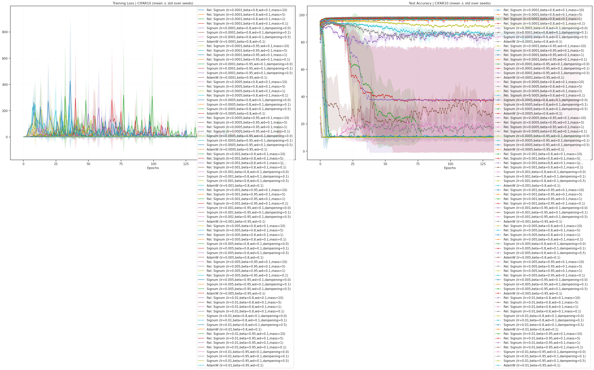
optimizer_names = sorted(set([
k.split('(')[0].strip()
for k in results
]))
print(optimizer_names)
['AdamW', 'Rel. Signum', 'Signum']
n_last_timepoints = 10
model_accuracies = collections.defaultdict(dict)
for k, d in results.items():
name = k.split('(')[0].strip()
acc = d['test_acc'].mean(0)[-n_last_timepoints:].mean()
model_accuracies[name][k] = acc
model_accuracies = dict(sorted(model_accuracies.items()))
model_accuracies = {
k: dict(sorted(d.items(), key=lambda t: t[1]))
for k, d in model_accuracies.items()
}
print(model_accuracies)
{ 'AdamW': { 'AdamW (lr=0.01,beta=0.8,wd=0.1)': 96.39566666666667, 'AdamW (lr=0.01,beta=0.95,wd=0.1)': 96.666, 'AdamW (lr=0.005,beta=0.8,wd=0.1)': 97.52933333333335, 'AdamW (lr=0.005,beta=0.95,wd=0.1)': 97.76333333333332, 'AdamW (lr=0.001,beta=0.8,wd=0.1)': 98.37166666666666, 'AdamW (lr=0.0001,beta=0.8,wd=0.1)': 98.41066666666666, 'AdamW (lr=0.0001,beta=0.95,wd=0.1)': 98.41266666666667, 'AdamW (lr=0.0005,beta=0.8,wd=0.1)': 98.43966666666668, 'AdamW (lr=0.001,beta=0.95,wd=0.1)': 98.471, 'AdamW (lr=0.0005,beta=0.95,wd=0.1)': 98.54133333333334 }, 'Rel. Signum': { 'Rel. Signum (lr=0.01,beta=0.95,wd=0.1,mass=0.1)': 36.562333333333335, 'Rel. Signum (lr=0.01,beta=0.8,wd=0.1,mass=0.1)': 85.548, 'Rel. Signum (lr=0.01,beta=0.95,wd=0.1,mass=1)': 85.71300000000001, 'Rel. Signum (lr=0.005,beta=0.95,wd=0.1,mass=0.1)': 86.571, 'Rel. Signum (lr=0.005,beta=0.95,wd=0.1,mass=1)': 92.04, 'Rel. Signum (lr=0.005,beta=0.8,wd=0.1,mass=0.1)': 96.35266666666668, 'Rel. Signum (lr=0.01,beta=0.8,wd=0.1,mass=1)': 96.646, 'Rel. Signum (lr=0.01,beta=0.8,wd=0.1,mass=10)': 96.85, 'Rel. Signum (lr=0.01,beta=0.8,wd=0.1,mass=5)': 97.19533333333334, 'Rel. Signum (lr=0.01,beta=0.95,wd=0.1,mass=5)': 97.22633333333333, 'Rel. Signum (lr=0.01,beta=0.95,wd=0.1,mass=10)': 97.40433333333335, 'Rel. Signum (lr=0.005,beta=0.95,wd=0.1,mass=5)': 97.63933333333333, 'Rel. Signum (lr=0.005,beta=0.8,wd=0.1,mass=10)': 97.68433333333334, 'Rel. Signum (lr=0.001,beta=0.95,wd=0.1,mass=0.1)': 97.78333333333333, 'Rel. Signum (lr=0.005,beta=0.8,wd=0.1,mass=1)': 97.79366666666667, 'Rel. Signum (lr=0.005,beta=0.95,wd=0.1,mass=10)': 97.84233333333333, 'Rel. Signum (lr=0.005,beta=0.8,wd=0.1,mass=5)': 97.86533333333334, 'Rel. Signum (lr=0.001,beta=0.8,wd=0.1,mass=0.1)': 98.06, 'Rel. Signum (lr=0.001,beta=0.95,wd=0.1,mass=1)': 98.10333333333332, 'Rel. Signum (lr=0.0005,beta=0.95,wd=0.1,mass=0.1)': 98.22166666666666, 'Rel. Signum (lr=0.0005,beta=0.95,wd=0.1,mass=1)': 98.31166666666667, 'Rel. Signum (lr=0.001,beta=0.8,wd=0.1,mass=10)': 98.349, 'Rel. Signum (lr=0.0005,beta=0.8,wd=0.1,mass=0.1)': 98.36366666666666, 'Rel. Signum (lr=0.001,beta=0.8,wd=0.1,mass=5)': 98.36433333333333, 'Rel. Signum (lr=0.0005,beta=0.8,wd=0.1,mass=10)': 98.39133333333334, 'Rel. Signum (lr=0.001,beta=0.8,wd=0.1,mass=1)': 98.42033333333333, 'Rel. Signum (lr=0.0005,beta=0.8,wd=0.1,mass=5)': 98.44833333333334, 'Rel. Signum (lr=0.001,beta=0.95,wd=0.1,mass=10)': 98.466, 'Rel. Signum (lr=0.001,beta=0.95,wd=0.1,mass=5)': 98.46700000000001, 'Rel. Signum (lr=0.0001,beta=0.95,wd=0.1,mass=0.1)': 98.50166666666667, 'Rel. Signum (lr=0.0001,beta=0.8,wd=0.1,mass=0.1)': 98.50833333333333, 'Rel. Signum (lr=0.0001,beta=0.8,wd=0.1,mass=10)': 98.52133333333333, 'Rel. Signum (lr=0.0005,beta=0.8,wd=0.1,mass=1)': 98.52166666666668, 'Rel. Signum (lr=0.0001,beta=0.95,wd=0.1,mass=1)': 98.55233333333334, 'Rel. Signum (lr=0.0001,beta=0.8,wd=0.1,mass=5)': 98.56099999999999, 'Rel. Signum (lr=0.0005,beta=0.95,wd=0.1,mass=10)': 98.567, 'Rel. Signum (lr=0.0001,beta=0.95,wd=0.1,mass=10)': 98.57600000000001, 'Rel. Signum (lr=0.0005,beta=0.95,wd=0.1,mass=5)': 98.57666666666667, 'Rel. Signum (lr=0.0001,beta=0.8,wd=0.1,mass=1)': 98.58200000000001, 'Rel. Signum (lr=0.0001,beta=0.95,wd=0.1,mass=5)': 98.62833333333333 }, 'Signum': { 'Signum (lr=0.01,beta=0.95,wd=0.1,dampening=0.5)': 10.123999999999999, 'Signum (lr=0.005,beta=0.8,wd=0.1,dampening=0.0)': 10.28, 'Signum (lr=0.005,beta=0.95,wd=0.1,dampening=0.0)': 10.28, 'Signum (lr=0.005,beta=0.95,wd=0.1,dampening=0.1)': 10.28, 'Signum (lr=0.005,beta=0.95,wd=0.1,dampening=0.5)': 10.28, 'Signum (lr=0.01,beta=0.8,wd=0.1,dampening=0.5)': 10.636666666666665, 'Signum (lr=0.01,beta=0.8,wd=0.1,dampening=0.0)': 10.671666666666665, 'Signum (lr=0.01,beta=0.8,wd=0.1,dampening=0.1)': 10.708, 'Signum (lr=0.01,beta=0.95,wd=0.1,dampening=0.1)': 17.838333333333335, 'Signum (lr=0.01,beta=0.95,wd=0.1,dampening=0.0)': 18.95066666666667, 'Signum (lr=0.005,beta=0.8,wd=0.1,dampening=0.1)': 37.312666666666665, 'Signum (lr=0.005,beta=0.8,wd=0.1,dampening=0.5)': 37.331, 'Signum (lr=0.001,beta=0.95,wd=0.1,dampening=0.5)': 97.249, 'Signum (lr=0.001,beta=0.95,wd=0.1,dampening=0.0)': 97.292, 'Signum (lr=0.001,beta=0.95,wd=0.1,dampening=0.1)': 97.31733333333332, 'Signum (lr=0.001,beta=0.8,wd=0.1,dampening=0.1)': 97.76399999999998, 'Signum (lr=0.001,beta=0.8,wd=0.1,dampening=0.0)': 97.81533333333331, 'Signum (lr=0.001,beta=0.8,wd=0.1,dampening=0.5)': 97.832, 'Signum (lr=0.0005,beta=0.95,wd=0.1,dampening=0.5)': 97.96, 'Signum (lr=0.0005,beta=0.95,wd=0.1,dampening=0.1)': 97.99733333333333, 'Signum (lr=0.0005,beta=0.95,wd=0.1,dampening=0.0)': 98.02033333333334, 'Signum (lr=0.0005,beta=0.8,wd=0.1,dampening=0.0)': 98.15166666666666, 'Signum (lr=0.0005,beta=0.8,wd=0.1,dampening=0.1)': 98.16233333333334, 'Signum (lr=0.0005,beta=0.8,wd=0.1,dampening=0.5)': 98.16366666666667, 'Signum (lr=0.0001,beta=0.8,wd=0.1,dampening=0.1)': 98.32266666666666, 'Signum (lr=0.0001,beta=0.8,wd=0.1,dampening=0.0)': 98.33233333333334, 'Signum (lr=0.0001,beta=0.8,wd=0.1,dampening=0.5)': 98.33933333333334, 'Signum (lr=0.0001,beta=0.95,wd=0.1,dampening=0.1)': 98.35166666666666, 'Signum (lr=0.0001,beta=0.95,wd=0.1,dampening=0.5)': 98.38166666666667, 'Signum (lr=0.0001,beta=0.95,wd=0.1,dampening=0.0)': 98.389 } }
print({k: np.mean(list(d.values())) for k, d in model_accuracies.items()})
{'AdamW': 97.90013333333334, 'Rel. Signum': 95.46950833333332, 'Signum': 65.28448888888889}
n_top_fits = 1
best_n_models = {
k: dict(list(d.items())[-n_top_fits:])
for k, d in model_accuracies.items()
}
print(best_n_models)
{ 'AdamW': {'AdamW (lr=0.0005,beta=0.95,wd=0.1)': 98.54133333333334}, 'Rel. Signum': {'Rel. Signum (lr=0.0001,beta=0.95,wd=0.1,mass=5)': 98.62833333333333}, 'Signum': {'Signum (lr=0.0001,beta=0.95,wd=0.1,dampening=0.0)': 98.389} }
best_n_models_strings = [x for d in best_n_models.values() for x in list(d)]
n_timepoints = 11
fig, ax = create_figure(1, 1, (9, 4))
for i, (k, d) in enumerate(results.items()):
if k not in best_n_models_strings:
continue
color = f"C{i}"
mu = d['test_acc'].mean(0)
sd = d['test_acc'].std(0)
xs = np.arange(len(mu) - n_timepoints + 1, len(mu) + 1)
mu = mu[-n_timepoints:]
sd = sd[-n_timepoints:]
ax.plot(xs, mu + sd, color=color, ls='--', lw=0.8, alpha=1.0)
ax.plot(xs, mu, color=color, label=k)
ax.plot(xs, mu - sd, color=color, ls='--', lw=0.8, alpha=1.0)
plt.fill_between(xs, mu - sd, mu + sd, color=color, alpha=0.1)
ax.legend()
move_legend(ax, (1.01, 1.01))
plt.show()
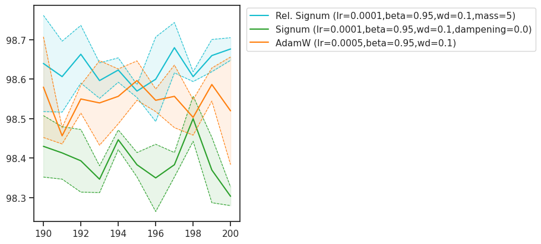
n_timepoints = 11
fig, ax = create_figure(1, 1, (9, 4))
for i, (k, d) in enumerate(results.items()):
if 'lr=0.001,beta=0.95' not in k:
continue
color = f"C{i}"
mu = d['test_acc'].mean(0)
sd = d['test_acc'].std(0)
xs = np.arange(len(mu) - n_timepoints + 1, len(mu) + 1)
mu = mu[-n_timepoints:]
sd = sd[-n_timepoints:]
ax.plot(xs, mu + sd, color=color, ls='--', lw=0.8, alpha=1.0)
ax.plot(xs, mu, color=color, label=k)
ax.plot(xs, mu - sd, color=color, ls='--', lw=0.8, alpha=1.0)
plt.fill_between(xs, mu - sd, mu + sd, color=color, alpha=0.1)
ax.legend()
move_legend(ax, (1.01, 1.01))
plt.show()
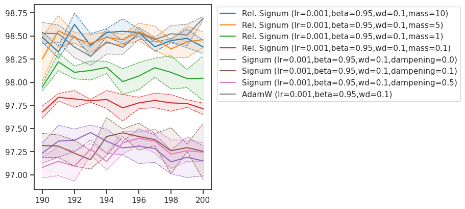
n_timepoints = 11
fig, ax = create_figure(1, 1, (9, 4))
for i, (k, d) in enumerate(results.items()):
if 'lr=0.01,beta=0.95' not in k:
continue
color = f"C{i}"
mu = d['test_acc'].mean(0)
sd = d['test_acc'].std(0)
xs = np.arange(len(mu) - n_timepoints + 1, len(mu) + 1)
mu = mu[-n_timepoints:]
sd = sd[-n_timepoints:]
ax.plot(xs, mu + sd, color=color, ls='--', lw=0.8, alpha=1.0)
ax.plot(xs, mu, color=color, label=k)
ax.plot(xs, mu - sd, color=color, ls='--', lw=0.8, alpha=1.0)
plt.fill_between(xs, mu - sd, mu + sd, color=color, alpha=0.1)
ax.legend()
move_legend(ax, (1.01, 1.01))
plt.show()
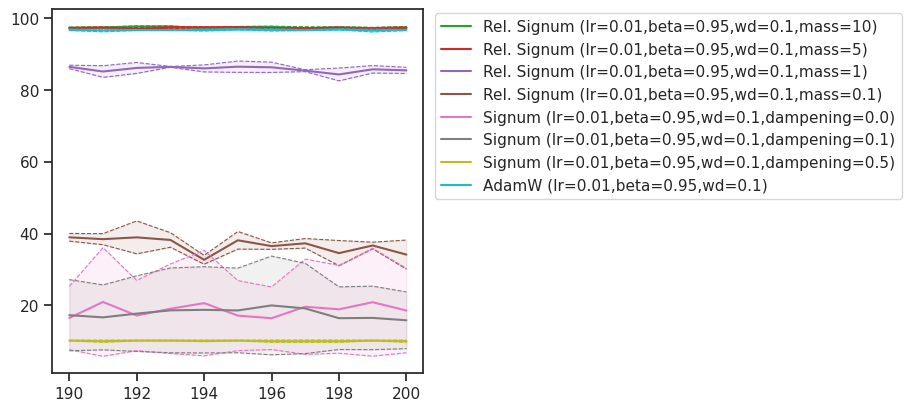
n_timepoints = 11
fig, ax = create_figure(1, 1, (9, 4))
for i, (k, d) in enumerate(results.items()):
if 'lr=0.01,beta=0.95' not in k:
continue
color = f"C{i}"
mu = d['test_acc'].mean(0)
sd = d['test_acc'].std(0)
xs = np.arange(len(mu) - n_timepoints + 1, len(mu) + 1)
mu = mu[-n_timepoints:]
sd = sd[-n_timepoints:]
if np.mean(mu) < 90: # only top performing for high lr
continue
ax.plot(xs, mu + sd, color=color, ls='--', lw=0.8, alpha=1.0)
ax.plot(xs, mu, color=color, label=k)
ax.plot(xs, mu - sd, color=color, ls='--', lw=0.8, alpha=1.0)
plt.fill_between(xs, mu - sd, mu + sd, color=color, alpha=0.1)
ax.legend()
move_legend(ax, (1.01, 1.01))
plt.show()
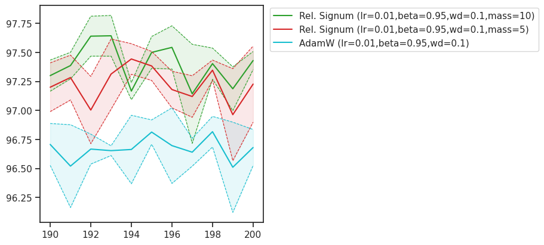
n_timepoints = 11
fig, ax = create_figure(1, 1, (9, 4))
for i, (k, d) in enumerate(results.items()):
if 'lr=0.0001,beta=0.95' not in k:
continue
color = f"C{i}"
mu = d['test_acc'].mean(0)
sd = d['test_acc'].std(0)
xs = np.arange(len(mu) - n_timepoints + 1, len(mu) + 1)
mu = mu[-n_timepoints:]
sd = sd[-n_timepoints:]
ax.plot(xs, mu + sd, color=color, ls='--', lw=0.8, alpha=1.0)
ax.plot(xs, mu, color=color, label=k)
ax.plot(xs, mu - sd, color=color, ls='--', lw=0.8, alpha=1.0)
plt.fill_between(xs, mu - sd, mu + sd, color=color, alpha=0.1)
ax.legend()
move_legend(ax, (1.01, 1.01))
plt.show()
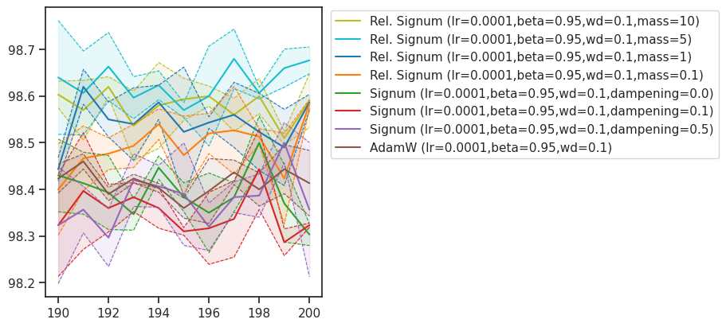
n_timepoints = 11
fig, ax = create_figure(1, 1, (9, 4))
for i, (k, d) in enumerate(results.items()):
if 'lr=0.0005,beta=0.95' not in k:
continue
color = f"C{i}"
mu = d['test_acc'].mean(0)
sd = d['test_acc'].std(0)
xs = np.arange(len(mu) - n_timepoints + 1, len(mu) + 1)
mu = mu[-n_timepoints:]
sd = sd[-n_timepoints:]
ax.plot(xs, mu + sd, color=color, ls='--', lw=0.8, alpha=1.0)
ax.plot(xs, mu, color=color, label=k)
ax.plot(xs, mu - sd, color=color, ls='--', lw=0.8, alpha=1.0)
plt.fill_between(xs, mu - sd, mu + sd, color=color, alpha=0.1)
ax.legend()
move_legend(ax, (1.01, 1.01))
plt.show()
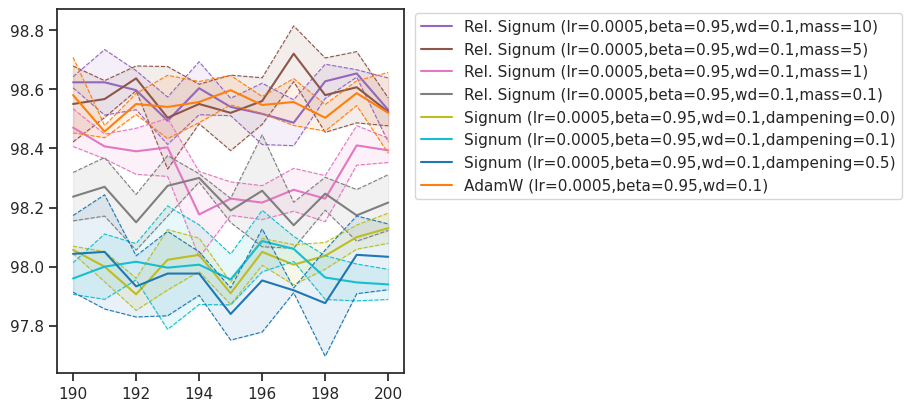
n_timepoints = 11
fig, ax = create_figure(1, 1, (9, 4))
for i, (k, d) in enumerate(results.items()):
if 'lr=0.005,beta=0.95' not in k:
continue
color = f"C{i}"
mu = d['test_acc'].mean(0)
sd = d['test_acc'].std(0)
xs = np.arange(len(mu) - n_timepoints + 1, len(mu) + 1)
mu = mu[-n_timepoints:]
sd = sd[-n_timepoints:]
if np.mean(mu) < 90: # only top performing for high lr
continue
ax.plot(xs, mu + sd, color=color, ls='--', lw=0.8, alpha=1.0)
ax.plot(xs, mu, color=color, label=k)
ax.plot(xs, mu - sd, color=color, ls='--', lw=0.8, alpha=1.0)
plt.fill_between(xs, mu - sd, mu + sd, color=color, alpha=0.1)
ax.legend()
move_legend(ax, (1.01, 1.01))
plt.show()
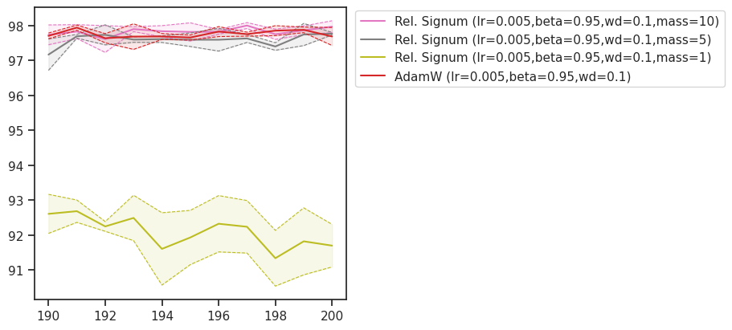
n_timepoints = 51
fig, ax = create_figure(1, 1, (9, 4))
for i, (k, d) in enumerate(results.items()):
if 'lr=0.001,beta=0.95' not in k:
continue
color = f"C{i}"
mu = d['test_acc'].mean(0)
sd = d['test_acc'].std(0)
# smoothen?
smooth_k_int = 5
mu = smooth_1d(mu, smooth_k_int)[:-(smooth_k_int-1)]
sd = smooth_1d(sd, smooth_k_int)[:-(smooth_k_int-1)]
xs = np.arange(len(mu) - n_timepoints + 1, len(mu) + 1)
mu = mu[-n_timepoints:]
sd = sd[-n_timepoints:]
ax.plot(xs, mu + sd, color=color, ls='--', lw=0.8, alpha=1.0)
ax.plot(xs, mu, color=color, label=k)
ax.plot(xs, mu - sd, color=color, ls='--', lw=0.8, alpha=1.0)
plt.fill_between(xs, mu - sd, mu + sd, color=color, alpha=0.1)
ax.legend()
move_legend(ax, (1.01, 1.01))
plt.show()
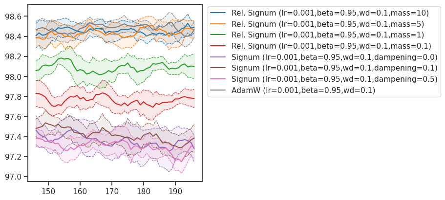
## Was 3 seed fit from before
{'Signum (lr=0.001,momentum=0.85,dampening=0.1)': 96.46,
'Signum (lr=0.001,momentum=0.85,dampening=0.5)': 96.57,
'Signum (lr=0.001,momentum=0.85,dampening=0.0)': 96.76,
'Rel. Signum (lr=0.001,momentum=0.85,mass=1)': 98.53,
'Rel. Signum (lr=0.001,momentum=0.85,mass=10)': 98.58,
'Rel. Signum (lr=0.001,momentum=0.85,mass=5)': 98.65}
## Was momentum = 0.8
{'Rel. Signum (lr=0.001,momentum=0.8,mass=50)': 96.82,
'Signum (lr=0.001,momentum=0.8,dampening=0.5)': 97.81,
'Signum (lr=0.001,momentum=0.8,dampening=0.0)': 97.98,
'Signum (lr=0.001,momentum=0.8,dampening=0.1)': 98.1,
'Rel. Signum (lr=0.001,momentum=0.8,mass=10)': 98.21,
'Rel. Signum (lr=0.001,momentum=0.8,mass=5)': 98.23,
'Rel. Signum (lr=0.001,momentum=0.8,mass=1)': 98.33}
plot_results(
{k: d for k, d in results.items() if not k.startswith('Signum')},
title="CIFAR10 (mean ± std over seeds) -- Adam vs Signum",
figsize=(15, 8),
)
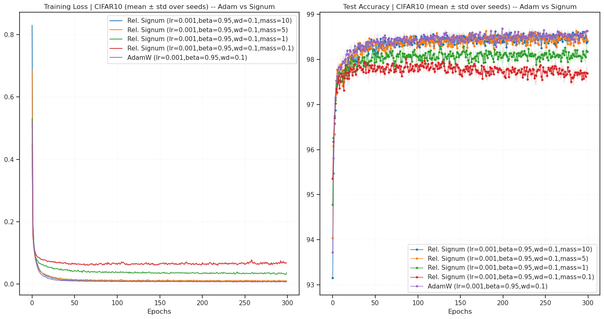
n_timepoints = 100
fig, ax = create_figure(1, 1, (9, 4))
for i, (k, d) in enumerate(results.items()):
color = f"C{i}"
mu = d['test_acc'].mean(0)[-n_timepoints:]
sd = d['test_acc'].std(0)[-n_timepoints:]
xs = np.arange(len(d['test_acc']) - n_timepoints, len(d['test_acc']))
ax.plot(xs, mu + sd, color=color, ls='--', lw=0.8, alpha=1.0)
ax.plot(xs, mu, color=color, label=k)
ax.plot(xs, mu - sd, color=color, ls='--', lw=0.8, alpha=1.0)
plt.fill_between(xs, mu - sd, mu + sd, color=color, alpha=0.1)
ax.legend()
move_legend(ax, (1.01, 1.01))
plt.show()
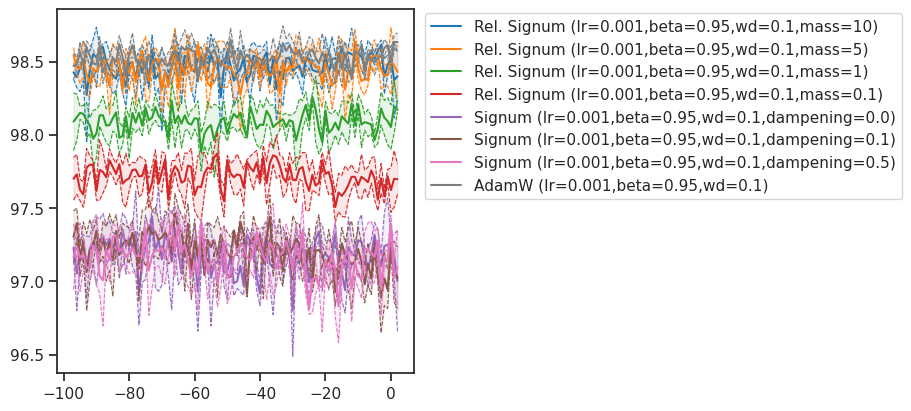
n_timepoints = 10
fig, ax = create_figure(1, 1, (9, 4))
for i, (k, d) in enumerate(results.items()):
color = f"C{i}"
mu = d['test_acc'].mean(0)[-n_timepoints:]
sd = d['test_acc'].std(0)[-n_timepoints:]
xs = np.arange(len(d['test_acc']) - n_timepoints, len(d['test_acc']))
ax.plot(xs, mu + sd, color=color, ls='--', lw=0.8, alpha=1.0)
ax.plot(xs, mu, color=color, label=k, marker='.')
ax.plot(xs, mu - sd, color=color, ls='--', lw=0.8, alpha=1.0)
plt.fill_between(xs, mu - sd, mu + sd, color=color, alpha=0.1)
ax.legend()
move_legend(ax, (1.01, 1.01))
plt.show()
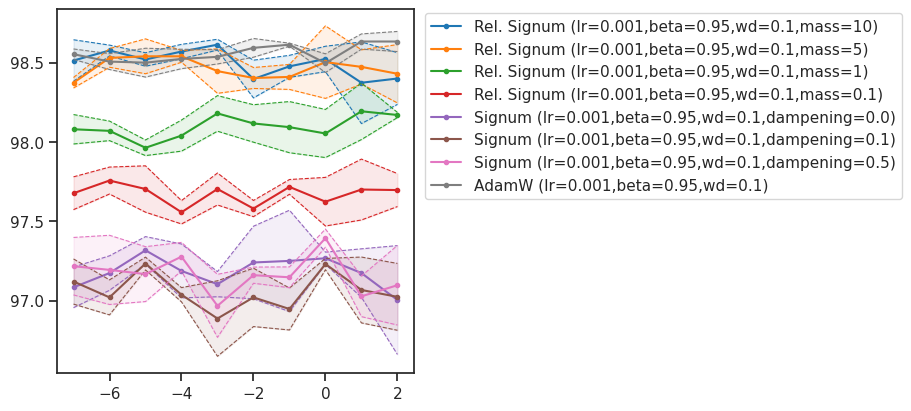
n_timepoints = 50
fig, ax = create_figure(1, 1, (9, 4))
for i, (k, d) in enumerate(results.items()):
color = f"C{i}"
mu = d['test_acc'].mean(0)
sd = d['test_acc'].std(0)
mu = smooth_1d(mu, 2)[-n_timepoints:]
sd = smooth_1d(sd, 2)[-n_timepoints:]
xs = np.arange(len(d['test_acc']) - n_timepoints, len(d['test_acc']))
ax.plot(xs, mu + sd, color=color, ls='--', lw=0.8, alpha=1.0)
ax.plot(xs, mu, color=color, label=k)
ax.plot(xs, mu - sd, color=color, ls='--', lw=0.8, alpha=1.0)
plt.fill_between(xs, mu - sd, mu + sd, color=color, alpha=0.1)
ax.legend()
move_legend(ax, (1.01, 1.01))
plt.show()
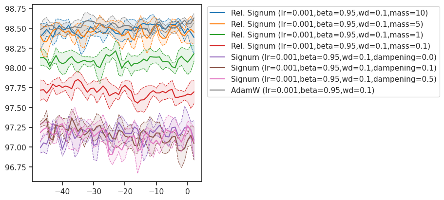
Signum (high lr)#
opt_kws = dict(lr=1e-2, momentum=0.85, weight_decay=0.0)
base_str = f"lr={opt_kws['lr']},momentum={opt_kws['momentum']}"
experiments = [
Experiment(
name=f'Rel. Signum ({base_str},mass=5)',
opt_fn=make_opt(RelativisticSignum, mass=5, **opt_kws)),
Experiment(
name=f'Rel. Signum ({base_str},mass=10)',
opt_fn=make_opt(RelativisticSignum, mass=10, **opt_kws)),
Experiment(
name=f'Rel. Signum ({base_str},mass=1)',
opt_fn=make_opt(RelativisticSignum, mass=1, **opt_kws)),
Experiment(
name=f'Rel. Signum ({base_str},mass=0.1)',
opt_fn=make_opt(RelativisticSignum, mass=0.1, **opt_kws)),
Experiment(
name=f'Signum ({base_str},dampening=0.0)',
opt_fn=make_opt(SignSGD, dampening=0.0, **opt_kws)),
Experiment(
name=f'Signum ({base_str},dampening=0.1)',
opt_fn=make_opt(SignSGD, dampening=0.1, **opt_kws)),
Experiment(
name=f'Signum ({base_str},dampening=0.5)',
opt_fn=make_opt(SignSGD, dampening=0.5, **opt_kws)),
]
print(len(experiments))
7
print(experiments)
[ Experiment( name='Rel. Signum (lr=0.01,momentum=0.85,mass=5)', opt_fn=<function make_opt.<locals>._fn at 0x7746a62e34c0> ), Experiment( name='Rel. Signum (lr=0.01,momentum=0.85,mass=10)', opt_fn=<function make_opt.<locals>._fn at 0x7746a62e3f60> ), Experiment( name='Rel. Signum (lr=0.01,momentum=0.85,mass=1)', opt_fn=<function make_opt.<locals>._fn at 0x7746a62e3740> ), Experiment( name='Rel. Signum (lr=0.01,momentum=0.85,mass=0.1)', opt_fn=<function make_opt.<locals>._fn at 0x7746a62e3ec0> ), Experiment( name='Signum (lr=0.01,momentum=0.85,dampening=0.0)', opt_fn=<function make_opt.<locals>._fn at 0x7746a62e2e80> ), Experiment( name='Signum (lr=0.01,momentum=0.85,dampening=0.1)', opt_fn=<function make_opt.<locals>._fn at 0x7746a62e36a0> ), Experiment( name='Signum (lr=0.01,momentum=0.85,dampening=0.5)', opt_fn=<function make_opt.<locals>._fn at 0x7746a62e3920> ) ]
cfg.epochs = 40
print(cfg)
TrainConfig( dataset='MNIST', batch_size=256, epochs=40, device='cuda:0', print_every=None, grad_clip=None, data_on_device=True, amp=False, verbose=True )
%%time
results = run_experiments(
experiments,
cfg=cfg,
model_class=MLP,
seeds=[0, 1, 2],
)
--- Training (MNIST) --- Model: MLP | seed=0 Optimizer: RelativisticSignum
RelativisticSignum ( Parameter Group 0 lr: 0.01 mass: 5 momentum: 0.85 weight_decay: 0.0 )
Epoch 1/40: Train Loss 0.7086 | Test Acc 90.04%
Epoch 2/40: Train Loss 0.1960 | Test Acc 95.69%
Epoch 3/40: Train Loss 0.1329 | Test Acc 96.24%
Epoch 4/40: Train Loss 0.1061 | Test Acc 96.94%
Epoch 5/40: Train Loss 0.0857 | Test Acc 97.16%
Epoch 6/40: Train Loss 0.0745 | Test Acc 97.41%
Epoch 7/40: Train Loss 0.0630 | Test Acc 97.57%
Epoch 8/40: Train Loss 0.0543 | Test Acc 97.53%
Epoch 9/40: Train Loss 0.0492 | Test Acc 97.75%
Epoch 10/40: Train Loss 0.0428 | Test Acc 97.96%
Epoch 11/40: Train Loss 0.0396 | Test Acc 97.96%
Epoch 12/40: Train Loss 0.0370 | Test Acc 98.10%
Epoch 13/40: Train Loss 0.0341 | Test Acc 97.96%
Epoch 14/40: Train Loss 0.0307 | Test Acc 97.91%
Epoch 15/40: Train Loss 0.0259 | Test Acc 98.06%
Epoch 16/40: Train Loss 0.0232 | Test Acc 98.01%
Epoch 17/40: Train Loss 0.0238 | Test Acc 97.63%
Epoch 18/40: Train Loss 0.0213 | Test Acc 98.31%
Epoch 19/40: Train Loss 0.0201 | Test Acc 98.08%
Epoch 20/40: Train Loss 0.0180 | Test Acc 98.03%
Epoch 21/40: Train Loss 0.0166 | Test Acc 98.19%
Epoch 22/40: Train Loss 0.0183 | Test Acc 98.12%
Epoch 23/40: Train Loss 0.0154 | Test Acc 98.23%
Epoch 24/40: Train Loss 0.0158 | Test Acc 97.94%
Epoch 25/40: Train Loss 0.0152 | Test Acc 98.27%
Epoch 26/40: Train Loss 0.0124 | Test Acc 98.30%
Epoch 27/40: Train Loss 0.0115 | Test Acc 98.29%
Epoch 28/40: Train Loss 0.0128 | Test Acc 98.00%
Epoch 29/40: Train Loss 0.0101 | Test Acc 98.04%
Epoch 30/40: Train Loss 0.0120 | Test Acc 98.26%
Epoch 31/40: Train Loss 0.0103 | Test Acc 98.11%
Epoch 32/40: Train Loss 0.0121 | Test Acc 98.34%
Epoch 33/40: Train Loss 0.0099 | Test Acc 98.24%
Epoch 34/40: Train Loss 0.0110 | Test Acc 98.39%
Epoch 35/40: Train Loss 0.0088 | Test Acc 98.20%
Epoch 36/40: Train Loss 0.0088 | Test Acc 98.21%
Epoch 37/40: Train Loss 0.0082 | Test Acc 98.29%
Epoch 38/40: Train Loss 0.0101 | Test Acc 98.26%
Epoch 39/40: Train Loss 0.0064 | Test Acc 98.63%
Epoch 40/40: Train Loss 0.0077 | Test Acc 98.16%
Finished in 25.5s
--- Training (MNIST) --- Model: MLP | seed=1 Optimizer: RelativisticSignum
RelativisticSignum ( Parameter Group 0 lr: 0.01 mass: 5 momentum: 0.85 weight_decay: 0.0 )
Epoch 1/40: Train Loss 0.7114 | Test Acc 91.47%
Epoch 2/40: Train Loss 0.1957 | Test Acc 95.28%
Epoch 3/40: Train Loss 0.1348 | Test Acc 96.43%
Epoch 4/40: Train Loss 0.1063 | Test Acc 96.49%
Epoch 5/40: Train Loss 0.0890 | Test Acc 97.37%
Epoch 6/40: Train Loss 0.0772 | Test Acc 97.46%
Epoch 7/40: Train Loss 0.0625 | Test Acc 97.47%
Epoch 8/40: Train Loss 0.0580 | Test Acc 97.79%
Epoch 9/40: Train Loss 0.0514 | Test Acc 97.61%
Epoch 10/40: Train Loss 0.0447 | Test Acc 97.74%
Epoch 11/40: Train Loss 0.0390 | Test Acc 97.74%
Epoch 12/40: Train Loss 0.0378 | Test Acc 97.92%
Epoch 13/40: Train Loss 0.0331 | Test Acc 97.82%
Epoch 14/40: Train Loss 0.0290 | Test Acc 98.04%
Epoch 15/40: Train Loss 0.0257 | Test Acc 98.02%
Epoch 16/40: Train Loss 0.0287 | Test Acc 98.18%
Epoch 17/40: Train Loss 0.0230 | Test Acc 97.90%
Epoch 18/40: Train Loss 0.0222 | Test Acc 98.06%
Epoch 19/40: Train Loss 0.0194 | Test Acc 98.18%
Epoch 20/40: Train Loss 0.0187 | Test Acc 98.16%
Epoch 21/40: Train Loss 0.0185 | Test Acc 98.18%
Epoch 22/40: Train Loss 0.0158 | Test Acc 98.07%
Epoch 23/40: Train Loss 0.0170 | Test Acc 97.94%
Epoch 24/40: Train Loss 0.0171 | Test Acc 98.30%
Epoch 25/40: Train Loss 0.0144 | Test Acc 98.21%
Epoch 26/40: Train Loss 0.0122 | Test Acc 98.24%
Epoch 27/40: Train Loss 0.0120 | Test Acc 98.29%
Epoch 28/40: Train Loss 0.0126 | Test Acc 98.25%
Epoch 29/40: Train Loss 0.0109 | Test Acc 98.19%
Epoch 30/40: Train Loss 0.0099 | Test Acc 98.41%
Epoch 31/40: Train Loss 0.0097 | Test Acc 98.27%
Epoch 32/40: Train Loss 0.0098 | Test Acc 98.23%
Epoch 33/40: Train Loss 0.0105 | Test Acc 98.44%
Epoch 34/40: Train Loss 0.0094 | Test Acc 98.37%
Epoch 35/40: Train Loss 0.0086 | Test Acc 98.15%
Epoch 36/40: Train Loss 0.0091 | Test Acc 98.23%
Epoch 37/40: Train Loss 0.0073 | Test Acc 98.51%
Epoch 38/40: Train Loss 0.0085 | Test Acc 98.25%
Epoch 39/40: Train Loss 0.0077 | Test Acc 98.29%
Epoch 40/40: Train Loss 0.0059 | Test Acc 98.44%
Finished in 24.2s
--- Training (MNIST) --- Model: MLP | seed=2 Optimizer: RelativisticSignum
RelativisticSignum ( Parameter Group 0 lr: 0.01 mass: 5 momentum: 0.85 weight_decay: 0.0 )
Epoch 1/40: Train Loss 0.7119 | Test Acc 92.64%
Epoch 2/40: Train Loss 0.1922 | Test Acc 95.10%
Epoch 3/40: Train Loss 0.1348 | Test Acc 96.50%
Epoch 4/40: Train Loss 0.1044 | Test Acc 97.10%
Epoch 5/40: Train Loss 0.0862 | Test Acc 97.48%
Epoch 6/40: Train Loss 0.0720 | Test Acc 97.79%
Epoch 7/40: Train Loss 0.0628 | Test Acc 97.76%
Epoch 8/40: Train Loss 0.0562 | Test Acc 97.71%
Epoch 9/40: Train Loss 0.0491 | Test Acc 97.98%
Epoch 10/40: Train Loss 0.0439 | Test Acc 97.73%
Epoch 11/40: Train Loss 0.0414 | Test Acc 98.13%
Epoch 12/40: Train Loss 0.0360 | Test Acc 98.19%
Epoch 13/40: Train Loss 0.0343 | Test Acc 97.72%
Epoch 14/40: Train Loss 0.0310 | Test Acc 97.98%
Epoch 15/40: Train Loss 0.0293 | Test Acc 97.83%
Epoch 16/40: Train Loss 0.0265 | Test Acc 98.16%
Epoch 17/40: Train Loss 0.0239 | Test Acc 97.98%
Epoch 18/40: Train Loss 0.0226 | Test Acc 98.21%
Epoch 19/40: Train Loss 0.0213 | Test Acc 98.24%
Epoch 20/40: Train Loss 0.0189 | Test Acc 98.25%
Epoch 21/40: Train Loss 0.0187 | Test Acc 98.23%
Epoch 22/40: Train Loss 0.0165 | Test Acc 98.39%
Epoch 23/40: Train Loss 0.0156 | Test Acc 98.15%
Epoch 24/40: Train Loss 0.0140 | Test Acc 98.31%
Epoch 25/40: Train Loss 0.0130 | Test Acc 98.22%
Epoch 26/40: Train Loss 0.0129 | Test Acc 98.47%
Epoch 27/40: Train Loss 0.0120 | Test Acc 98.27%
Epoch 28/40: Train Loss 0.0130 | Test Acc 98.21%
Epoch 29/40: Train Loss 0.0124 | Test Acc 98.10%
Epoch 30/40: Train Loss 0.0113 | Test Acc 98.33%
Epoch 31/40: Train Loss 0.0145 | Test Acc 98.29%
Epoch 32/40: Train Loss 0.0100 | Test Acc 98.30%
Epoch 33/40: Train Loss 0.0092 | Test Acc 98.07%
Epoch 34/40: Train Loss 0.0088 | Test Acc 98.34%
Epoch 35/40: Train Loss 0.0106 | Test Acc 98.30%
Epoch 36/40: Train Loss 0.0085 | Test Acc 98.48%
Epoch 37/40: Train Loss 0.0097 | Test Acc 98.40%
Epoch 38/40: Train Loss 0.0103 | Test Acc 98.35%
Epoch 39/40: Train Loss 0.0078 | Test Acc 98.39%
Epoch 40/40: Train Loss 0.0060 | Test Acc 98.45%
Finished in 24.8s
--- Training (MNIST) --- Model: MLP | seed=0 Optimizer: RelativisticSignum
RelativisticSignum ( Parameter Group 0 lr: 0.01 mass: 10 momentum: 0.85 weight_decay: 0.0 )
Epoch 1/40: Train Loss 0.9657 | Test Acc 88.45%
Epoch 2/40: Train Loss 0.2660 | Test Acc 94.29%
Epoch 3/40: Train Loss 0.1810 | Test Acc 95.68%
Epoch 4/40: Train Loss 0.1442 | Test Acc 96.51%
Epoch 5/40: Train Loss 0.1183 | Test Acc 96.76%
Epoch 6/40: Train Loss 0.1029 | Test Acc 97.06%
Epoch 7/40: Train Loss 0.0914 | Test Acc 96.87%
Epoch 8/40: Train Loss 0.0782 | Test Acc 97.38%
Epoch 9/40: Train Loss 0.0720 | Test Acc 97.45%
Epoch 10/40: Train Loss 0.0630 | Test Acc 97.71%
Epoch 11/40: Train Loss 0.0587 | Test Acc 97.80%
Epoch 12/40: Train Loss 0.0546 | Test Acc 97.91%
Epoch 13/40: Train Loss 0.0502 | Test Acc 97.87%
Epoch 14/40: Train Loss 0.0469 | Test Acc 97.91%
Epoch 15/40: Train Loss 0.0427 | Test Acc 97.81%
Epoch 16/40: Train Loss 0.0396 | Test Acc 97.99%
Epoch 17/40: Train Loss 0.0366 | Test Acc 97.88%
Epoch 18/40: Train Loss 0.0345 | Test Acc 98.16%
Epoch 19/40: Train Loss 0.0333 | Test Acc 97.94%
Epoch 20/40: Train Loss 0.0295 | Test Acc 98.16%
Epoch 21/40: Train Loss 0.0287 | Test Acc 98.13%
Epoch 22/40: Train Loss 0.0251 | Test Acc 98.17%
Epoch 23/40: Train Loss 0.0246 | Test Acc 98.03%
Epoch 24/40: Train Loss 0.0254 | Test Acc 98.13%
Epoch 25/40: Train Loss 0.0223 | Test Acc 98.11%
Epoch 26/40: Train Loss 0.0222 | Test Acc 98.20%
Epoch 27/40: Train Loss 0.0202 | Test Acc 98.04%
Epoch 28/40: Train Loss 0.0183 | Test Acc 98.32%
Epoch 29/40: Train Loss 0.0185 | Test Acc 98.18%
Epoch 30/40: Train Loss 0.0171 | Test Acc 98.22%
Epoch 31/40: Train Loss 0.0158 | Test Acc 98.27%
Epoch 32/40: Train Loss 0.0152 | Test Acc 98.33%
Epoch 33/40: Train Loss 0.0145 | Test Acc 98.41%
Epoch 34/40: Train Loss 0.0140 | Test Acc 98.44%
Epoch 35/40: Train Loss 0.0142 | Test Acc 98.26%
Epoch 36/40: Train Loss 0.0124 | Test Acc 98.42%
Epoch 37/40: Train Loss 0.0135 | Test Acc 98.23%
Epoch 38/40: Train Loss 0.0118 | Test Acc 98.29%
Epoch 39/40: Train Loss 0.0115 | Test Acc 98.31%
Epoch 40/40: Train Loss 0.0114 | Test Acc 98.18%
Finished in 36.9s
--- Training (MNIST) --- Model: MLP | seed=1 Optimizer: RelativisticSignum
RelativisticSignum ( Parameter Group 0 lr: 0.01 mass: 10 momentum: 0.85 weight_decay: 0.0 )
Epoch 1/40: Train Loss 0.9605 | Test Acc 88.92%
Epoch 2/40: Train Loss 0.2646 | Test Acc 94.21%
Epoch 3/40: Train Loss 0.1852 | Test Acc 95.48%
Epoch 4/40: Train Loss 0.1438 | Test Acc 96.06%
Epoch 5/40: Train Loss 0.1210 | Test Acc 96.66%
Epoch 6/40: Train Loss 0.1068 | Test Acc 97.11%
Epoch 7/40: Train Loss 0.0898 | Test Acc 97.27%
Epoch 8/40: Train Loss 0.0833 | Test Acc 97.36%
Epoch 9/40: Train Loss 0.0734 | Test Acc 97.60%
Epoch 10/40: Train Loss 0.0679 | Test Acc 97.64%
Epoch 11/40: Train Loss 0.0608 | Test Acc 97.67%
Epoch 12/40: Train Loss 0.0561 | Test Acc 97.71%
Epoch 13/40: Train Loss 0.0507 | Test Acc 97.78%
Epoch 14/40: Train Loss 0.0471 | Test Acc 97.97%
Epoch 15/40: Train Loss 0.0404 | Test Acc 97.93%
Epoch 16/40: Train Loss 0.0401 | Test Acc 98.04%
Epoch 17/40: Train Loss 0.0375 | Test Acc 97.94%
Epoch 18/40: Train Loss 0.0358 | Test Acc 97.91%
Epoch 19/40: Train Loss 0.0324 | Test Acc 97.96%
Epoch 20/40: Train Loss 0.0302 | Test Acc 97.90%
Epoch 21/40: Train Loss 0.0305 | Test Acc 97.86%
Epoch 22/40: Train Loss 0.0270 | Test Acc 97.93%
Epoch 23/40: Train Loss 0.0263 | Test Acc 98.07%
Epoch 24/40: Train Loss 0.0241 | Test Acc 98.17%
Epoch 25/40: Train Loss 0.0226 | Test Acc 98.08%
Epoch 26/40: Train Loss 0.0212 | Test Acc 97.85%
Epoch 27/40: Train Loss 0.0202 | Test Acc 98.12%
Epoch 28/40: Train Loss 0.0181 | Test Acc 98.05%
Epoch 29/40: Train Loss 0.0180 | Test Acc 98.07%
Epoch 30/40: Train Loss 0.0177 | Test Acc 98.09%
Epoch 31/40: Train Loss 0.0175 | Test Acc 98.12%
Epoch 32/40: Train Loss 0.0163 | Test Acc 98.20%
Epoch 33/40: Train Loss 0.0146 | Test Acc 98.20%
Epoch 34/40: Train Loss 0.0153 | Test Acc 98.33%
Epoch 35/40: Train Loss 0.0141 | Test Acc 97.95%
Epoch 36/40: Train Loss 0.0149 | Test Acc 97.84%
Epoch 37/40: Train Loss 0.0133 | Test Acc 98.25%
Epoch 38/40: Train Loss 0.0129 | Test Acc 98.20%
Epoch 39/40: Train Loss 0.0124 | Test Acc 98.23%
Epoch 40/40: Train Loss 0.0106 | Test Acc 98.14%
Finished in 29.4s
--- Training (MNIST) --- Model: MLP | seed=2 Optimizer: RelativisticSignum
RelativisticSignum ( Parameter Group 0 lr: 0.01 mass: 10 momentum: 0.85 weight_decay: 0.0 )
Epoch 1/40: Train Loss 0.9560 | Test Acc 88.63%
Epoch 2/40: Train Loss 0.2697 | Test Acc 94.08%
Epoch 3/40: Train Loss 0.1844 | Test Acc 95.55%
Epoch 4/40: Train Loss 0.1436 | Test Acc 96.37%
Epoch 5/40: Train Loss 0.1185 | Test Acc 96.96%
Epoch 6/40: Train Loss 0.1024 | Test Acc 97.18%
Epoch 7/40: Train Loss 0.0875 | Test Acc 97.44%
Epoch 8/40: Train Loss 0.0790 | Test Acc 97.59%
Epoch 9/40: Train Loss 0.0714 | Test Acc 97.71%
Epoch 10/40: Train Loss 0.0662 | Test Acc 97.61%
Epoch 11/40: Train Loss 0.0612 | Test Acc 97.85%
Epoch 12/40: Train Loss 0.0556 | Test Acc 97.98%
Epoch 13/40: Train Loss 0.0501 | Test Acc 97.97%
Epoch 14/40: Train Loss 0.0455 | Test Acc 97.92%
Epoch 15/40: Train Loss 0.0423 | Test Acc 97.92%
Epoch 16/40: Train Loss 0.0402 | Test Acc 97.94%
Epoch 17/40: Train Loss 0.0375 | Test Acc 98.02%
Epoch 18/40: Train Loss 0.0349 | Test Acc 98.00%
Epoch 19/40: Train Loss 0.0330 | Test Acc 98.08%
Epoch 20/40: Train Loss 0.0302 | Test Acc 98.09%
Epoch 21/40: Train Loss 0.0283 | Test Acc 98.15%
Epoch 22/40: Train Loss 0.0256 | Test Acc 98.18%
Epoch 23/40: Train Loss 0.0242 | Test Acc 98.08%
Epoch 24/40: Train Loss 0.0251 | Test Acc 98.04%
Epoch 25/40: Train Loss 0.0240 | Test Acc 98.17%
Epoch 26/40: Train Loss 0.0216 | Test Acc 98.23%
Epoch 27/40: Train Loss 0.0193 | Test Acc 98.19%
Epoch 28/40: Train Loss 0.0188 | Test Acc 98.14%
Epoch 29/40: Train Loss 0.0194 | Test Acc 98.28%
Epoch 30/40: Train Loss 0.0165 | Test Acc 98.22%
Epoch 31/40: Train Loss 0.0186 | Test Acc 98.26%
Epoch 32/40: Train Loss 0.0153 | Test Acc 98.29%
Epoch 33/40: Train Loss 0.0146 | Test Acc 98.32%
Epoch 34/40: Train Loss 0.0150 | Test Acc 98.21%
Epoch 35/40: Train Loss 0.0145 | Test Acc 98.28%
Epoch 36/40: Train Loss 0.0130 | Test Acc 98.29%
Epoch 37/40: Train Loss 0.0136 | Test Acc 98.15%
Epoch 38/40: Train Loss 0.0126 | Test Acc 98.28%
Epoch 39/40: Train Loss 0.0120 | Test Acc 98.36%
Epoch 40/40: Train Loss 0.0115 | Test Acc 98.38%
Finished in 27.0s
--- Training (MNIST) --- Model: MLP | seed=0 Optimizer: RelativisticSignum
RelativisticSignum ( Parameter Group 0 lr: 0.01 mass: 1 momentum: 0.85 weight_decay: 0.0 )
Epoch 1/40: Train Loss 0.6841 | Test Acc 90.70%
Epoch 2/40: Train Loss 0.2808 | Test Acc 94.23%
Epoch 3/40: Train Loss 0.2413 | Test Acc 95.68%
Epoch 4/40: Train Loss 0.2006 | Test Acc 96.61%
Epoch 5/40: Train Loss 0.1874 | Test Acc 96.40%
Epoch 6/40: Train Loss 0.1765 | Test Acc 96.84%
Epoch 7/40: Train Loss 0.1620 | Test Acc 97.03%
Epoch 8/40: Train Loss 0.1497 | Test Acc 96.96%
Epoch 9/40: Train Loss 0.1431 | Test Acc 96.77%
Epoch 10/40: Train Loss 0.1372 | Test Acc 97.14%
Epoch 11/40: Train Loss 0.1253 | Test Acc 97.23%
Epoch 12/40: Train Loss 0.1219 | Test Acc 97.05%
Epoch 13/40: Train Loss 0.1185 | Test Acc 97.30%
Epoch 14/40: Train Loss 0.1171 | Test Acc 97.39%
Epoch 15/40: Train Loss 0.1141 | Test Acc 97.64%
Epoch 16/40: Train Loss 0.1119 | Test Acc 97.46%
Epoch 17/40: Train Loss 0.1112 | Test Acc 97.20%
Epoch 18/40: Train Loss 0.1067 | Test Acc 97.44%
Epoch 19/40: Train Loss 0.1002 | Test Acc 97.33%
Epoch 20/40: Train Loss 0.1062 | Test Acc 97.23%
Epoch 21/40: Train Loss 0.1008 | Test Acc 97.73%
Epoch 22/40: Train Loss 0.0989 | Test Acc 97.59%
Epoch 23/40: Train Loss 0.1034 | Test Acc 97.51%
Epoch 24/40: Train Loss 0.0969 | Test Acc 97.30%
Epoch 25/40: Train Loss 0.0978 | Test Acc 97.59%
Epoch 26/40: Train Loss 0.0894 | Test Acc 97.80%
Epoch 27/40: Train Loss 0.0845 | Test Acc 97.49%
Epoch 28/40: Train Loss 0.0879 | Test Acc 97.37%
Epoch 29/40: Train Loss 0.1024 | Test Acc 97.74%
Epoch 30/40: Train Loss 0.0963 | Test Acc 97.34%
Epoch 31/40: Train Loss 0.0851 | Test Acc 97.73%
Epoch 32/40: Train Loss 0.0827 | Test Acc 97.50%
Epoch 33/40: Train Loss 0.0871 | Test Acc 97.49%
Epoch 34/40: Train Loss 0.0822 | Test Acc 97.12%
Epoch 35/40: Train Loss 0.0743 | Test Acc 97.71%
Epoch 36/40: Train Loss 0.0779 | Test Acc 97.32%
Epoch 37/40: Train Loss 0.0860 | Test Acc 97.70%
Epoch 38/40: Train Loss 0.0714 | Test Acc 97.87%
Epoch 39/40: Train Loss 0.0763 | Test Acc 97.63%
Epoch 40/40: Train Loss 0.0713 | Test Acc 97.60%
Finished in 26.8s
--- Training (MNIST) --- Model: MLP | seed=1 Optimizer: RelativisticSignum
RelativisticSignum ( Parameter Group 0 lr: 0.01 mass: 1 momentum: 0.85 weight_decay: 0.0 )
Epoch 1/40: Train Loss 0.7600 | Test Acc 92.83%
Epoch 2/40: Train Loss 0.2879 | Test Acc 95.20%
Epoch 3/40: Train Loss 0.2286 | Test Acc 96.55%
Epoch 4/40: Train Loss 0.2026 | Test Acc 95.98%
Epoch 5/40: Train Loss 0.1834 | Test Acc 96.83%
Epoch 6/40: Train Loss 0.1560 | Test Acc 96.59%
Epoch 7/40: Train Loss 0.1599 | Test Acc 96.60%
Epoch 8/40: Train Loss 0.1437 | Test Acc 96.92%
Epoch 9/40: Train Loss 0.1379 | Test Acc 97.15%
Epoch 10/40: Train Loss 0.1346 | Test Acc 97.09%
Epoch 11/40: Train Loss 0.1297 | Test Acc 97.18%
Epoch 12/40: Train Loss 0.1195 | Test Acc 97.47%
Epoch 13/40: Train Loss 0.1216 | Test Acc 97.40%
Epoch 14/40: Train Loss 0.1133 | Test Acc 97.36%
Epoch 15/40: Train Loss 0.1060 | Test Acc 97.29%
Epoch 16/40: Train Loss 0.1015 | Test Acc 97.38%
Epoch 17/40: Train Loss 0.1144 | Test Acc 97.28%
Epoch 18/40: Train Loss 0.1065 | Test Acc 97.16%
Epoch 19/40: Train Loss 0.1033 | Test Acc 97.63%
Epoch 20/40: Train Loss 0.1004 | Test Acc 97.39%
Epoch 21/40: Train Loss 0.0904 | Test Acc 97.33%
Epoch 22/40: Train Loss 0.0929 | Test Acc 97.45%
Epoch 23/40: Train Loss 0.0958 | Test Acc 97.62%
Epoch 24/40: Train Loss 0.0887 | Test Acc 97.30%
Epoch 25/40: Train Loss 0.0836 | Test Acc 97.29%
Epoch 26/40: Train Loss 0.1004 | Test Acc 97.70%
Epoch 27/40: Train Loss 0.0907 | Test Acc 97.61%
Epoch 28/40: Train Loss 0.0948 | Test Acc 97.60%
Epoch 29/40: Train Loss 0.0865 | Test Acc 97.68%
Epoch 30/40: Train Loss 0.0883 | Test Acc 97.57%
Epoch 31/40: Train Loss 0.0841 | Test Acc 97.43%
Epoch 32/40: Train Loss 0.0763 | Test Acc 97.31%
Epoch 33/40: Train Loss 0.0804 | Test Acc 97.67%
Epoch 34/40: Train Loss 0.0845 | Test Acc 97.57%
Epoch 35/40: Train Loss 0.0697 | Test Acc 97.31%
Epoch 36/40: Train Loss 0.0782 | Test Acc 97.64%
Epoch 37/40: Train Loss 0.0699 | Test Acc 97.46%
Epoch 38/40: Train Loss 0.0789 | Test Acc 97.69%
Epoch 39/40: Train Loss 0.0727 | Test Acc 97.63%
Epoch 40/40: Train Loss 0.0763 | Test Acc 97.60%
Finished in 26.9s
--- Training (MNIST) --- Model: MLP | seed=2 Optimizer: RelativisticSignum
RelativisticSignum ( Parameter Group 0 lr: 0.01 mass: 1 momentum: 0.85 weight_decay: 0.0 )
Epoch 1/40: Train Loss 0.6396 | Test Acc 92.94%
Epoch 2/40: Train Loss 0.2590 | Test Acc 95.62%
Epoch 3/40: Train Loss 0.2213 | Test Acc 95.49%
Epoch 4/40: Train Loss 0.1986 | Test Acc 96.51%
Epoch 5/40: Train Loss 0.1787 | Test Acc 96.38%
Epoch 6/40: Train Loss 0.1616 | Test Acc 96.69%
Epoch 7/40: Train Loss 0.1562 | Test Acc 96.87%
Epoch 8/40: Train Loss 0.1464 | Test Acc 96.92%
Epoch 9/40: Train Loss 0.1479 | Test Acc 96.65%
Epoch 10/40: Train Loss 0.1457 | Test Acc 96.91%
Epoch 11/40: Train Loss 0.1285 | Test Acc 96.94%
Epoch 12/40: Train Loss 0.1255 | Test Acc 97.35%
Epoch 13/40: Train Loss 0.1274 | Test Acc 97.45%
Epoch 14/40: Train Loss 0.1215 | Test Acc 97.13%
Epoch 15/40: Train Loss 0.1185 | Test Acc 97.44%
Epoch 16/40: Train Loss 0.1154 | Test Acc 97.44%
Epoch 17/40: Train Loss 0.1106 | Test Acc 97.58%
Epoch 18/40: Train Loss 0.1170 | Test Acc 97.38%
Epoch 19/40: Train Loss 0.1121 | Test Acc 97.38%
Epoch 20/40: Train Loss 0.1074 | Test Acc 97.61%
Epoch 21/40: Train Loss 0.1090 | Test Acc 97.29%
Epoch 22/40: Train Loss 0.1045 | Test Acc 97.53%
Epoch 23/40: Train Loss 0.1050 | Test Acc 97.47%
Epoch 24/40: Train Loss 0.1014 | Test Acc 97.45%
Epoch 25/40: Train Loss 0.1026 | Test Acc 97.59%
Epoch 26/40: Train Loss 0.0942 | Test Acc 97.50%
Epoch 27/40: Train Loss 0.0972 | Test Acc 97.43%
Epoch 28/40: Train Loss 0.0966 | Test Acc 97.56%
Epoch 29/40: Train Loss 0.0960 | Test Acc 97.46%
Epoch 30/40: Train Loss 0.0866 | Test Acc 97.92%
Epoch 31/40: Train Loss 0.0910 | Test Acc 97.61%
Epoch 32/40: Train Loss 0.0939 | Test Acc 97.38%
Epoch 33/40: Train Loss 0.0948 | Test Acc 97.56%
Epoch 34/40: Train Loss 0.0922 | Test Acc 97.65%
Epoch 35/40: Train Loss 0.0900 | Test Acc 97.71%
Epoch 36/40: Train Loss 0.0804 | Test Acc 97.55%
Epoch 37/40: Train Loss 0.0927 | Test Acc 97.78%
Epoch 38/40: Train Loss 0.0920 | Test Acc 97.49%
Epoch 39/40: Train Loss 0.0958 | Test Acc 97.59%
Epoch 40/40: Train Loss 0.0856 | Test Acc 97.43%
Finished in 36.1s
--- Training (MNIST) --- Model: MLP | seed=0 Optimizer: RelativisticSignum
RelativisticSignum ( Parameter Group 0 lr: 0.01 mass: 0.1 momentum: 0.85 weight_decay: 0.0 )
Epoch 1/40: Train Loss 0.8264 | Test Acc 90.39%
Epoch 2/40: Train Loss 0.5294 | Test Acc 91.21%
Epoch 3/40: Train Loss 0.5249 | Test Acc 91.81%
Epoch 4/40: Train Loss 0.5497 | Test Acc 91.81%
Epoch 5/40: Train Loss 0.5864 | Test Acc 92.04%
Epoch 6/40: Train Loss 0.6136 | Test Acc 91.33%
Epoch 7/40: Train Loss 0.6304 | Test Acc 92.04%
Epoch 8/40: Train Loss 0.6603 | Test Acc 91.20%
Epoch 9/40: Train Loss 0.6983 | Test Acc 89.62%
Epoch 10/40: Train Loss 0.6568 | Test Acc 91.28%
Epoch 11/40: Train Loss 0.6890 | Test Acc 90.28%
Epoch 12/40: Train Loss 0.6990 | Test Acc 91.81%
Epoch 13/40: Train Loss 0.7579 | Test Acc 90.74%
Epoch 14/40: Train Loss 0.7441 | Test Acc 91.65%
Epoch 15/40: Train Loss 0.6566 | Test Acc 90.78%
Epoch 16/40: Train Loss 0.7498 | Test Acc 90.31%
Epoch 17/40: Train Loss 0.7611 | Test Acc 89.67%
Epoch 18/40: Train Loss 0.7239 | Test Acc 89.42%
Epoch 19/40: Train Loss 0.7591 | Test Acc 88.97%
Epoch 20/40: Train Loss 0.7272 | Test Acc 91.21%
Epoch 21/40: Train Loss 0.7028 | Test Acc 88.27%
Epoch 22/40: Train Loss 0.7461 | Test Acc 87.62%
Epoch 23/40: Train Loss 0.7464 | Test Acc 91.01%
Epoch 24/40: Train Loss 0.7380 | Test Acc 91.05%
Epoch 25/40: Train Loss 0.7768 | Test Acc 91.86%
Epoch 26/40: Train Loss 0.7167 | Test Acc 92.16%
Epoch 27/40: Train Loss 0.7418 | Test Acc 92.00%
Epoch 28/40: Train Loss 0.6943 | Test Acc 90.49%
Epoch 29/40: Train Loss 0.6954 | Test Acc 91.88%
Epoch 30/40: Train Loss 0.7221 | Test Acc 90.74%
Epoch 31/40: Train Loss 0.7041 | Test Acc 91.62%
Epoch 32/40: Train Loss 0.6573 | Test Acc 91.48%
Epoch 33/40: Train Loss 0.6523 | Test Acc 91.69%
Epoch 34/40: Train Loss 0.7187 | Test Acc 92.36%
Epoch 35/40: Train Loss 0.6493 | Test Acc 91.61%
Epoch 36/40: Train Loss 0.7057 | Test Acc 91.61%
Epoch 37/40: Train Loss 0.7347 | Test Acc 91.25%
Epoch 38/40: Train Loss 0.6743 | Test Acc 91.29%
Epoch 39/40: Train Loss 0.7272 | Test Acc 91.23%
Epoch 40/40: Train Loss 0.7661 | Test Acc 91.33%
Finished in 36.1s
--- Training (MNIST) --- Model: MLP | seed=1 Optimizer: RelativisticSignum
RelativisticSignum ( Parameter Group 0 lr: 0.01 mass: 0.1 momentum: 0.85 weight_decay: 0.0 )
Epoch 1/40: Train Loss 0.8189 | Test Acc 91.85%
Epoch 2/40: Train Loss 0.5590 | Test Acc 91.67%
Epoch 3/40: Train Loss 0.5477 | Test Acc 92.34%
Epoch 4/40: Train Loss 0.5410 | Test Acc 92.23%
Epoch 5/40: Train Loss 0.5481 | Test Acc 92.57%
Epoch 6/40: Train Loss 0.5826 | Test Acc 93.49%
Epoch 7/40: Train Loss 0.5641 | Test Acc 91.95%
Epoch 8/40: Train Loss 0.5618 | Test Acc 93.12%
Epoch 9/40: Train Loss 0.5727 | Test Acc 93.32%
Epoch 10/40: Train Loss 0.6033 | Test Acc 91.89%
Epoch 11/40: Train Loss 0.5522 | Test Acc 92.95%
Epoch 12/40: Train Loss 0.5479 | Test Acc 92.62%
Epoch 13/40: Train Loss 0.6078 | Test Acc 93.90%
Epoch 14/40: Train Loss 0.5925 | Test Acc 92.16%
Epoch 15/40: Train Loss 0.5670 | Test Acc 93.25%
Epoch 16/40: Train Loss 0.5912 | Test Acc 93.48%
Epoch 17/40: Train Loss 0.6466 | Test Acc 91.62%
Epoch 18/40: Train Loss 0.6119 | Test Acc 92.60%
Epoch 19/40: Train Loss 0.6211 | Test Acc 92.54%
Epoch 20/40: Train Loss 0.6008 | Test Acc 92.55%
Epoch 21/40: Train Loss 0.5941 | Test Acc 92.54%
Epoch 22/40: Train Loss 0.6002 | Test Acc 93.85%
Epoch 23/40: Train Loss 0.6171 | Test Acc 91.93%
Epoch 24/40: Train Loss 0.6300 | Test Acc 91.08%
Epoch 25/40: Train Loss 0.6243 | Test Acc 91.92%
Epoch 26/40: Train Loss 0.6569 | Test Acc 93.28%
Epoch 27/40: Train Loss 0.5886 | Test Acc 92.30%
Epoch 28/40: Train Loss 0.6373 | Test Acc 90.59%
Epoch 29/40: Train Loss 0.6180 | Test Acc 89.56%
Epoch 30/40: Train Loss 0.6717 | Test Acc 88.91%
Epoch 31/40: Train Loss 0.7072 | Test Acc 92.45%
Epoch 32/40: Train Loss 0.7035 | Test Acc 92.09%
Epoch 33/40: Train Loss 0.7076 | Test Acc 92.39%
Epoch 34/40: Train Loss 0.6781 | Test Acc 91.57%
Epoch 35/40: Train Loss 0.6736 | Test Acc 92.55%
Epoch 36/40: Train Loss 0.6533 | Test Acc 93.21%
Epoch 37/40: Train Loss 0.6611 | Test Acc 90.02%
Epoch 38/40: Train Loss 0.6746 | Test Acc 91.02%
Epoch 39/40: Train Loss 0.6973 | Test Acc 92.52%
Epoch 40/40: Train Loss 0.7331 | Test Acc 91.98%
Finished in 36.1s
--- Training (MNIST) --- Model: MLP | seed=2 Optimizer: RelativisticSignum
RelativisticSignum ( Parameter Group 0 lr: 0.01 mass: 0.1 momentum: 0.85 weight_decay: 0.0 )
Epoch 1/40: Train Loss 0.8902 | Test Acc 91.21%
Epoch 2/40: Train Loss 0.5594 | Test Acc 91.86%
Epoch 3/40: Train Loss 0.5496 | Test Acc 92.80%
Epoch 4/40: Train Loss 0.5560 | Test Acc 92.59%
Epoch 5/40: Train Loss 0.5509 | Test Acc 92.87%
Epoch 6/40: Train Loss 0.5790 | Test Acc 92.96%
Epoch 7/40: Train Loss 0.5856 | Test Acc 92.08%
Epoch 8/40: Train Loss 0.5867 | Test Acc 91.65%
Epoch 9/40: Train Loss 0.6016 | Test Acc 93.51%
Epoch 10/40: Train Loss 0.5940 | Test Acc 93.12%
Epoch 11/40: Train Loss 0.5562 | Test Acc 92.86%
Epoch 12/40: Train Loss 0.5938 | Test Acc 93.20%
Epoch 13/40: Train Loss 0.5927 | Test Acc 92.37%
Epoch 14/40: Train Loss 0.6203 | Test Acc 91.60%
Epoch 15/40: Train Loss 0.6217 | Test Acc 91.29%
Epoch 16/40: Train Loss 0.6544 | Test Acc 91.74%
Epoch 17/40: Train Loss 0.6592 | Test Acc 92.05%
Epoch 18/40: Train Loss 0.6381 | Test Acc 89.33%
Epoch 19/40: Train Loss 0.6350 | Test Acc 92.96%
Epoch 20/40: Train Loss 0.6518 | Test Acc 91.92%
Epoch 21/40: Train Loss 0.6541 | Test Acc 91.46%
Epoch 22/40: Train Loss 0.6725 | Test Acc 91.59%
Epoch 23/40: Train Loss 0.6696 | Test Acc 91.61%
Epoch 24/40: Train Loss 0.6895 | Test Acc 90.52%
Epoch 25/40: Train Loss 0.6836 | Test Acc 91.53%
Epoch 26/40: Train Loss 0.6610 | Test Acc 91.27%
Epoch 27/40: Train Loss 0.7046 | Test Acc 92.46%
Epoch 28/40: Train Loss 0.6854 | Test Acc 91.41%
Epoch 29/40: Train Loss 0.7211 | Test Acc 91.64%
Epoch 30/40: Train Loss 0.7069 | Test Acc 91.70%
Epoch 31/40: Train Loss 0.6628 | Test Acc 89.37%
Epoch 32/40: Train Loss 0.7059 | Test Acc 90.62%
Epoch 33/40: Train Loss 0.6687 | Test Acc 92.43%
Epoch 34/40: Train Loss 0.6867 | Test Acc 91.57%
Epoch 35/40: Train Loss 0.7509 | Test Acc 89.41%
Epoch 36/40: Train Loss 0.7760 | Test Acc 89.81%
Epoch 37/40: Train Loss 0.7681 | Test Acc 85.09%
Epoch 38/40: Train Loss 0.8141 | Test Acc 89.74%
Epoch 39/40: Train Loss 0.7830 | Test Acc 85.94%
Epoch 40/40: Train Loss 0.8024 | Test Acc 88.56%
Finished in 35.8s
--- Training (MNIST) --- Model: MLP | seed=0 Optimizer: SignSGD
SignSGD ( Parameter Group 0 dampening: 0.0 lr: 0.01 momentum: 0.85 weight_decay: 0.0 )
Epoch 1/40: Train Loss 1.0162 | Test Acc 84.80%
Epoch 2/40: Train Loss 1.8555 | Test Acc 79.29%
Epoch 3/40: Train Loss 4.9516 | Test Acc 37.16%
Epoch 4/40: Train Loss 13.4631 | Test Acc 11.35%
Epoch 5/40: Train Loss 18.9177 | Test Acc 10.28%
Epoch 6/40: Train Loss 54.6472 | Test Acc 10.28%
Epoch 7/40: Train Loss 58.7902 | Test Acc 10.28%
Epoch 8/40: Train Loss 49.7022 | Test Acc 11.35%
Epoch 9/40: Train Loss 430.9730 | Test Acc 10.28%
Epoch 10/40: Train Loss 79.6882 | Test Acc 10.28%
Epoch 11/40: Train Loss 472.5295 | Test Acc 10.28%
Epoch 12/40: Train Loss 139.1447 | Test Acc 11.35%
Epoch 13/40: Train Loss 95.1592 | Test Acc 10.28%
Epoch 14/40: Train Loss 671.5417 | Test Acc 10.28%
Epoch 15/40: Train Loss 147.3393 | Test Acc 11.35%
Epoch 16/40: Train Loss 2805.4858 | Test Acc 10.28%
Epoch 17/40: Train Loss 121.0336 | Test Acc 10.28%
Epoch 18/40: Train Loss 860.5412 | Test Acc 10.28%
Epoch 19/40: Train Loss 605.7914 | Test Acc 10.28%
Epoch 20/40: Train Loss 3802.8734 | Test Acc 11.35%
Epoch 21/40: Train Loss 505.9473 | Test Acc 11.35%
Epoch 22/40: Train Loss 415.8372 | Test Acc 10.28%
Epoch 23/40: Train Loss 4342.3314 | Test Acc 11.35%
Epoch 24/40: Train Loss 3596.0580 | Test Acc 11.35%
Epoch 25/40: Train Loss 185.4347 | Test Acc 10.28%
Epoch 26/40: Train Loss 3350.1598 | Test Acc 10.28%
Epoch 27/40: Train Loss 2.3023 | Test Acc 10.28%
Epoch 28/40: Train Loss 6.2184 | Test Acc 10.28%
Epoch 29/40: Train Loss 560.9882 | Test Acc 11.35%
Epoch 30/40: Train Loss 3.1894 | Test Acc 11.35%
Epoch 31/40: Train Loss 2.3023 | Test Acc 10.28%
Epoch 32/40: Train Loss 4.9233 | Test Acc 10.28%
Epoch 33/40: Train Loss 2.3023 | Test Acc 10.28%
Epoch 34/40: Train Loss 849.6892 | Test Acc 10.28%
Epoch 35/40: Train Loss 7.6356 | Test Acc 10.28%
Epoch 36/40: Train Loss 2.3023 | Test Acc 10.28%
Epoch 37/40: Train Loss 2.3023 | Test Acc 10.28%
Epoch 38/40: Train Loss 2.3023 | Test Acc 10.28%
Epoch 39/40: Train Loss 2.3023 | Test Acc 10.28%
Epoch 40/40: Train Loss 2.3023 | Test Acc 10.28%
Finished in 24.7s
--- Training (MNIST) --- Model: MLP | seed=1 Optimizer: SignSGD
SignSGD ( Parameter Group 0 dampening: 0.0 lr: 0.01 momentum: 0.85 weight_decay: 0.0 )
Epoch 1/40: Train Loss 0.9306 | Test Acc 87.41%
Epoch 2/40: Train Loss 1.4802 | Test Acc 78.18%
Epoch 3/40: Train Loss 4.5347 | Test Acc 10.28%
Epoch 4/40: Train Loss 10.6231 | Test Acc 10.28%
Epoch 5/40: Train Loss 28.8245 | Test Acc 10.28%
Epoch 6/40: Train Loss 45.9281 | Test Acc 11.35%
Epoch 7/40: Train Loss 710.1689 | Test Acc 10.28%
Epoch 8/40: Train Loss 379.2295 | Test Acc 11.35%
Epoch 9/40: Train Loss 418.3697 | Test Acc 10.28%
Epoch 10/40: Train Loss 186.7916 | Test Acc 10.28%
Epoch 11/40: Train Loss 1268.4118 | Test Acc 11.35%
Epoch 12/40: Train Loss 2404.8343 | Test Acc 11.35%
Epoch 13/40: Train Loss 1564.4589 | Test Acc 10.28%
Epoch 14/40: Train Loss 2351.9584 | Test Acc 10.28%
Epoch 15/40: Train Loss 471.0940 | Test Acc 11.35%
Epoch 16/40: Train Loss 1629.0060 | Test Acc 10.28%
Epoch 17/40: Train Loss 1006.8913 | Test Acc 10.28%
Epoch 18/40: Train Loss 2547.4634 | Test Acc 10.28%
Epoch 19/40: Train Loss 2.3023 | Test Acc 10.28%
Epoch 20/40: Train Loss 4225.3344 | Test Acc 10.28%
Epoch 21/40: Train Loss 3.9719 | Test Acc 10.28%
Epoch 22/40: Train Loss 3.7221 | Test Acc 10.28%
Epoch 23/40: Train Loss 16495.9467 | Test Acc 10.28%
Epoch 24/40: Train Loss 53.0217 | Test Acc 10.28%
Epoch 25/40: Train Loss 6970.4926 | Test Acc 10.28%
Epoch 26/40: Train Loss 8.2887 | Test Acc 11.35%
Epoch 27/40: Train Loss 170064.2261 | Test Acc 10.28%
Epoch 28/40: Train Loss 6366.0430 | Test Acc 10.28%
Epoch 29/40: Train Loss 1146.9480 | Test Acc 10.28%
Epoch 30/40: Train Loss 946.9642 | Test Acc 10.28%
Epoch 31/40: Train Loss 12736.2756 | Test Acc 10.28%
Epoch 32/40: Train Loss 103434.5252 | Test Acc 10.28%
Epoch 33/40: Train Loss 2583.0419 | Test Acc 11.35%
Epoch 34/40: Train Loss 10878.2620 | Test Acc 10.28%
Epoch 35/40: Train Loss 19716.6478 | Test Acc 10.28%
Epoch 36/40: Train Loss 17553.7540 | Test Acc 10.28%
Epoch 37/40: Train Loss 2644.7404 | Test Acc 10.28%
Epoch 38/40: Train Loss 2.3023 | Test Acc 10.28%
Epoch 39/40: Train Loss 20081.0179 | Test Acc 10.28%
Epoch 40/40: Train Loss 765.1488 | Test Acc 10.28%
Finished in 25.4s
--- Training (MNIST) --- Model: MLP | seed=2 Optimizer: SignSGD
SignSGD ( Parameter Group 0 dampening: 0.0 lr: 0.01 momentum: 0.85 weight_decay: 0.0 )
Epoch 1/40: Train Loss 0.8783 | Test Acc 87.79%
Epoch 2/40: Train Loss 1.7648 | Test Acc 43.25%
Epoch 3/40: Train Loss 7.7646 | Test Acc 10.28%
Epoch 4/40: Train Loss 27.0350 | Test Acc 10.28%
Epoch 5/40: Train Loss 64.7757 | Test Acc 10.28%
Epoch 6/40: Train Loss 130.5183 | Test Acc 10.28%
Epoch 7/40: Train Loss 126.7418 | Test Acc 10.28%
Epoch 8/40: Train Loss 113.1974 | Test Acc 10.28%
Epoch 9/40: Train Loss 395.7501 | Test Acc 11.35%
Epoch 10/40: Train Loss 869.2355 | Test Acc 10.28%
Epoch 11/40: Train Loss 331.0246 | Test Acc 10.28%
Epoch 12/40: Train Loss 823.5502 | Test Acc 10.28%
Epoch 13/40: Train Loss 2196.3175 | Test Acc 10.28%
Epoch 14/40: Train Loss 27.1746 | Test Acc 10.28%
Epoch 15/40: Train Loss 116.9237 | Test Acc 10.28%
Epoch 16/40: Train Loss 2447.5453 | Test Acc 10.28%
Epoch 17/40: Train Loss 11373.7950 | Test Acc 10.28%
Epoch 18/40: Train Loss 5085.4553 | Test Acc 10.28%
Epoch 19/40: Train Loss 391.3012 | Test Acc 10.28%
Epoch 20/40: Train Loss 11162.6269 | Test Acc 10.28%
Epoch 21/40: Train Loss 3380.4723 | Test Acc 10.28%
Epoch 22/40: Train Loss 645.4037 | Test Acc 11.35%
Epoch 23/40: Train Loss 2.3023 | Test Acc 10.28%
Epoch 24/40: Train Loss 2.3023 | Test Acc 10.28%
Epoch 25/40: Train Loss 166.9234 | Test Acc 10.28%
Epoch 26/40: Train Loss 24235.0585 | Test Acc 11.35%
Epoch 27/40: Train Loss 27.1342 | Test Acc 10.28%
Epoch 28/40: Train Loss 2.3023 | Test Acc 10.28%
Epoch 29/40: Train Loss 30285.4382 | Test Acc 10.28%
Epoch 30/40: Train Loss 10011.0789 | Test Acc 11.35%
Epoch 31/40: Train Loss 16.3726 | Test Acc 10.28%
Epoch 32/40: Train Loss 14327.7253 | Test Acc 10.28%
Epoch 33/40: Train Loss 1030.8571 | Test Acc 10.28%
Epoch 34/40: Train Loss 10769.6808 | Test Acc 10.28%
Epoch 35/40: Train Loss 46704.7527 | Test Acc 10.28%
Epoch 36/40: Train Loss 16783.2751 | Test Acc 10.28%
Epoch 37/40: Train Loss 2.3023 | Test Acc 10.28%
Epoch 38/40: Train Loss 2.3023 | Test Acc 10.28%
Epoch 39/40: Train Loss 25960.8606 | Test Acc 10.28%
Epoch 40/40: Train Loss 2.3023 | Test Acc 10.28%
Finished in 25.3s
--- Training (MNIST) --- Model: MLP | seed=0 Optimizer: SignSGD
SignSGD ( Parameter Group 0 dampening: 0.1 lr: 0.01 momentum: 0.85 weight_decay: 0.0 )
Epoch 1/40: Train Loss 0.9672 | Test Acc 90.84%
Epoch 2/40: Train Loss 1.5407 | Test Acc 76.74%
Epoch 3/40: Train Loss 4.3400 | Test Acc 10.28%
Epoch 4/40: Train Loss 20.9246 | Test Acc 10.28%
Epoch 5/40: Train Loss 29.4373 | Test Acc 10.28%
Epoch 6/40: Train Loss 217.0072 | Test Acc 10.28%
Epoch 7/40: Train Loss 146.6850 | Test Acc 10.28%
Epoch 8/40: Train Loss 487.9286 | Test Acc 10.28%
Epoch 9/40: Train Loss 202.9453 | Test Acc 11.35%
Epoch 10/40: Train Loss 394.0086 | Test Acc 11.35%
Epoch 11/40: Train Loss 4339.5635 | Test Acc 10.28%
Epoch 12/40: Train Loss 477.4240 | Test Acc 10.28%
Epoch 13/40: Train Loss 224.7598 | Test Acc 11.35%
Epoch 14/40: Train Loss 6288.7090 | Test Acc 11.35%
Epoch 15/40: Train Loss 2886.0706 | Test Acc 10.28%
Epoch 16/40: Train Loss 1792.6958 | Test Acc 10.28%
Epoch 17/40: Train Loss 6579.5036 | Test Acc 10.28%
Epoch 18/40: Train Loss 3216.8854 | Test Acc 11.35%
Epoch 19/40: Train Loss 1923.7502 | Test Acc 10.28%
Epoch 20/40: Train Loss 1671.6020 | Test Acc 10.28%
Epoch 21/40: Train Loss 7.2241 | Test Acc 10.28%
Epoch 22/40: Train Loss 233.0183 | Test Acc 10.28%
Epoch 23/40: Train Loss 197.6053 | Test Acc 10.28%
Epoch 24/40: Train Loss 10715.6745 | Test Acc 10.28%
Epoch 25/40: Train Loss 13148.8317 | Test Acc 11.35%
Epoch 26/40: Train Loss 3689.8913 | Test Acc 10.28%
Epoch 27/40: Train Loss 8569.2617 | Test Acc 10.28%
Epoch 28/40: Train Loss 29883.2559 | Test Acc 11.35%
Epoch 29/40: Train Loss 3981.0949 | Test Acc 10.28%
Epoch 30/40: Train Loss 5041.5572 | Test Acc 10.28%
Epoch 31/40: Train Loss 936.6053 | Test Acc 10.28%
Epoch 32/40: Train Loss 2.3023 | Test Acc 10.28%
Epoch 33/40: Train Loss 48670.9988 | Test Acc 11.35%
Epoch 34/40: Train Loss 856.2079 | Test Acc 10.28%
Epoch 35/40: Train Loss 2.3023 | Test Acc 10.28%
Epoch 36/40: Train Loss 6636.9297 | Test Acc 10.28%
Epoch 37/40: Train Loss 18370.3101 | Test Acc 11.35%
Epoch 38/40: Train Loss 2490.5890 | Test Acc 10.28%
Epoch 39/40: Train Loss 29919.5284 | Test Acc 10.28%
Epoch 40/40: Train Loss 389796.1779 | Test Acc 10.28%
Finished in 24.1s
--- Training (MNIST) --- Model: MLP | seed=1 Optimizer: SignSGD
SignSGD ( Parameter Group 0 dampening: 0.1 lr: 0.01 momentum: 0.85 weight_decay: 0.0 )
Epoch 1/40: Train Loss 0.9783 | Test Acc 89.34%
Epoch 2/40: Train Loss 1.5391 | Test Acc 84.37%
Epoch 3/40: Train Loss 3.6761 | Test Acc 11.18%
Epoch 4/40: Train Loss 19.9202 | Test Acc 10.28%
Epoch 5/40: Train Loss 83.9053 | Test Acc 10.28%
Epoch 6/40: Train Loss 137.0445 | Test Acc 10.28%
Epoch 7/40: Train Loss 107.3298 | Test Acc 10.28%
Epoch 8/40: Train Loss 718.0283 | Test Acc 10.28%
Epoch 9/40: Train Loss 30.4576 | Test Acc 10.28%
Epoch 10/40: Train Loss 458.3540 | Test Acc 10.28%
Epoch 11/40: Train Loss 1314.4903 | Test Acc 10.28%
Epoch 12/40: Train Loss 581.2710 | Test Acc 10.28%
Epoch 13/40: Train Loss 1084.4373 | Test Acc 11.35%
Epoch 14/40: Train Loss 1336.8594 | Test Acc 10.28%
Epoch 15/40: Train Loss 1174.0083 | Test Acc 10.28%
Epoch 16/40: Train Loss 702.6907 | Test Acc 10.28%
Epoch 17/40: Train Loss 1661.5703 | Test Acc 10.28%
Epoch 18/40: Train Loss 9.7378 | Test Acc 10.28%
Epoch 19/40: Train Loss 139.9555 | Test Acc 10.28%
Epoch 20/40: Train Loss 4382.7878 | Test Acc 10.28%
Epoch 21/40: Train Loss 6001.9974 | Test Acc 10.28%
Epoch 22/40: Train Loss 3796.4930 | Test Acc 11.35%
Epoch 23/40: Train Loss 116.2044 | Test Acc 10.28%
Epoch 24/40: Train Loss 2.3023 | Test Acc 10.28%
Epoch 25/40: Train Loss 1669.6153 | Test Acc 10.28%
Epoch 26/40: Train Loss 20943.1769 | Test Acc 10.28%
Epoch 27/40: Train Loss 15437.3982 | Test Acc 10.28%
Epoch 28/40: Train Loss 1061.1540 | Test Acc 10.28%
Epoch 29/40: Train Loss 2.3023 | Test Acc 10.28%
Epoch 30/40: Train Loss 452.2326 | Test Acc 10.28%
Epoch 31/40: Train Loss 4282.5229 | Test Acc 10.28%
Epoch 32/40: Train Loss 2424.9864 | Test Acc 10.28%
Epoch 33/40: Train Loss 18445.4712 | Test Acc 10.28%
Epoch 34/40: Train Loss 2.3023 | Test Acc 10.28%
Epoch 35/40: Train Loss 35.3924 | Test Acc 10.28%
Epoch 36/40: Train Loss 2.3023 | Test Acc 10.28%
Epoch 37/40: Train Loss 2.3023 | Test Acc 10.28%
Epoch 38/40: Train Loss 75320.9053 | Test Acc 10.28%
Epoch 39/40: Train Loss 31.1303 | Test Acc 10.28%
Epoch 40/40: Train Loss 45602.4720 | Test Acc 10.28%
Finished in 22.8s
--- Training (MNIST) --- Model: MLP | seed=2 Optimizer: SignSGD
SignSGD ( Parameter Group 0 dampening: 0.1 lr: 0.01 momentum: 0.85 weight_decay: 0.0 )
Epoch 1/40: Train Loss 0.8973 | Test Acc 88.57%
Epoch 2/40: Train Loss 1.7105 | Test Acc 24.25%
Epoch 3/40: Train Loss 6.6316 | Test Acc 10.28%
Epoch 4/40: Train Loss 18.2694 | Test Acc 10.28%
Epoch 5/40: Train Loss 27.4864 | Test Acc 11.35%
Epoch 6/40: Train Loss 22.2120 | Test Acc 10.28%
Epoch 7/40: Train Loss 126.4844 | Test Acc 10.28%
Epoch 8/40: Train Loss 196.1239 | Test Acc 10.28%
Epoch 9/40: Train Loss 732.7563 | Test Acc 10.28%
Epoch 10/40: Train Loss 453.1585 | Test Acc 10.28%
Epoch 11/40: Train Loss 306.7894 | Test Acc 10.28%
Epoch 12/40: Train Loss 4723.5368 | Test Acc 10.28%
Epoch 13/40: Train Loss 1620.4282 | Test Acc 10.28%
Epoch 14/40: Train Loss 1774.5842 | Test Acc 11.35%
Epoch 15/40: Train Loss 7374.3648 | Test Acc 10.28%
Epoch 16/40: Train Loss 684.2878 | Test Acc 10.28%
Epoch 17/40: Train Loss 813.6146 | Test Acc 10.28%
Epoch 18/40: Train Loss 1294.1034 | Test Acc 10.28%
Epoch 19/40: Train Loss 1663.9894 | Test Acc 10.28%
Epoch 20/40: Train Loss 288.5057 | Test Acc 10.28%
Epoch 21/40: Train Loss 2.3023 | Test Acc 10.28%
Epoch 22/40: Train Loss 2784.2897 | Test Acc 10.28%
Epoch 23/40: Train Loss 893.0426 | Test Acc 10.28%
Epoch 24/40: Train Loss 45922.0287 | Test Acc 10.28%
Epoch 25/40: Train Loss 24069.5009 | Test Acc 10.28%
Epoch 26/40: Train Loss 2.3023 | Test Acc 10.28%
Epoch 27/40: Train Loss 2.3023 | Test Acc 10.28%
Epoch 28/40: Train Loss 4423.1733 | Test Acc 10.28%
Epoch 29/40: Train Loss 5128.9440 | Test Acc 10.28%
Epoch 30/40: Train Loss 780.6486 | Test Acc 10.28%
Epoch 31/40: Train Loss 14789.9953 | Test Acc 10.28%
Epoch 32/40: Train Loss 7.1544 | Test Acc 10.28%
Epoch 33/40: Train Loss 28756.5243 | Test Acc 10.28%
Epoch 34/40: Train Loss 9.7480 | Test Acc 10.28%
Epoch 35/40: Train Loss 2.3023 | Test Acc 10.28%
Epoch 36/40: Train Loss 2.3023 | Test Acc 10.28%
Epoch 37/40: Train Loss 29347.4882 | Test Acc 10.28%
Epoch 38/40: Train Loss 2.3022 | Test Acc 11.35%
Epoch 39/40: Train Loss 2.3023 | Test Acc 10.28%
Epoch 40/40: Train Loss 2.3023 | Test Acc 10.28%
Finished in 21.8s
--- Training (MNIST) --- Model: MLP | seed=0 Optimizer: SignSGD
SignSGD ( Parameter Group 0 dampening: 0.5 lr: 0.01 momentum: 0.85 weight_decay: 0.0 )
Epoch 1/40: Train Loss 1.1223 | Test Acc 81.38%
Epoch 2/40: Train Loss 1.9194 | Test Acc 77.93%
Epoch 3/40: Train Loss 2.5490 | Test Acc 52.79%
Epoch 4/40: Train Loss 11.2698 | Test Acc 43.77%
Epoch 5/40: Train Loss 14.8548 | Test Acc 31.39%
Epoch 6/40: Train Loss 7.1732 | Test Acc 16.83%
Epoch 7/40: Train Loss 9.1941 | Test Acc 28.49%
Epoch 8/40: Train Loss 26.7702 | Test Acc 26.85%
Epoch 9/40: Train Loss 24.4224 | Test Acc 21.21%
Epoch 10/40: Train Loss 4.9746 | Test Acc 20.63%
Epoch 11/40: Train Loss 71.6414 | Test Acc 20.93%
Epoch 12/40: Train Loss 48.5276 | Test Acc 17.39%
Epoch 13/40: Train Loss 35.7097 | Test Acc 16.00%
Epoch 14/40: Train Loss 17.9631 | Test Acc 15.59%
Epoch 15/40: Train Loss 58.7062 | Test Acc 16.53%
Epoch 16/40: Train Loss 4.1785 | Test Acc 10.27%
Epoch 17/40: Train Loss 382.2310 | Test Acc 9.58%
Epoch 18/40: Train Loss 74.9663 | Test Acc 9.58%
Epoch 19/40: Train Loss 193.0019 | Test Acc 9.58%
Epoch 20/40: Train Loss 524.1847 | Test Acc 9.58%
Epoch 21/40: Train Loss 247.8571 | Test Acc 9.58%
Epoch 22/40: Train Loss 1786.2290 | Test Acc 9.58%
Epoch 23/40: Train Loss 907.1600 | Test Acc 9.58%
Epoch 24/40: Train Loss 47.9724 | Test Acc 10.28%
Epoch 25/40: Train Loss 875.9713 | Test Acc 9.58%
Epoch 26/40: Train Loss 267.6753 | Test Acc 9.58%
Epoch 27/40: Train Loss 830.0194 | Test Acc 9.58%
Epoch 28/40: Train Loss 1741.2422 | Test Acc 11.35%
Epoch 29/40: Train Loss 161.3740 | Test Acc 9.58%
Epoch 30/40: Train Loss 853.3275 | Test Acc 9.82%
Epoch 31/40: Train Loss 1812.1295 | Test Acc 9.58%
Epoch 32/40: Train Loss 2.3073 | Test Acc 9.58%
Epoch 33/40: Train Loss 3177.6982 | Test Acc 9.58%
Epoch 34/40: Train Loss 2.3067 | Test Acc 9.58%
Epoch 35/40: Train Loss 2.3058 | Test Acc 9.58%
Epoch 36/40: Train Loss 365.0970 | Test Acc 9.58%
Epoch 37/40: Train Loss 587.4649 | Test Acc 10.28%
Epoch 38/40: Train Loss 148.0993 | Test Acc 10.28%
Epoch 39/40: Train Loss 1198.7262 | Test Acc 9.58%
Epoch 40/40: Train Loss 490.2215 | Test Acc 9.58%
Finished in 21.9s
--- Training (MNIST) --- Model: MLP | seed=1 Optimizer: SignSGD
SignSGD ( Parameter Group 0 dampening: 0.5 lr: 0.01 momentum: 0.85 weight_decay: 0.0 )
Epoch 1/40: Train Loss 0.9614 | Test Acc 86.05%
Epoch 2/40: Train Loss 2.3788 | Test Acc 10.65%
Epoch 3/40: Train Loss 13.5930 | Test Acc 11.35%
Epoch 4/40: Train Loss 19.7517 | Test Acc 10.28%
Epoch 5/40: Train Loss 62.7356 | Test Acc 11.35%
Epoch 6/40: Train Loss 157.7886 | Test Acc 11.35%
Epoch 7/40: Train Loss 110.3865 | Test Acc 11.35%
Epoch 8/40: Train Loss 134.3221 | Test Acc 11.35%
Epoch 9/40: Train Loss 292.5088 | Test Acc 10.28%
Epoch 10/40: Train Loss 356.7463 | Test Acc 11.35%
Epoch 11/40: Train Loss 927.1831 | Test Acc 10.28%
Epoch 12/40: Train Loss 93.0472 | Test Acc 10.28%
Epoch 13/40: Train Loss 8373.2738 | Test Acc 10.28%
Epoch 14/40: Train Loss 1139.6268 | Test Acc 10.28%
Epoch 15/40: Train Loss 9477.7319 | Test Acc 10.28%
Epoch 16/40: Train Loss 3131.5245 | Test Acc 11.35%
Epoch 17/40: Train Loss 9225.3573 | Test Acc 10.28%
Epoch 18/40: Train Loss 4156.6892 | Test Acc 10.28%
Epoch 19/40: Train Loss 197.5096 | Test Acc 10.28%
Epoch 20/40: Train Loss 1075.4874 | Test Acc 10.28%
Epoch 21/40: Train Loss 40005.1067 | Test Acc 10.28%
Epoch 22/40: Train Loss 45728.6945 | Test Acc 10.28%
Epoch 23/40: Train Loss 874.6474 | Test Acc 10.28%
Epoch 24/40: Train Loss 129.7992 | Test Acc 10.28%
Epoch 25/40: Train Loss 992.1355 | Test Acc 10.28%
Epoch 26/40: Train Loss 22.9923 | Test Acc 10.28%
Epoch 27/40: Train Loss 7858.0052 | Test Acc 10.28%
Epoch 28/40: Train Loss 2.3022 | Test Acc 10.28%
Epoch 29/40: Train Loss 21958.5903 | Test Acc 10.28%
Epoch 30/40: Train Loss 2.3023 | Test Acc 10.28%
Epoch 31/40: Train Loss 1659.3050 | Test Acc 10.28%
Epoch 32/40: Train Loss 5752.8788 | Test Acc 10.28%
Epoch 33/40: Train Loss 216589.6967 | Test Acc 10.28%
Epoch 34/40: Train Loss 27378.9704 | Test Acc 10.28%
Epoch 35/40: Train Loss 84591.4149 | Test Acc 10.28%
Epoch 36/40: Train Loss 2.3023 | Test Acc 10.28%
Epoch 37/40: Train Loss 139923.1350 | Test Acc 10.28%
Epoch 38/40: Train Loss 2.3023 | Test Acc 10.28%
Epoch 39/40: Train Loss 937.9148 | Test Acc 10.28%
Epoch 40/40: Train Loss 16244.9153 | Test Acc 10.28%
Finished in 21.9s
--- Training (MNIST) --- Model: MLP | seed=2 Optimizer: SignSGD
SignSGD ( Parameter Group 0 dampening: 0.5 lr: 0.01 momentum: 0.85 weight_decay: 0.0 )
Epoch 1/40: Train Loss 0.8953 | Test Acc 89.44%
Epoch 2/40: Train Loss 1.9794 | Test Acc 32.72%
Epoch 3/40: Train Loss 11.5101 | Test Acc 10.28%
Epoch 4/40: Train Loss 35.1880 | Test Acc 10.28%
Epoch 5/40: Train Loss 116.8963 | Test Acc 10.28%
Epoch 6/40: Train Loss 117.7571 | Test Acc 10.28%
Epoch 7/40: Train Loss 101.5126 | Test Acc 10.28%
Epoch 8/40: Train Loss 184.4034 | Test Acc 10.28%
Epoch 9/40: Train Loss 3.5351 | Test Acc 10.28%
Epoch 10/40: Train Loss 1761.5152 | Test Acc 10.28%
Epoch 11/40: Train Loss 3197.4079 | Test Acc 10.28%
Epoch 12/40: Train Loss 696.6311 | Test Acc 10.28%
Epoch 13/40: Train Loss 6192.5504 | Test Acc 11.35%
Epoch 14/40: Train Loss 194.4128 | Test Acc 10.28%
Epoch 15/40: Train Loss 811.3724 | Test Acc 10.28%
Epoch 16/40: Train Loss 2812.3444 | Test Acc 10.28%
Epoch 17/40: Train Loss 80.2966 | Test Acc 10.28%
Epoch 18/40: Train Loss 7598.5416 | Test Acc 10.28%
Epoch 19/40: Train Loss 82.2337 | Test Acc 10.28%
Epoch 20/40: Train Loss 796.3385 | Test Acc 10.28%
Epoch 21/40: Train Loss 30.3524 | Test Acc 10.28%
Epoch 22/40: Train Loss 2.3023 | Test Acc 10.28%
Epoch 23/40: Train Loss 14202.2575 | Test Acc 11.35%
Epoch 24/40: Train Loss 3643.5479 | Test Acc 10.28%
Epoch 25/40: Train Loss 37904.4373 | Test Acc 10.28%
Epoch 26/40: Train Loss 3765.8624 | Test Acc 10.28%
Epoch 27/40: Train Loss 2.3023 | Test Acc 10.28%
Epoch 28/40: Train Loss 556.9346 | Test Acc 11.35%
Epoch 29/40: Train Loss 200.0273 | Test Acc 10.28%
Epoch 30/40: Train Loss 2.3023 | Test Acc 10.28%
Epoch 31/40: Train Loss 2.3023 | Test Acc 10.28%
Epoch 32/40: Train Loss 4485.7347 | Test Acc 11.35%
Epoch 33/40: Train Loss 50966.8372 | Test Acc 10.28%
Epoch 34/40: Train Loss 2.3023 | Test Acc 10.28%
Epoch 35/40: Train Loss 40646.5691 | Test Acc 10.28%
Epoch 36/40: Train Loss 2.3023 | Test Acc 10.28%
Epoch 37/40: Train Loss 759725.4572 | Test Acc 10.28%
Epoch 38/40: Train Loss 79964.3650 | Test Acc 10.28%
Epoch 39/40: Train Loss 2.3023 | Test Acc 10.28%
Epoch 40/40: Train Loss 2.3022 | Test Acc 10.28%
Finished in 21.6s
CPU times: user 9min 38s, sys: 2.84 s, total: 9min 41s
Wall time: 9min 36s
avg_scores = {k: np.round(d['test_acc'].mean(0)[-5:].mean(), decimals=2) for k, d in results.items()}
avg_scores = dict(sorted(avg_scores.items(), key=lambda t: t[1]))
avg_scores
{'Signum (lr=0.01,momentum=0.85,dampening=0.5)': 10.14,
'Signum (lr=0.01,momentum=0.85,dampening=0.0)': 10.28,
'Signum (lr=0.01,momentum=0.85,dampening=0.1)': 10.42,
'Rel. Signum (lr=0.01,momentum=0.85,mass=0.1)': 90.31,
'Rel. Signum (lr=0.01,momentum=0.85,mass=1)': 97.6,
'Rel. Signum (lr=0.01,momentum=0.85,mass=10)': 98.24,
'Rel. Signum (lr=0.01,momentum=0.85,mass=5)': 98.36}
plot_results(results, title="CIFAR10 (mean ± std over seeds)")
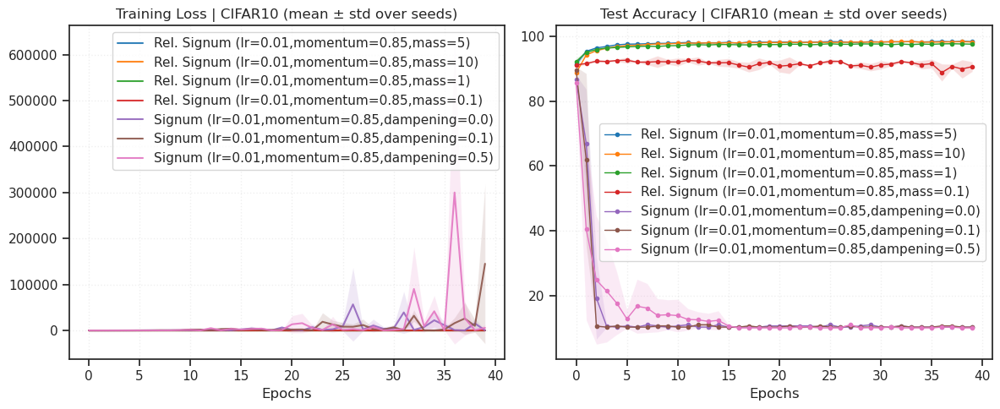
CIFAR10#
batch_size=256
cfg = TrainConfig(
dataset='CIFAR10',
# dataset='ImageNet32',
batch_size=256,
epochs=30,
device=device,
data_on_device=True,
verbose=True,
amp=False,
)
Signum#
opt_kws = dict(lr=1e-3, momentum=0.8, weight_decay=0.0)
base_str = f"lr={opt_kws['lr']},momentum={opt_kws['momentum']}"
experiments = [
Experiment(
name=f'Rel. Signum ({base_str},mass=50)',
opt_fn=make_opt(RelativisticSignum, mass=50, **opt_kws)),
Experiment(
name=f'Rel. Signum ({base_str},mass=10)',
opt_fn=make_opt(RelativisticSignum, mass=10, **opt_kws)),
Experiment(
name=f'Rel. Signum ({base_str},mass=5)',
opt_fn=make_opt(RelativisticSignum, mass=5, **opt_kws)),
Experiment(
name=f'Rel. Signum ({base_str},mass=1)',
opt_fn=make_opt(RelativisticSignum, mass=1, **opt_kws)),
Experiment(
name=f'Signum ({base_str},dampening=0.0)',
opt_fn=make_opt(SignSGD, dampening=0.0, **opt_kws)),
Experiment(
name=f'Signum ({base_str},dampening=0.1)',
opt_fn=make_opt(SignSGD, dampening=0.1, **opt_kws)),
Experiment(
name=f'Signum ({base_str},dampening=0.5)',
opt_fn=make_opt(SignSGD, dampening=0.5, **opt_kws)),
]
print(len(experiments))
7
print(experiments)
[ Experiment( name='Rel. Signum (lr=0.001,momentum=0.8,mass=50)', opt_fn=<function make_opt.<locals>._fn at 0x78461941ce00> ), Experiment( name='Rel. Signum (lr=0.001,momentum=0.8,mass=10)', opt_fn=<function make_opt.<locals>._fn at 0x78461941d080> ), Experiment( name='Rel. Signum (lr=0.001,momentum=0.8,mass=5)', opt_fn=<function make_opt.<locals>._fn at 0x78461941cae0> ), Experiment( name='Rel. Signum (lr=0.001,momentum=0.8,mass=1)', opt_fn=<function make_opt.<locals>._fn at 0x78461941ccc0> ), Experiment( name='Signum (lr=0.001,momentum=0.8,dampening=0.0)', opt_fn=<function make_opt.<locals>._fn at 0x78461941e3e0> ), Experiment( name='Signum (lr=0.001,momentum=0.8,dampening=0.1)', opt_fn=<function make_opt.<locals>._fn at 0x7846176cdb20> ), Experiment( name='Signum (lr=0.001,momentum=0.8,dampening=0.5)', opt_fn=<function make_opt.<locals>._fn at 0x7846176cdbc0> ) ]
%%time
results = run_experiments(
experiments,
cfg=cfg,
model_class=MLP,
model_kws={'in_shape': (3, 32, 32)},
# model_class=ConvNet,
# model_kws={'num_classes': 1000},
seeds=[0],
)
--- Training (CIFAR10) --- Model: MLP({'in_shape': (3, 32, 32)}) | seed=0 Optimizer: RelativisticSignum
RelativisticSignum ( Parameter Group 0 lr: 0.001 mass: 50 momentum: 0.8 weight_decay: 0.0 )
Epoch 1/30: Train Loss 2.0514 | Test Acc 34.69%
Epoch 2/30: Train Loss 1.7451 | Test Acc 41.90%
Epoch 3/30: Train Loss 1.6222 | Test Acc 45.83%
Epoch 4/30: Train Loss 1.5335 | Test Acc 48.17%
Epoch 5/30: Train Loss 1.4638 | Test Acc 50.21%
Epoch 6/30: Train Loss 1.4056 | Test Acc 51.33%
Epoch 7/30: Train Loss 1.3582 | Test Acc 52.94%
Epoch 8/30: Train Loss 1.3214 | Test Acc 53.93%
Epoch 9/30: Train Loss 1.2847 | Test Acc 54.78%
Epoch 10/30: Train Loss 1.2548 | Test Acc 55.51%
Epoch 11/30: Train Loss 1.2268 | Test Acc 55.65%
Epoch 12/30: Train Loss 1.2029 | Test Acc 56.44%
Epoch 13/30: Train Loss 1.1784 | Test Acc 56.78%
Epoch 14/30: Train Loss 1.1543 | Test Acc 57.23%
Epoch 15/30: Train Loss 1.1325 | Test Acc 57.55%
Epoch 16/30: Train Loss 1.1126 | Test Acc 57.90%
Epoch 17/30: Train Loss 1.0932 | Test Acc 58.26%
Epoch 18/30: Train Loss 1.0756 | Test Acc 58.52%
Epoch 19/30: Train Loss 1.0548 | Test Acc 58.48%
Epoch 20/30: Train Loss 1.0376 | Test Acc 58.95%
Epoch 21/30: Train Loss 1.0204 | Test Acc 59.23%
Epoch 22/30: Train Loss 1.0030 | Test Acc 59.35%
Epoch 23/30: Train Loss 0.9871 | Test Acc 59.62%
Epoch 24/30: Train Loss 0.9719 | Test Acc 59.55%
Epoch 25/30: Train Loss 0.9578 | Test Acc 59.82%
Epoch 26/30: Train Loss 0.9407 | Test Acc 59.50%
Epoch 27/30: Train Loss 0.9266 | Test Acc 60.15%
Epoch 28/30: Train Loss 0.9119 | Test Acc 60.07%
Epoch 29/30: Train Loss 0.8972 | Test Acc 60.55%
Epoch 30/30: Train Loss 0.8824 | Test Acc 60.40%
Finished in 37.4s
--- Training (CIFAR10) --- Model: MLP({'in_shape': (3, 32, 32)}) | seed=0 Optimizer: RelativisticSignum
RelativisticSignum ( Parameter Group 0 lr: 0.001 mass: 10 momentum: 0.8 weight_decay: 0.0 )
Epoch 1/30: Train Loss 1.7665 | Test Acc 47.07%
Epoch 2/30: Train Loss 1.4588 | Test Acc 52.49%
Epoch 3/30: Train Loss 1.3352 | Test Acc 54.48%
Epoch 4/30: Train Loss 1.2567 | Test Acc 56.31%
Epoch 5/30: Train Loss 1.1957 | Test Acc 57.02%
Epoch 6/30: Train Loss 1.1433 | Test Acc 57.77%
Epoch 7/30: Train Loss 1.0964 | Test Acc 58.34%
Epoch 8/30: Train Loss 1.0602 | Test Acc 58.48%
Epoch 9/30: Train Loss 1.0182 | Test Acc 58.73%
Epoch 10/30: Train Loss 0.9885 | Test Acc 59.16%
Epoch 11/30: Train Loss 0.9576 | Test Acc 58.72%
Epoch 12/30: Train Loss 0.9288 | Test Acc 59.11%
Epoch 13/30: Train Loss 0.9012 | Test Acc 59.14%
Epoch 14/30: Train Loss 0.8782 | Test Acc 59.21%
Epoch 15/30: Train Loss 0.8554 | Test Acc 59.27%
Epoch 16/30: Train Loss 0.8343 | Test Acc 59.65%
Epoch 17/30: Train Loss 0.8131 | Test Acc 59.05%
Epoch 18/30: Train Loss 0.7955 | Test Acc 58.93%
Epoch 19/30: Train Loss 0.7806 | Test Acc 59.12%
Epoch 20/30: Train Loss 0.7632 | Test Acc 59.27%
Epoch 21/30: Train Loss 0.7425 | Test Acc 59.28%
Epoch 22/30: Train Loss 0.7347 | Test Acc 58.68%
Epoch 23/30: Train Loss 0.7180 | Test Acc 58.77%
Epoch 24/30: Train Loss 0.7075 | Test Acc 58.81%
Epoch 25/30: Train Loss 0.6955 | Test Acc 59.15%
Epoch 26/30: Train Loss 0.6812 | Test Acc 59.02%
Epoch 27/30: Train Loss 0.6765 | Test Acc 59.00%
Epoch 28/30: Train Loss 0.6596 | Test Acc 58.83%
Epoch 29/30: Train Loss 0.6504 | Test Acc 58.97%
Epoch 30/30: Train Loss 0.6422 | Test Acc 59.68%
Finished in 29.5s
--- Training (CIFAR10) --- Model: MLP({'in_shape': (3, 32, 32)}) | seed=0 Optimizer: RelativisticSignum
RelativisticSignum ( Parameter Group 0 lr: 0.001 mass: 5 momentum: 0.8 weight_decay: 0.0 )
Epoch 1/30: Train Loss 1.6849 | Test Acc 49.51%
Epoch 2/30: Train Loss 1.4033 | Test Acc 54.25%
Epoch 3/30: Train Loss 1.2925 | Test Acc 55.14%
Epoch 4/30: Train Loss 1.2244 | Test Acc 56.36%
Epoch 5/30: Train Loss 1.1683 | Test Acc 56.62%
Epoch 6/30: Train Loss 1.1206 | Test Acc 57.27%
Epoch 7/30: Train Loss 1.0801 | Test Acc 57.09%
Epoch 8/30: Train Loss 1.0522 | Test Acc 57.75%
Epoch 9/30: Train Loss 1.0171 | Test Acc 57.67%
Epoch 10/30: Train Loss 0.9959 | Test Acc 57.94%
Epoch 11/30: Train Loss 0.9728 | Test Acc 58.35%
Epoch 12/30: Train Loss 0.9506 | Test Acc 57.98%
Epoch 13/30: Train Loss 0.9263 | Test Acc 58.13%
Epoch 14/30: Train Loss 0.9084 | Test Acc 58.62%
Epoch 15/30: Train Loss 0.8904 | Test Acc 58.00%
Epoch 16/30: Train Loss 0.8776 | Test Acc 58.39%
Epoch 17/30: Train Loss 0.8646 | Test Acc 57.87%
Epoch 18/30: Train Loss 0.8432 | Test Acc 57.72%
Epoch 19/30: Train Loss 0.8262 | Test Acc 57.77%
Epoch 20/30: Train Loss 0.8199 | Test Acc 57.19%
Epoch 21/30: Train Loss 0.8094 | Test Acc 58.05%
Epoch 22/30: Train Loss 0.7948 | Test Acc 58.13%
Epoch 23/30: Train Loss 0.7817 | Test Acc 57.85%
Epoch 24/30: Train Loss 0.7710 | Test Acc 57.86%
Epoch 25/30: Train Loss 0.7575 | Test Acc 58.09%
Epoch 26/30: Train Loss 0.7472 | Test Acc 57.59%
Epoch 27/30: Train Loss 0.7425 | Test Acc 58.65%
Epoch 28/30: Train Loss 0.7278 | Test Acc 57.90%
Epoch 29/30: Train Loss 0.7189 | Test Acc 58.25%
Epoch 30/30: Train Loss 0.7099 | Test Acc 57.70%
Finished in 29.2s
--- Training (CIFAR10) --- Model: MLP({'in_shape': (3, 32, 32)}) | seed=0 Optimizer: RelativisticSignum
RelativisticSignum ( Parameter Group 0 lr: 0.001 mass: 1 momentum: 0.8 weight_decay: 0.0 )
Epoch 1/30: Train Loss 1.6236 | Test Acc 50.50%
Epoch 2/30: Train Loss 1.4269 | Test Acc 52.34%
Epoch 3/30: Train Loss 1.3557 | Test Acc 53.54%
Epoch 4/30: Train Loss 1.3060 | Test Acc 53.85%
Epoch 5/30: Train Loss 1.2703 | Test Acc 54.19%
Epoch 6/30: Train Loss 1.2359 | Test Acc 54.62%
Epoch 7/30: Train Loss 1.2057 | Test Acc 55.23%
Epoch 8/30: Train Loss 1.1870 | Test Acc 55.04%
Epoch 9/30: Train Loss 1.1634 | Test Acc 55.52%
Epoch 10/30: Train Loss 1.1422 | Test Acc 54.98%
Epoch 11/30: Train Loss 1.1222 | Test Acc 55.50%
Epoch 12/30: Train Loss 1.1050 | Test Acc 55.88%
Epoch 13/30: Train Loss 1.0887 | Test Acc 56.19%
Epoch 14/30: Train Loss 1.0802 | Test Acc 56.14%
Epoch 15/30: Train Loss 1.0613 | Test Acc 55.82%
Epoch 16/30: Train Loss 1.0403 | Test Acc 56.67%
Epoch 17/30: Train Loss 1.0329 | Test Acc 55.92%
Epoch 18/30: Train Loss 1.0230 | Test Acc 56.17%
Epoch 19/30: Train Loss 1.0088 | Test Acc 57.17%
Epoch 20/30: Train Loss 0.9988 | Test Acc 56.79%
Epoch 21/30: Train Loss 0.9969 | Test Acc 56.40%
Epoch 22/30: Train Loss 0.9830 | Test Acc 55.77%
Epoch 23/30: Train Loss 0.9707 | Test Acc 56.30%
Epoch 24/30: Train Loss 0.9675 | Test Acc 56.71%
Epoch 25/30: Train Loss 0.9556 | Test Acc 56.40%
Epoch 26/30: Train Loss 0.9465 | Test Acc 56.74%
Epoch 27/30: Train Loss 0.9415 | Test Acc 57.17%
Epoch 28/30: Train Loss 0.9275 | Test Acc 55.84%
Epoch 29/30: Train Loss 0.9272 | Test Acc 57.20%
Epoch 30/30: Train Loss 0.9166 | Test Acc 56.04%
Finished in 39.6s
--- Training (CIFAR10) --- Model: MLP({'in_shape': (3, 32, 32)}) | seed=0 Optimizer: SignSGD
SignSGD ( Parameter Group 0 dampening: 0.0 lr: 0.001 momentum: 0.8 weight_decay: 0.0 )
Epoch 1/30: Train Loss 1.6584 | Test Acc 47.38%
Epoch 2/30: Train Loss 1.5253 | Test Acc 50.23%
Epoch 3/30: Train Loss 1.4691 | Test Acc 50.78%
Epoch 4/30: Train Loss 1.4328 | Test Acc 51.47%
Epoch 5/30: Train Loss 1.4054 | Test Acc 52.28%
Epoch 6/30: Train Loss 1.3830 | Test Acc 52.22%
Epoch 7/30: Train Loss 1.3635 | Test Acc 53.15%
Epoch 8/30: Train Loss 1.3487 | Test Acc 54.01%
Epoch 9/30: Train Loss 1.3365 | Test Acc 52.77%
Epoch 10/30: Train Loss 1.3226 | Test Acc 53.90%
Epoch 11/30: Train Loss 1.3172 | Test Acc 53.73%
Epoch 12/30: Train Loss 1.3122 | Test Acc 54.09%
Epoch 13/30: Train Loss 1.3049 | Test Acc 53.59%
Epoch 14/30: Train Loss 1.3061 | Test Acc 53.59%
Epoch 15/30: Train Loss 1.3002 | Test Acc 53.55%
Epoch 16/30: Train Loss 1.3025 | Test Acc 54.38%
Epoch 17/30: Train Loss 1.2953 | Test Acc 54.46%
Epoch 18/30: Train Loss 1.2973 | Test Acc 54.87%
Epoch 19/30: Train Loss 1.2866 | Test Acc 54.28%
Epoch 20/30: Train Loss 1.3016 | Test Acc 54.87%
Epoch 21/30: Train Loss 1.2999 | Test Acc 53.85%
Epoch 22/30: Train Loss 1.3131 | Test Acc 53.91%
Epoch 23/30: Train Loss 1.3231 | Test Acc 53.99%
Epoch 24/30: Train Loss 1.3144 | Test Acc 52.90%
Epoch 25/30: Train Loss 1.3370 | Test Acc 53.72%
Epoch 26/30: Train Loss 1.3127 | Test Acc 54.37%
Epoch 27/30: Train Loss 1.3188 | Test Acc 55.21%
Epoch 28/30: Train Loss 1.3224 | Test Acc 53.50%
Epoch 29/30: Train Loss 1.3443 | Test Acc 54.05%
Epoch 30/30: Train Loss 1.3531 | Test Acc 54.46%
Finished in 61.2s
--- Training (CIFAR10) --- Model: MLP({'in_shape': (3, 32, 32)}) | seed=0 Optimizer: SignSGD
SignSGD ( Parameter Group 0 dampening: 0.1 lr: 0.001 momentum: 0.8 weight_decay: 0.0 )
Epoch 1/30: Train Loss 1.6594 | Test Acc 47.08%
Epoch 2/30: Train Loss 1.5287 | Test Acc 50.69%
Epoch 3/30: Train Loss 1.4736 | Test Acc 50.87%
Epoch 4/30: Train Loss 1.4384 | Test Acc 51.57%
Epoch 5/30: Train Loss 1.4111 | Test Acc 52.46%
Epoch 6/30: Train Loss 1.3877 | Test Acc 52.74%
Epoch 7/30: Train Loss 1.3684 | Test Acc 53.23%
Epoch 8/30: Train Loss 1.3499 | Test Acc 52.87%
Epoch 9/30: Train Loss 1.3432 | Test Acc 53.49%
Epoch 10/30: Train Loss 1.3277 | Test Acc 54.08%
Epoch 11/30: Train Loss 1.3174 | Test Acc 53.42%
Epoch 12/30: Train Loss 1.3109 | Test Acc 54.18%
Epoch 13/30: Train Loss 1.3024 | Test Acc 53.87%
Epoch 14/30: Train Loss 1.2974 | Test Acc 53.73%
Epoch 15/30: Train Loss 1.2879 | Test Acc 54.04%
Epoch 16/30: Train Loss 1.2780 | Test Acc 54.25%
Epoch 17/30: Train Loss 1.2805 | Test Acc 54.40%
Epoch 18/30: Train Loss 1.2828 | Test Acc 54.60%
Epoch 19/30: Train Loss 1.2786 | Test Acc 54.73%
Epoch 20/30: Train Loss 1.2708 | Test Acc 54.54%
Epoch 21/30: Train Loss 1.2761 | Test Acc 54.25%
Epoch 22/30: Train Loss 1.2801 | Test Acc 54.36%
Epoch 23/30: Train Loss 1.2779 | Test Acc 53.96%
Epoch 24/30: Train Loss 1.2741 | Test Acc 53.84%
Epoch 25/30: Train Loss 1.2904 | Test Acc 53.77%
Epoch 26/30: Train Loss 1.2844 | Test Acc 54.29%
Epoch 27/30: Train Loss 1.2953 | Test Acc 53.94%
Epoch 28/30: Train Loss 1.3102 | Test Acc 54.29%
Epoch 29/30: Train Loss 1.3226 | Test Acc 53.84%
Epoch 30/30: Train Loss 1.3272 | Test Acc 53.92%
Finished in 31.0s
--- Training (CIFAR10) --- Model: MLP({'in_shape': (3, 32, 32)}) | seed=0 Optimizer: SignSGD
SignSGD ( Parameter Group 0 dampening: 0.5 lr: 0.001 momentum: 0.8 weight_decay: 0.0 )
Epoch 1/30: Train Loss 1.6597 | Test Acc 48.14%
Epoch 2/30: Train Loss 1.5246 | Test Acc 49.53%
Epoch 3/30: Train Loss 1.4726 | Test Acc 50.91%
Epoch 4/30: Train Loss 1.4349 | Test Acc 51.74%
Epoch 5/30: Train Loss 1.4059 | Test Acc 52.31%
Epoch 6/30: Train Loss 1.3798 | Test Acc 52.87%
Epoch 7/30: Train Loss 1.3599 | Test Acc 53.66%
Epoch 8/30: Train Loss 1.3470 | Test Acc 53.79%
Epoch 9/30: Train Loss 1.3367 | Test Acc 52.64%
Epoch 10/30: Train Loss 1.3232 | Test Acc 54.39%
Epoch 11/30: Train Loss 1.3196 | Test Acc 53.82%
Epoch 12/30: Train Loss 1.3069 | Test Acc 53.99%
Epoch 13/30: Train Loss 1.3017 | Test Acc 53.82%
Epoch 14/30: Train Loss 1.2970 | Test Acc 53.28%
Epoch 15/30: Train Loss 1.2880 | Test Acc 53.54%
Epoch 16/30: Train Loss 1.2846 | Test Acc 53.44%
Epoch 17/30: Train Loss 1.2852 | Test Acc 54.50%
Epoch 18/30: Train Loss 1.2753 | Test Acc 54.52%
Epoch 19/30: Train Loss 1.2720 | Test Acc 53.98%
Epoch 20/30: Train Loss 1.2731 | Test Acc 54.70%
Epoch 21/30: Train Loss 1.2790 | Test Acc 54.10%
Epoch 22/30: Train Loss 1.2865 | Test Acc 53.64%
Epoch 23/30: Train Loss 1.2922 | Test Acc 54.60%
Epoch 24/30: Train Loss 1.2900 | Test Acc 53.98%
Epoch 25/30: Train Loss 1.3104 | Test Acc 53.41%
Epoch 26/30: Train Loss 1.2923 | Test Acc 53.93%
Epoch 27/30: Train Loss 1.3021 | Test Acc 54.54%
Epoch 28/30: Train Loss 1.3283 | Test Acc 53.72%
Epoch 29/30: Train Loss 1.3267 | Test Acc 54.16%
Epoch 30/30: Train Loss 1.3229 | Test Acc 54.19%
Finished in 31.2s
CPU times: user 4min 20s, sys: 2.48 s, total: 4min 22s
Wall time: 4min 20s
avg_scores = {k: np.round(d['test_acc'].squeeze()[-5:].mean(), decimals=2) for k, d in results.items()}
avg_scores = dict(sorted(avg_scores.items(), key=lambda t: t[1]))
avg_scores
{'Signum (lr=0.001,momentum=0.8,dampening=0.1)': 54.06,
'Signum (lr=0.001,momentum=0.8,dampening=0.5)': 54.11,
'Signum (lr=0.001,momentum=0.8,dampening=0.0)': 54.32,
'Rel. Signum (lr=0.001,momentum=0.8,mass=1)': 56.6,
'Rel. Signum (lr=0.001,momentum=0.8,mass=5)': 58.02,
'Rel. Signum (lr=0.001,momentum=0.8,mass=10)': 59.1,
'Rel. Signum (lr=0.001,momentum=0.8,mass=50)': 60.13}
## Was: w/ ConvNet
{'Rel. Signum (lr=0.001,momentum=0.8,mass=0.1)': 84.33,
'Rel. Signum (lr=0.001,momentum=0.8,mass=100)': 84.69,
'Signum (lr=0.001,momentum=0.8,dampening=0.0)': 85.61,
'Signum (lr=0.001,momentum=0.8,dampening=0.1)': 85.98,
'Signum (lr=0.001,momentum=0.8,dampening=0.5)': 86.1,
'Rel. Signum (lr=0.001,momentum=0.8,mass=10)': 88.56}
plot_results(results, title="CIFAR10 (mean ± std over seeds)")
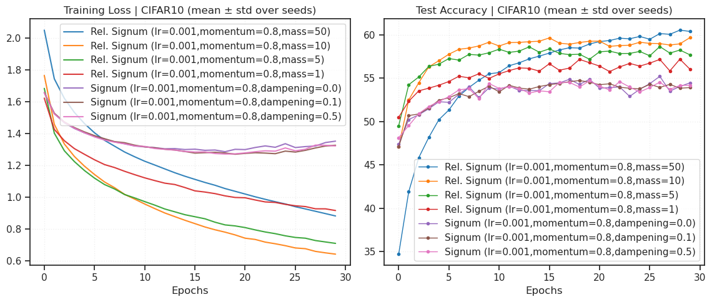
ImageNet32#
batch_size=256
cfg = TrainConfig(
# dataset='CIFAR10',
dataset='ImageNet32',
batch_size=256,
epochs=50,
device=device,
data_on_device=True,
verbose=True,
amp=False,
)
Intermediate coupling#
opt_kws = dict(lr=1e-3, betas=(0.8, 0.99), weight_decay=0.0)
lr_str = f"lr={opt_kws['lr']}"
experiments = [
Experiment(
name=f'Rel. Lion ({lr_str},mass=100)',
opt_fn=make_opt(RelativisticLion, mass=100, **opt_kws)),
# Experiment(
# name=f'Rel. Lion ({lr_str},mass=10)',
# opt_fn=make_opt(RelativisticLion, mass=10, **opt_kws)),
# Experiment(
# name=f'Rel. Lion ({lr_str},mass=1)',
# opt_fn=make_opt(RelativisticLion, mass=1, **opt_kws)),
Experiment(
name=f'Lion ({lr_str})',
opt_fn=make_opt(Lion, **opt_kws)),
Experiment(
name=f'AdamW ({lr_str})',
opt_fn=make_opt(torch.optim.AdamW, **opt_kws)),
]
print(len(experiments))
3
print(experiments)
[ Experiment(name='Rel. Lion (lr=0.001,mass=100)', opt_fn=<function make_opt.<locals>._fn at 0x7d4e48cbc220>), Experiment(name='Lion (lr=0.001)', opt_fn=<function make_opt.<locals>._fn at 0x7d4cf043cf40>), Experiment(name='AdamW (lr=0.001)', opt_fn=<function make_opt.<locals>._fn at 0x7d4cf043cea0>) ]
%%time
results = run_experiments(
experiments,
cfg=cfg,
model_class=ResNet18,
model_kws={'num_classes': 1000},
seeds=[0],
)
--- Training (ImageNet32) --- Model: ResNet18({'num_classes': 1000}) | seed=0 Optimizer: RelativisticLion
RelativisticLion ( Parameter Group 0 betas: (0.8, 0.99) lr: 0.001 mass: 100 weight_decay: 0.0 )
Epoch 1/50: Train Loss 4.4004 | Test Acc 25.56%
Epoch 2/50: Train Loss 3.1144 | Test Acc 33.21%
Epoch 3/50: Train Loss 2.6471 | Test Acc 36.41%
Epoch 4/50: Train Loss 2.3358 | Test Acc 37.23%
Epoch 5/50: Train Loss 2.0814 | Test Acc 37.15%
Epoch 6/50: Train Loss 1.8566 | Test Acc 36.56%
Epoch 8/50: Train Loss 1.4766 | Test Acc 34.81%
Epoch 9/50: Train Loss 1.3167 | Test Acc 34.53%
Epoch 10/50: Train Loss 1.1741 | Test Acc 33.58%
Epoch 11/50: Train Loss 1.0465 | Test Acc 33.50%
Epoch 12/50: Train Loss 0.9332 | Test Acc 33.17%
Epoch 13/50: Train Loss 0.8300 | Test Acc 32.83%
Epoch 14/50: Train Loss 0.7427 | Test Acc 32.70%
Epoch 15/50: Train Loss 0.6631 | Test Acc 32.91%
Epoch 16/50: Train Loss 0.5937 | Test Acc 32.76%
Epoch 17/50: Train Loss 0.5332 | Test Acc 32.90%
Epoch 18/50: Train Loss 0.4782 | Test Acc 32.98%
Epoch 19/50: Train Loss 0.4322 | Test Acc 33.16%
Epoch 20/50: Train Loss 0.3903 | Test Acc 33.22%
Epoch 21/50: Train Loss 0.3553 | Test Acc 33.25%
Epoch 22/50: Train Loss 0.3228 | Test Acc 33.33%
Epoch 23/50: Train Loss 0.2917 | Test Acc 33.32%
Epoch 24/50: Train Loss 0.2687 | Test Acc 33.50%
Epoch 25/50: Train Loss 0.2443 | Test Acc 33.50%
Epoch 26/50: Train Loss 0.2241 | Test Acc 33.76%
Epoch 27/50: Train Loss 0.2066 | Test Acc 33.82%
Epoch 28/50: Train Loss 0.1899 | Test Acc 33.91%
Epoch 29/50: Train Loss 0.1772 | Test Acc 34.04%
Epoch 30/50: Train Loss 0.1645 | Test Acc 34.18%
Epoch 31/50: Train Loss 0.1517 | Test Acc 34.09%
Epoch 32/50: Train Loss 0.1403 | Test Acc 34.07%
Epoch 33/50: Train Loss 0.1306 | Test Acc 34.09%
Epoch 34/50: Train Loss 0.1232 | Test Acc 33.91%
Epoch 35/50: Train Loss 0.1140 | Test Acc 34.33%
Epoch 36/50: Train Loss 0.1082 | Test Acc 34.06%
Epoch 37/50: Train Loss 0.1012 | Test Acc 34.09%
Epoch 38/50: Train Loss 0.0960 | Test Acc 34.29%
Epoch 39/50: Train Loss 0.0901 | Test Acc 34.28%
Epoch 40/50: Train Loss 0.0848 | Test Acc 34.12%
Epoch 41/50: Train Loss 0.0806 | Test Acc 34.30%
Epoch 42/50: Train Loss 0.0771 | Test Acc 34.54%
Epoch 43/50: Train Loss 0.0723 | Test Acc 34.47%
Epoch 44/50: Train Loss 0.0688 | Test Acc 34.74%
Epoch 45/50: Train Loss 0.0658 | Test Acc 34.75%
Epoch 46/50: Train Loss 0.0625 | Test Acc 34.56%
Epoch 47/50: Train Loss 0.0586 | Test Acc 34.64%
Epoch 48/50: Train Loss 0.0575 | Test Acc 34.55%
Epoch 49/50: Train Loss 0.0549 | Test Acc 34.54%
Epoch 50/50: Train Loss 0.0527 | Test Acc 34.53%
Finished in 8085.7s
--- Training (ImageNet32) --- Model: ResNet18({'num_classes': 1000}) | seed=0 Optimizer: Lion
Lion ( Parameter Group 0 betas: (0.8, 0.99) lr: 0.001 weight_decay: 0.0 )
Epoch 1/50: Train Loss 4.8810 | Test Acc 19.87%
Epoch 2/50: Train Loss 3.5002 | Test Acc 28.91%
Epoch 3/50: Train Loss 2.9954 | Test Acc 32.20%
Epoch 4/50: Train Loss 2.7295 | Test Acc 33.71%
Epoch 5/50: Train Loss 2.5747 | Test Acc 34.32%
Epoch 6/50: Train Loss 2.4525 | Test Acc 35.53%
Epoch 7/50: Train Loss 2.5326 | Test Acc 35.38%
Epoch 8/50: Train Loss 2.4540 | Test Acc 34.33%
Epoch 9/50: Train Loss 2.5261 | Test Acc 34.90%
Epoch 10/50: Train Loss 2.4616 | Test Acc 35.24%
Epoch 11/50: Train Loss 2.6788 | Test Acc 34.01%
Epoch 12/50: Train Loss 2.4612 | Test Acc 34.43%
Epoch 13/50: Train Loss 2.3971 | Test Acc 33.27%
Epoch 14/50: Train Loss 2.3501 | Test Acc 35.82%
Epoch 15/50: Train Loss 2.2950 | Test Acc 36.06%
Epoch 16/50: Train Loss 2.2694 | Test Acc 36.28%
Epoch 17/50: Train Loss 2.1331 | Test Acc 36.11%
Epoch 18/50: Train Loss 2.0416 | Test Acc 36.45%
Epoch 19/50: Train Loss 2.0646 | Test Acc 36.35%
Epoch 20/50: Train Loss 2.3464 | Test Acc 32.00%
Epoch 21/50: Train Loss 2.2234 | Test Acc 35.89%
Epoch 22/50: Train Loss 2.2148 | Test Acc 36.17%
Epoch 23/50: Train Loss 2.1129 | Test Acc 32.48%
Epoch 24/50: Train Loss 2.2009 | Test Acc 29.46%
Epoch 25/50: Train Loss 2.0556 | Test Acc 36.19%
Epoch 26/50: Train Loss 3.3621 | Test Acc 35.71%
Epoch 27/50: Train Loss 1.8601 | Test Acc 35.28%
Epoch 28/50: Train Loss 1.9312 | Test Acc 35.65%
Epoch 29/50: Train Loss 2.2076 | Test Acc 34.77%
Epoch 30/50: Train Loss 1.7547 | Test Acc 29.88%
Epoch 31/50: Train Loss 2.5887 | Test Acc 33.59%
Epoch 32/50: Train Loss 2.0203 | Test Acc 33.66%
Epoch 33/50: Train Loss 1.8567 | Test Acc 35.09%
Epoch 34/50: Train Loss 2.0672 | Test Acc 33.08%
Epoch 35/50: Train Loss 1.7076 | Test Acc 34.94%
Epoch 36/50: Train Loss 1.7938 | Test Acc 32.46%
Epoch 37/50: Train Loss 2.2485 | Test Acc 32.03%
Epoch 38/50: Train Loss 1.6287 | Test Acc 33.08%
Epoch 39/50: Train Loss 1.6150 | Test Acc 34.15%
Epoch 40/50: Train Loss 1.8450 | Test Acc 34.35%
Epoch 41/50: Train Loss 1.5700 | Test Acc 33.97%
Epoch 42/50: Train Loss 1.4733 | Test Acc 33.89%
Epoch 43/50: Train Loss 2.2622 | Test Acc 33.63%
Epoch 44/50: Train Loss 1.3268 | Test Acc 32.99%
Epoch 45/50: Train Loss 1.3560 | Test Acc 33.27%
Epoch 46/50: Train Loss 1.4055 | Test Acc 32.97%
Epoch 47/50: Train Loss 1.3705 | Test Acc 32.99%
Epoch 48/50: Train Loss 1.1328 | Test Acc 32.75%
Epoch 49/50: Train Loss 1.5694 | Test Acc 32.39%
Epoch 50/50: Train Loss 1.9354 | Test Acc 32.60%
Finished in 7370.7s
--- Training (ImageNet32) --- Model: ResNet18({'num_classes': 1000}) | seed=0 Optimizer: AdamW
AdamW ( Parameter Group 0 amsgrad: False betas: (0.8, 0.99) capturable: False decoupled_weight_decay: True differentiable: False eps: 1e-08 foreach: None fused: None lr: 0.001 maximize: False weight_decay: 0.0 )
Epoch 1/50: Train Loss 4.5146 | Test Acc 22.70%
Epoch 2/50: Train Loss 3.2144 | Test Acc 31.53%
Epoch 3/50: Train Loss 2.6982 | Test Acc 35.17%
Epoch 4/50: Train Loss 2.3379 | Test Acc 35.65%
Epoch 5/50: Train Loss 2.0291 | Test Acc 35.44%
Epoch 6/50: Train Loss 1.7450 | Test Acc 34.61%
Epoch 7/50: Train Loss 1.4854 | Test Acc 34.11%
Epoch 8/50: Train Loss 1.2556 | Test Acc 33.07%
Epoch 9/50: Train Loss 1.0635 | Test Acc 32.75%
Epoch 10/50: Train Loss 0.9067 | Test Acc 32.21%
Epoch 11/50: Train Loss 0.7804 | Test Acc 31.68%
Epoch 12/50: Train Loss 0.6785 | Test Acc 31.43%
Epoch 13/50: Train Loss 0.5985 | Test Acc 31.60%
Epoch 14/50: Train Loss 0.5328 | Test Acc 31.48%
Epoch 15/50: Train Loss 0.4795 | Test Acc 31.40%
Epoch 16/50: Train Loss 0.4352 | Test Acc 31.39%
Epoch 17/50: Train Loss 0.4004 | Test Acc 31.35%
Epoch 18/50: Train Loss 0.3710 | Test Acc 31.62%
Epoch 19/50: Train Loss 0.3450 | Test Acc 31.42%
Epoch 20/50: Train Loss 0.3223 | Test Acc 31.67%
Epoch 21/50: Train Loss 0.3035 | Test Acc 31.59%
Epoch 22/50: Train Loss 0.2854 | Test Acc 31.83%
Epoch 23/50: Train Loss 0.2695 | Test Acc 31.65%
Epoch 24/50: Train Loss 0.2555 | Test Acc 31.69%
Epoch 25/50: Train Loss 0.2436 | Test Acc 31.61%
Epoch 26/50: Train Loss 0.2340 | Test Acc 31.82%
Epoch 27/50: Train Loss 0.2233 | Test Acc 31.95%
Epoch 28/50: Train Loss 0.2141 | Test Acc 31.78%
Epoch 29/50: Train Loss 0.2058 | Test Acc 31.89%
Epoch 30/50: Train Loss 0.1972 | Test Acc 31.95%
Epoch 31/50: Train Loss 0.1898 | Test Acc 32.21%
Epoch 32/50: Train Loss 0.1841 | Test Acc 32.02%
Epoch 33/50: Train Loss 0.1769 | Test Acc 32.04%
Epoch 34/50: Train Loss 0.1706 | Test Acc 32.31%
Epoch 35/50: Train Loss 0.1659 | Test Acc 32.21%
Epoch 36/50: Train Loss 0.1608 | Test Acc 32.14%
Epoch 37/50: Train Loss 0.1560 | Test Acc 32.16%
Epoch 38/50: Train Loss 0.1511 | Test Acc 32.35%
Epoch 39/50: Train Loss 0.1474 | Test Acc 32.46%
Epoch 40/50: Train Loss 0.1431 | Test Acc 32.39%
Epoch 41/50: Train Loss 0.1399 | Test Acc 32.27%
Epoch 42/50: Train Loss 0.1361 | Test Acc 32.32%
Epoch 43/50: Train Loss 0.1318 | Test Acc 32.38%
Epoch 44/50: Train Loss 0.1289 | Test Acc 32.33%
Epoch 45/50: Train Loss 0.1266 | Test Acc 32.52%
Epoch 46/50: Train Loss 0.1234 | Test Acc 32.56%
Epoch 47/50: Train Loss 0.1205 | Test Acc 32.74%
Epoch 48/50: Train Loss 0.1169 | Test Acc 32.40%
Epoch 49/50: Train Loss 0.1152 | Test Acc 32.67%
Epoch 50/50: Train Loss 0.1124 | Test Acc 32.46%
Finished in 7383.7s
CPU times: user 6h 18min 43s, sys: 1min 15s, total: 6h 19min 59s
Wall time: 6h 21min
avg_scores = {k: np.round(d['test_acc'].squeeze()[-5:].mean(), decimals=2) for k, d in results.items()}
avg_scores = dict(sorted(avg_scores.items(), key=lambda t: t[1]))
avg_scores
{'AdamW (lr=0.001)': 32.57,
'Lion (lr=0.001)': 32.74,
'Rel. Lion (lr=0.001,mass=100)': 34.57}
plot_results(results, title="CIFAR10 (mean ± std over seeds)")
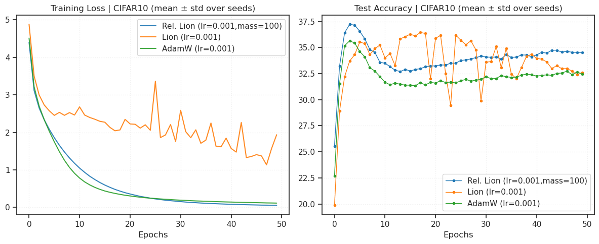
Intermediate coupling, low momenta#
opt_kws = dict(lr=1e-3, betas=(0.8, 0.99), weight_decay=0.0)
experiments = [
Experiment(
name='Relativistic Adam (C=1.0,inert_src=True)',
opt_fn=make_opt(RelativisticAdam,
coupling=1.0,
inertial_sourcing=True,
**opt_kws)),
Experiment(
name='Relativistic Adam (C=1.0,inert_src=False)',
opt_fn=make_opt(RelativisticAdam,
coupling=1.0,
inertial_sourcing=False,
**opt_kws)),
Experiment(
name='AdamW',
opt_fn=make_opt(torch.optim.AdamW, **opt_kws)),
]
print(len(experiments))
3
print(experiments)
[ Experiment( name='Relativistic Adam (C=1.0,inert_src=True)', opt_fn=<function make_opt.<locals>._fn at 0x7fbb587a85e0> ), Experiment( name='Relativistic Adam (C=1.0,inert_src=False)', opt_fn=<function make_opt.<locals>._fn at 0x7fbb586a07c0> ), Experiment(name='AdamW', opt_fn=<function make_opt.<locals>._fn at 0x7fbb586a0400>) ]
%%time
results = run_experiments(experiments, cfg=cfg, seeds=[0])
--- Training (CIFAR10) --- Model: ConvNet | seed=0 Optimizer: RelativisticAdam
RelativisticAdam ( Parameter Group 0 betas: (0.8, 0.99) coupling: 1.0 eps: 1e-08 inertial_sourcing: True lr: 0.001 weight_decay: 0.0 )
Epoch 1/300: Train Loss 1.4710 | Test Acc 64.57%
Epoch 5/300: Train Loss 0.3857 | Test Acc 80.61%
Epoch 10/300: Train Loss 0.1525 | Test Acc 84.56%
Epoch 15/300: Train Loss 0.0939 | Test Acc 86.30%
Epoch 20/300: Train Loss 0.0752 | Test Acc 86.10%
Epoch 25/300: Train Loss 0.0681 | Test Acc 86.19%
Epoch 30/300: Train Loss 0.0576 | Test Acc 86.30%
Epoch 35/300: Train Loss 0.0566 | Test Acc 86.44%
Epoch 40/300: Train Loss 0.0549 | Test Acc 85.90%
Epoch 45/300: Train Loss 0.0534 | Test Acc 85.89%
Epoch 50/300: Train Loss 0.0503 | Test Acc 86.46%
Epoch 55/300: Train Loss 0.0458 | Test Acc 85.82%
Epoch 60/300: Train Loss 0.0458 | Test Acc 85.90%
Epoch 65/300: Train Loss 0.0467 | Test Acc 86.05%
Epoch 70/300: Train Loss 0.0414 | Test Acc 86.03%
Epoch 75/300: Train Loss 0.0423 | Test Acc 85.66%
Epoch 80/300: Train Loss 0.0446 | Test Acc 85.73%
Epoch 85/300: Train Loss 0.0401 | Test Acc 86.08%
Epoch 90/300: Train Loss 0.0400 | Test Acc 86.35%
Epoch 95/300: Train Loss 0.0427 | Test Acc 85.13%
Epoch 100/300: Train Loss 0.0421 | Test Acc 85.97%
Epoch 105/300: Train Loss 0.0415 | Test Acc 85.47%
Epoch 110/300: Train Loss 0.0378 | Test Acc 85.08%
Epoch 115/300: Train Loss 0.0393 | Test Acc 85.19%
Epoch 120/300: Train Loss 0.0395 | Test Acc 85.46%
Epoch 125/300: Train Loss 0.0431 | Test Acc 86.03%
Epoch 130/300: Train Loss 0.0422 | Test Acc 84.62%
Epoch 135/300: Train Loss 0.0466 | Test Acc 85.02%
Epoch 140/300: Train Loss 0.0394 | Test Acc 85.38%
Epoch 145/300: Train Loss 0.0489 | Test Acc 84.80%
Epoch 150/300: Train Loss 0.0457 | Test Acc 85.47%
Epoch 155/300: Train Loss 0.0508 | Test Acc 84.29%
Epoch 160/300: Train Loss 0.0448 | Test Acc 84.73%
Epoch 165/300: Train Loss 0.0463 | Test Acc 85.09%
Epoch 170/300: Train Loss 0.0503 | Test Acc 84.89%
Epoch 175/300: Train Loss 0.0532 | Test Acc 83.44%
Epoch 180/300: Train Loss 0.0481 | Test Acc 83.59%
Epoch 185/300: Train Loss 0.0452 | Test Acc 83.35%
Epoch 190/300: Train Loss 0.0482 | Test Acc 82.48%
Epoch 195/300: Train Loss 0.0459 | Test Acc 83.15%
Epoch 200/300: Train Loss 0.0521 | Test Acc 83.85%
Epoch 205/300: Train Loss 0.0534 | Test Acc 84.01%
Epoch 210/300: Train Loss 0.0541 | Test Acc 81.65%
Epoch 215/300: Train Loss 0.0556 | Test Acc 84.59%
Epoch 220/300: Train Loss 0.0532 | Test Acc 84.04%
Epoch 225/300: Train Loss 0.0539 | Test Acc 83.53%
Epoch 230/300: Train Loss 0.0530 | Test Acc 82.98%
Epoch 235/300: Train Loss 0.0588 | Test Acc 81.73%
Epoch 240/300: Train Loss 0.0593 | Test Acc 81.83%
Epoch 245/300: Train Loss 0.0562 | Test Acc 83.72%
Epoch 250/300: Train Loss 0.0503 | Test Acc 82.73%
Epoch 255/300: Train Loss 0.0581 | Test Acc 84.03%
Epoch 260/300: Train Loss 0.0587 | Test Acc 83.67%
Epoch 265/300: Train Loss 0.0522 | Test Acc 83.05%
Epoch 270/300: Train Loss 0.0430 | Test Acc 83.26%
Epoch 275/300: Train Loss 0.0529 | Test Acc 83.02%
Epoch 280/300: Train Loss 0.0476 | Test Acc 83.05%
Epoch 285/300: Train Loss 0.0492 | Test Acc 81.76%
Epoch 290/300: Train Loss 0.0425 | Test Acc 83.44%
Epoch 295/300: Train Loss 0.0413 | Test Acc 82.94%
Epoch 300/300: Train Loss 0.0413 | Test Acc 83.58%
Finished in 960.5s
--- Training (CIFAR10) --- Model: ConvNet | seed=0 Optimizer: RelativisticAdam
RelativisticAdam ( Parameter Group 0 betas: (0.8, 0.99) coupling: 1.0 eps: 1e-08 inertial_sourcing: False lr: 0.001 weight_decay: 0.0 )
Epoch 1/300: Train Loss 1.1244 | Test Acc 69.52%
Epoch 5/300: Train Loss 0.3590 | Test Acc 84.27%
Epoch 10/300: Train Loss 0.1482 | Test Acc 85.81%
Epoch 15/300: Train Loss 0.0790 | Test Acc 86.31%
Epoch 20/300: Train Loss 0.0558 | Test Acc 87.01%
Epoch 25/300: Train Loss 0.0455 | Test Acc 87.54%
Epoch 30/300: Train Loss 0.0375 | Test Acc 87.85%
Epoch 35/300: Train Loss 0.0338 | Test Acc 88.06%
Epoch 40/300: Train Loss 0.0287 | Test Acc 87.70%
Epoch 45/300: Train Loss 0.0284 | Test Acc 87.61%
Epoch 50/300: Train Loss 0.0261 | Test Acc 87.95%
Epoch 55/300: Train Loss 0.0262 | Test Acc 87.90%
Epoch 60/300: Train Loss 0.0236 | Test Acc 87.73%
Epoch 65/300: Train Loss 0.0216 | Test Acc 87.84%
Epoch 70/300: Train Loss 0.0214 | Test Acc 87.49%
Epoch 75/300: Train Loss 0.0214 | Test Acc 87.12%
Epoch 80/300: Train Loss 0.0238 | Test Acc 87.76%
Epoch 85/300: Train Loss 0.0196 | Test Acc 88.30%
Epoch 90/300: Train Loss 0.0216 | Test Acc 88.24%
Epoch 95/300: Train Loss 0.0213 | Test Acc 88.19%
Epoch 100/300: Train Loss 0.0222 | Test Acc 88.07%
Epoch 105/300: Train Loss 0.0218 | Test Acc 88.10%
Epoch 110/300: Train Loss 0.0207 | Test Acc 87.99%
Epoch 115/300: Train Loss 0.0203 | Test Acc 88.00%
Epoch 120/300: Train Loss 0.0196 | Test Acc 87.74%
Epoch 125/300: Train Loss 0.0187 | Test Acc 88.36%
Epoch 130/300: Train Loss 0.0211 | Test Acc 88.03%
Epoch 135/300: Train Loss 0.0199 | Test Acc 88.20%
Epoch 140/300: Train Loss 0.0227 | Test Acc 88.42%
Epoch 145/300: Train Loss 0.0202 | Test Acc 88.29%
Epoch 150/300: Train Loss 0.0203 | Test Acc 87.74%
Epoch 155/300: Train Loss 0.0215 | Test Acc 88.41%
Epoch 160/300: Train Loss 0.0203 | Test Acc 87.84%
Epoch 165/300: Train Loss 0.0210 | Test Acc 88.36%
Epoch 170/300: Train Loss 0.0197 | Test Acc 87.89%
Epoch 175/300: Train Loss 0.0200 | Test Acc 87.89%
Epoch 180/300: Train Loss 0.0192 | Test Acc 88.17%
Epoch 185/300: Train Loss 0.0202 | Test Acc 88.60%
Epoch 190/300: Train Loss 0.0183 | Test Acc 87.45%
Epoch 195/300: Train Loss 0.0198 | Test Acc 87.86%
Epoch 200/300: Train Loss 0.0181 | Test Acc 88.01%
Epoch 205/300: Train Loss 0.0208 | Test Acc 88.30%
Epoch 210/300: Train Loss 0.0201 | Test Acc 87.86%
Epoch 215/300: Train Loss 0.0205 | Test Acc 87.74%
Epoch 220/300: Train Loss 0.0191 | Test Acc 88.48%
Epoch 225/300: Train Loss 0.0219 | Test Acc 88.24%
Epoch 230/300: Train Loss 0.0203 | Test Acc 87.92%
Epoch 235/300: Train Loss 0.0199 | Test Acc 87.97%
Epoch 240/300: Train Loss 0.0187 | Test Acc 88.22%
Epoch 245/300: Train Loss 0.0220 | Test Acc 88.20%
Epoch 250/300: Train Loss 0.0215 | Test Acc 87.89%
Epoch 255/300: Train Loss 0.0188 | Test Acc 88.36%
Epoch 260/300: Train Loss 0.0204 | Test Acc 88.76%
Epoch 265/300: Train Loss 0.0191 | Test Acc 88.19%
Epoch 270/300: Train Loss 0.0197 | Test Acc 87.88%
Epoch 275/300: Train Loss 0.0196 | Test Acc 87.66%
Epoch 280/300: Train Loss 0.0232 | Test Acc 87.85%
Epoch 285/300: Train Loss 0.0212 | Test Acc 87.99%
Epoch 290/300: Train Loss 0.0201 | Test Acc 88.04%
Epoch 295/300: Train Loss 0.0218 | Test Acc 88.33%
Epoch 300/300: Train Loss 0.0192 | Test Acc 88.11%
Finished in 953.2s
--- Training (CIFAR10) --- Model: ConvNet | seed=0 Optimizer: AdamW
AdamW ( Parameter Group 0 amsgrad: False betas: (0.8, 0.99) capturable: False decoupled_weight_decay: True differentiable: False eps: 1e-08 foreach: None fused: None lr: 0.001 maximize: False weight_decay: 0.0 )
Epoch 1/300: Train Loss 1.1524 | Test Acc 69.95%
Epoch 5/300: Train Loss 0.3708 | Test Acc 82.61%
Epoch 10/300: Train Loss 0.1478 | Test Acc 85.93%
Epoch 15/300: Train Loss 0.0774 | Test Acc 86.50%
Epoch 20/300: Train Loss 0.0551 | Test Acc 87.42%
Epoch 25/300: Train Loss 0.0428 | Test Acc 87.71%
Epoch 30/300: Train Loss 0.0360 | Test Acc 88.09%
Epoch 35/300: Train Loss 0.0330 | Test Acc 87.73%
Epoch 40/300: Train Loss 0.0291 | Test Acc 87.75%
Epoch 45/300: Train Loss 0.0267 | Test Acc 88.18%
Epoch 50/300: Train Loss 0.0247 | Test Acc 87.66%
Epoch 55/300: Train Loss 0.0231 | Test Acc 88.47%
Epoch 60/300: Train Loss 0.0213 | Test Acc 87.59%
Epoch 65/300: Train Loss 0.0212 | Test Acc 88.54%
Epoch 70/300: Train Loss 0.0190 | Test Acc 87.63%
Epoch 75/300: Train Loss 0.0195 | Test Acc 88.55%
Epoch 80/300: Train Loss 0.0168 | Test Acc 88.34%
Epoch 85/300: Train Loss 0.0179 | Test Acc 88.53%
Epoch 90/300: Train Loss 0.0158 | Test Acc 89.23%
Epoch 95/300: Train Loss 0.0183 | Test Acc 88.85%
Epoch 100/300: Train Loss 0.0172 | Test Acc 88.63%
Epoch 105/300: Train Loss 0.0157 | Test Acc 88.78%
Epoch 110/300: Train Loss 0.0159 | Test Acc 88.87%
Epoch 115/300: Train Loss 0.0184 | Test Acc 88.57%
Epoch 120/300: Train Loss 0.0142 | Test Acc 88.20%
Epoch 125/300: Train Loss 0.0160 | Test Acc 88.94%
Epoch 130/300: Train Loss 0.0144 | Test Acc 87.39%
Epoch 135/300: Train Loss 0.0164 | Test Acc 88.55%
Epoch 140/300: Train Loss 0.0133 | Test Acc 88.65%
Epoch 145/300: Train Loss 0.0146 | Test Acc 88.73%
Epoch 150/300: Train Loss 0.0139 | Test Acc 88.71%
Epoch 155/300: Train Loss 0.0157 | Test Acc 88.54%
Epoch 160/300: Train Loss 0.0137 | Test Acc 88.88%
Epoch 165/300: Train Loss 0.0131 | Test Acc 89.07%
Epoch 170/300: Train Loss 0.0141 | Test Acc 88.56%
Epoch 175/300: Train Loss 0.0121 | Test Acc 88.23%
Epoch 180/300: Train Loss 0.0114 | Test Acc 88.53%
Epoch 185/300: Train Loss 0.0151 | Test Acc 88.42%
Epoch 190/300: Train Loss 0.0149 | Test Acc 88.70%
Epoch 195/300: Train Loss 0.0141 | Test Acc 89.06%
Epoch 200/300: Train Loss 0.0133 | Test Acc 88.72%
Epoch 205/300: Train Loss 0.0132 | Test Acc 88.60%
Epoch 210/300: Train Loss 0.0138 | Test Acc 88.36%
Epoch 215/300: Train Loss 0.0134 | Test Acc 88.88%
Epoch 220/300: Train Loss 0.0119 | Test Acc 88.51%
Epoch 225/300: Train Loss 0.0133 | Test Acc 88.65%
Epoch 230/300: Train Loss 0.0129 | Test Acc 88.87%
Epoch 235/300: Train Loss 0.0120 | Test Acc 89.13%
Epoch 240/300: Train Loss 0.0115 | Test Acc 88.69%
Epoch 245/300: Train Loss 0.0151 | Test Acc 88.55%
Epoch 250/300: Train Loss 0.0132 | Test Acc 88.83%
Epoch 255/300: Train Loss 0.0139 | Test Acc 89.09%
Epoch 260/300: Train Loss 0.0110 | Test Acc 88.80%
Epoch 265/300: Train Loss 0.0137 | Test Acc 89.25%
Epoch 270/300: Train Loss 0.0129 | Test Acc 89.07%
Epoch 275/300: Train Loss 0.0123 | Test Acc 88.87%
Epoch 280/300: Train Loss 0.0122 | Test Acc 88.55%
Epoch 285/300: Train Loss 0.0115 | Test Acc 88.62%
Epoch 290/300: Train Loss 0.0121 | Test Acc 88.92%
Epoch 295/300: Train Loss 0.0117 | Test Acc 88.67%
Epoch 300/300: Train Loss 0.0130 | Test Acc 88.73%
Finished in 921.9s
CPU times: user 47min 11s, sys: 6.04 s, total: 47min 17s
Wall time: 47min 16s
avg_scores = {k: np.round(d['test_acc'].squeeze()[-5:].mean(), decimals=2) for k, d in results.items()}
avg_scores = dict(sorted(avg_scores.items(), key=lambda t: t[1]))
avg_scores
{'Relativistic Adam (C=1.0,inert_src=True)': 83.69,
'Relativistic Adam (C=1.0,inert_src=False)': 88.35,
'AdamW': 88.63}
fig, ax = create_figure(1, 1, (7, 5))
ax.plot(results['AdamW']['test_acc'].squeeze(),
color='k', marker='.', label='AdamW')
ax.plot(results['Relativistic Adam (C=1.0,inert_src=True)']['test_acc'].squeeze(),
color='r', marker='.', label='Relativistic Adam (C=1.0,inert_src=True)')
ax.plot(results['Relativistic Adam (C=1.0,inert_src=False)']['test_acc'].squeeze(),
color='b', marker='.', label='Relativistic Adam (C=1.0,inert_src=False)')
ax.legend(fontsize=15)
ax.grid()
plt.show()

plot_results(results, title="CIFAR10 (mean ± std over seeds)")

avg_scores = {k: np.round(d['test_acc'].squeeze()[-5:].mean(), decimals=2) for k, d in results.items()}
avg_scores = dict(sorted(avg_scores.items(), key=lambda t: t[1]))
avg_scores
{'Relativistic Adam (C=1.0,inert_src=True)': 83.69,
'Relativistic Adam (C=1.0,inert_src=False)': 88.35,
'AdamW': 88.63}
import torch
import math
from torch.optim import Optimizer
class TurboAdam(Optimizer):
"""
Implements Turbulent Adam (TurboAdam).
A physics-derived optimizer that replaces simple viscous friction with
Fluid Dynamic Drag. It models the parameter updates as a particle moving
through a medium where drag transitions from Laminar (Linear) to
Turbulent (Quadratic) as speed increases.
Mechanism:
- Low gradients (Laminar Flow): Behaves like Standard Adam.
- High gradients (Turbulent Flow): Quadratic drag kicks in, creating a
natural "Terminal Velocity" without explicit hard clipping.
Args:
params (iterable): Iterable of parameters to optimize.
lr (float): Learning rate.
betas (Tuple[float, float]): coefficients used for computing
running averages of gradient and its square (default: (0.9, 0.999)).
eps (float): Term added to the denominator to improve
numerical stability (default: 1e-8).
weight_decay (float): AdamW-style weight decay (default: 0).
turbo (float): The Turbulence Coefficient (rho).
- 0.0 : Laminar flow (Exact Adam behavior).
- 0.1 : Gentle aerodynamic resistance.
- 1.0 : Strong air resistance (High stability).
"""
def __init__(
self,
params,
lr=1e-3,
betas=(0.9, 0.999),
eps=1e-8,
weight_decay=0.0,
turbo=0.0, # Default to 0 (Adam) to let user opt-in
bias_correction=True,
):
if lr < 0.0:
raise ValueError(f"Invalid learning rate: {lr}")
if eps < 0.0:
raise ValueError(f"Invalid epsilon value: {eps}")
if weight_decay < 0.0:
raise ValueError(f"Invalid weight_decay value: {weight_decay}")
if turbo < 0.0:
raise ValueError(f"Invalid turbo value: {turbo}")
defaults = dict(
lr=lr,
betas=betas,
eps=eps,
weight_decay=weight_decay,
turbo=turbo,
bias_correction=bias_correction,
)
super().__init__(params, defaults)
@torch.no_grad()
def step(self, closure=None):
loss = None
if closure is not None:
with torch.enable_grad():
loss = closure()
for group in self.param_groups:
lr = group["lr"]
beta1, beta2 = group["betas"]
eps = group["eps"]
wd = group["weight_decay"]
rho = group["turbo"]
for p in group["params"]:
if p.grad is None:
continue
grad = p.grad
if grad.is_sparse:
raise RuntimeError("TurboAdam does not support sparse gradients")
state = self.state[p]
# State initialization
if len(state) == 0:
state["step"] = 0
state["exp_avg"] = torch.zeros_like(p, memory_format=torch.preserve_format)
state["exp_avg_sq"] = torch.zeros_like(p, memory_format=torch.preserve_format)
exp_avg = state["exp_avg"]
exp_avg_sq = state["exp_avg_sq"]
state["step"] += 1
step = state["step"]
# 1. AdamW-style Weight Decay
if wd != 0:
p.data.mul_(1.0 - lr * wd)
# 2. Metric Update (The "Fluid" Properties)
# We update variance first so we can normalize momentum against it
exp_avg_sq.mul_(beta2).addcmul_(grad, grad, value=1.0 - beta2)
# 3. Turbulent Momentum Update
# Calculate the "Reynolds Number" (Dimensionless Speed)
# z = |p| / sqrt(v)
metric_psi = exp_avg_sq.sqrt().add(eps)
# Apply Bias Correction to metric for accurate "Speed" estimation
if group["bias_correction"]:
bc2 = 1.0 - beta2 ** step
metric_psi.div_(math.sqrt(bc2))
# Current Speed Estimate (based on previous momentum)
# This measures how "fast" the parameter is moving relative to the curvature
current_speed = exp_avg.abs() / metric_psi
# Drag Factor: D = 1 / (1 + rho * speed)
# This comes from solving dp/dt = -rho * p^2 implicitly over one step
if rho > 0:
drag = 1.0 + rho * current_speed
# Apply drag to the OLD momentum (Viscous damping)
damped_momentum = exp_avg / drag
else:
damped_momentum = exp_avg
# Standard Momentum update on the damped vector
# p_new = beta1 * p_damped + (1-beta1) * g
exp_avg.copy_(damped_momentum).mul_(beta1).add_(grad, alpha=1.0 - beta1)
# 4. Parameter Update
if group["bias_correction"]:
bc1 = 1.0 - beta1 ** step
bc2 = 1.0 - beta2 ** step # Recalculate if needed, usually cheap
denom = exp_avg_sq.sqrt().div(math.sqrt(bc2)).add(eps)
step_size = lr / bc1
else:
denom = exp_avg_sq.sqrt().add(eps)
step_size = lr
p.addcdiv_(exp_avg, denom, value=-step_size)
return loss
cfg = TrainConfig(
dataset='CIFAR10',
# dataset='ImageNet32',
batch_size=256,
epochs=30,
device=device,
data_on_device=True,
verbose=True,
amp=False,
)
opt_kws = dict(lr=1e-3, betas=(0.8, 0.99), weight_decay=0.0)
experiments = [
Experiment(
name='Turbo Adam (C=1.0,turbo=1.0)',
opt_fn=make_opt(TurboAdam,
turbo=1.0,
**opt_kws)),
Experiment(
name='Turbo Adam (C=1.0,turbo=0.1)',
opt_fn=make_opt(TurboAdam,
turbo=0.1,
**opt_kws)),
Experiment(
name='Turbo Adam (C=1.0,turbo=0.0)',
opt_fn=make_opt(TurboAdam,
turbo=0.0,
**opt_kws)),
]
print(len(experiments))
3
results = run_experiments(experiments, cfg=cfg, seeds=[0])
--- Training (CIFAR10) --- Model: ConvNet | seed=0 Optimizer: TurboAdam
TurboAdam ( Parameter Group 0 betas: (0.8, 0.99) bias_correction: True eps: 1e-08 lr: 0.001 turbo: 1.0 weight_decay: 0.0 )
Epoch 1/30: Train Loss 1.0789 | Test Acc 74.02%
Epoch 2/30: Train Loss 0.6387 | Test Acc 76.76%
Epoch 3/30: Train Loss 0.4965 | Test Acc 79.90%
Epoch 4/30: Train Loss 0.3989 | Test Acc 82.47%
Epoch 5/30: Train Loss 0.3275 | Test Acc 83.06%
Epoch 6/30: Train Loss 0.2662 | Test Acc 84.68%
Epoch 7/30: Train Loss 0.2208 | Test Acc 84.39%
Epoch 8/30: Train Loss 0.1790 | Test Acc 84.67%
Epoch 9/30: Train Loss 0.1519 | Test Acc 85.59%
Epoch 10/30: Train Loss 0.1275 | Test Acc 85.03%
Epoch 11/30: Train Loss 0.1133 | Test Acc 84.03%
Epoch 12/30: Train Loss 0.1014 | Test Acc 84.31%
Epoch 13/30: Train Loss 0.0875 | Test Acc 85.34%
Epoch 14/30: Train Loss 0.0809 | Test Acc 85.83%
Epoch 15/30: Train Loss 0.0741 | Test Acc 86.98%
Epoch 16/30: Train Loss 0.0679 | Test Acc 86.24%
Epoch 17/30: Train Loss 0.0631 | Test Acc 86.92%
Epoch 18/30: Train Loss 0.0575 | Test Acc 86.70%
Epoch 19/30: Train Loss 0.0548 | Test Acc 87.13%
Epoch 20/30: Train Loss 0.0509 | Test Acc 86.79%
Epoch 21/30: Train Loss 0.0492 | Test Acc 86.37%
Epoch 22/30: Train Loss 0.0449 | Test Acc 87.48%
Epoch 23/30: Train Loss 0.0426 | Test Acc 87.46%
Epoch 24/30: Train Loss 0.0392 | Test Acc 87.31%
Epoch 25/30: Train Loss 0.0387 | Test Acc 87.10%
Epoch 26/30: Train Loss 0.0386 | Test Acc 86.59%
Epoch 27/30: Train Loss 0.0346 | Test Acc 86.88%
Epoch 28/30: Train Loss 0.0325 | Test Acc 87.46%
Epoch 29/30: Train Loss 0.0327 | Test Acc 86.62%
Epoch 30/30: Train Loss 0.0310 | Test Acc 87.00%
Finished in 101.8s
--- Training (CIFAR10) --- Model: ConvNet | seed=0 Optimizer: TurboAdam
TurboAdam ( Parameter Group 0 betas: (0.8, 0.99) bias_correction: True eps: 1e-08 lr: 0.001 turbo: 0.1 weight_decay: 0.0 )
Epoch 1/30: Train Loss 1.1316 | Test Acc 69.66%
Epoch 2/30: Train Loss 0.6750 | Test Acc 77.03%
Epoch 3/30: Train Loss 0.5299 | Test Acc 79.55%
Epoch 4/30: Train Loss 0.4303 | Test Acc 81.82%
Epoch 5/30: Train Loss 0.3571 | Test Acc 81.43%
Epoch 6/30: Train Loss 0.2975 | Test Acc 81.99%
Epoch 7/30: Train Loss 0.2419 | Test Acc 84.26%
Epoch 8/30: Train Loss 0.2002 | Test Acc 85.74%
Epoch 9/30: Train Loss 0.1653 | Test Acc 86.79%
Epoch 10/30: Train Loss 0.1425 | Test Acc 85.95%
Epoch 11/30: Train Loss 0.1201 | Test Acc 86.29%
Epoch 12/30: Train Loss 0.1060 | Test Acc 86.53%
Epoch 13/30: Train Loss 0.0899 | Test Acc 85.79%
Epoch 14/30: Train Loss 0.0825 | Test Acc 86.73%
Epoch 15/30: Train Loss 0.0734 | Test Acc 86.45%
Epoch 16/30: Train Loss 0.0691 | Test Acc 86.40%
Epoch 17/30: Train Loss 0.0612 | Test Acc 86.54%
Epoch 18/30: Train Loss 0.0587 | Test Acc 87.07%
Epoch 19/30: Train Loss 0.0536 | Test Acc 87.63%
Epoch 20/30: Train Loss 0.0500 | Test Acc 87.74%
Epoch 21/30: Train Loss 0.0480 | Test Acc 87.82%
Epoch 22/30: Train Loss 0.0441 | Test Acc 86.89%
Epoch 23/30: Train Loss 0.0443 | Test Acc 87.77%
Epoch 24/30: Train Loss 0.0411 | Test Acc 87.64%
Epoch 25/30: Train Loss 0.0383 | Test Acc 87.67%
Epoch 26/30: Train Loss 0.0380 | Test Acc 88.04%
Epoch 27/30: Train Loss 0.0356 | Test Acc 87.42%
Epoch 28/30: Train Loss 0.0358 | Test Acc 87.01%
Epoch 29/30: Train Loss 0.0320 | Test Acc 87.68%
Epoch 30/30: Train Loss 0.0331 | Test Acc 88.00%
Finished in 94.5s
--- Training (CIFAR10) --- Model: ConvNet | seed=0 Optimizer: TurboAdam
TurboAdam ( Parameter Group 0 betas: (0.8, 0.99) bias_correction: True eps: 1e-08 lr: 0.001 turbo: 0.0 weight_decay: 0.0 )
Epoch 1/30: Train Loss 1.1518 | Test Acc 69.66%
Epoch 2/30: Train Loss 0.6914 | Test Acc 77.72%
Epoch 3/30: Train Loss 0.5466 | Test Acc 79.33%
Epoch 4/30: Train Loss 0.4462 | Test Acc 81.32%
Epoch 5/30: Train Loss 0.3719 | Test Acc 84.36%
Epoch 6/30: Train Loss 0.3090 | Test Acc 84.07%
Epoch 7/30: Train Loss 0.2537 | Test Acc 86.09%
Epoch 8/30: Train Loss 0.2110 | Test Acc 85.43%
Epoch 9/30: Train Loss 0.1765 | Test Acc 86.39%
Epoch 10/30: Train Loss 0.1484 | Test Acc 86.97%
Epoch 11/30: Train Loss 0.1272 | Test Acc 86.22%
Epoch 12/30: Train Loss 0.1087 | Test Acc 84.93%
Epoch 13/30: Train Loss 0.0959 | Test Acc 85.19%
Epoch 14/30: Train Loss 0.0878 | Test Acc 86.06%
Epoch 15/30: Train Loss 0.0768 | Test Acc 87.14%
Epoch 16/30: Train Loss 0.0705 | Test Acc 86.39%
Epoch 17/30: Train Loss 0.0675 | Test Acc 87.71%
Epoch 18/30: Train Loss 0.0634 | Test Acc 88.16%
Epoch 19/30: Train Loss 0.0569 | Test Acc 86.77%
Epoch 20/30: Train Loss 0.0551 | Test Acc 88.17%
Epoch 21/30: Train Loss 0.0512 | Test Acc 87.23%
Epoch 22/30: Train Loss 0.0521 | Test Acc 87.85%
Epoch 23/30: Train Loss 0.0468 | Test Acc 87.86%
Epoch 24/30: Train Loss 0.0442 | Test Acc 88.29%
Epoch 25/30: Train Loss 0.0433 | Test Acc 87.36%
Epoch 26/30: Train Loss 0.0431 | Test Acc 86.96%
Epoch 27/30: Train Loss 0.0407 | Test Acc 88.39%
Epoch 28/30: Train Loss 0.0399 | Test Acc 87.90%
Epoch 29/30: Train Loss 0.0385 | Test Acc 88.21%
Epoch 30/30: Train Loss 0.0360 | Test Acc 87.35%
Finished in 96.7s
avg_scores = {k: np.round(d['test_acc'].squeeze()[-5:].mean(), decimals=2) for k, d in results.items()}
avg_scores = dict(sorted(avg_scores.items(), key=lambda t: t[1]))
avg_scores
{'Turbo Adam (C=1.0,turbo=1.0)': 86.91,
'Turbo Adam (C=1.0,turbo=0.1)': 87.63,
'Turbo Adam (C=1.0,turbo=0.0)': 87.76}
Bias correction is good#
opt_kws = dict(lr=1e-3, betas=(0.9, 0.999), weight_decay=0.0)
experiments = [
Experiment( # Should be exactly AdamW
name='Relativistic Adam (C=inf,inert_src=False,bias_c=True)',
opt_fn=make_opt(RelativisticAdam,
coupling='inf',
inertial_sourcing=False,
bias_correction=True,
**opt_kws)),
Experiment( # Should be exactly AdamW
name='Relativistic Adam (C=inf,inert_src=False,bias_c=False)',
opt_fn=make_opt(RelativisticAdam,
coupling='inf',
inertial_sourcing=False,
bias_correction=False,
**opt_kws)),
Experiment(
name='Relativistic Adam (C=inf,inert_src=True,bias_c=True)',
opt_fn=make_opt(RelativisticAdam,
coupling='inf',
inertial_sourcing=True,
bias_correction=True,
**opt_kws)),
Experiment(
name='Relativistic Adam (C=inf,inert_src=True,bias_c=False)',
opt_fn=make_opt(RelativisticAdam,
coupling='inf',
inertial_sourcing=True,
bias_correction=False,
**opt_kws)),
Experiment(
name='Relativistic Adam (C=3.0,inert_src=True,bias_c=True)',
opt_fn=make_opt(RelativisticAdam,
coupling=3.0,
inertial_sourcing=True,
bias_correction=True,
**opt_kws)),
Experiment(
name='Relativistic Adam (C=3.0,inert_src=True,bias_c=False)',
opt_fn=make_opt(RelativisticAdam,
coupling=3.0,
inertial_sourcing=True,
bias_correction=False,
**opt_kws)),
Experiment(
name='Relativistic Adam (C=1.0,inert_src=True,bias_c=True)',
opt_fn=make_opt(RelativisticAdam,
coupling=1.0,
inertial_sourcing=True,
bias_correction=True,
**opt_kws)),
Experiment(
name='Relativistic Adam (C=1.0,inert_src=True,bias_c=False)',
opt_fn=make_opt(RelativisticAdam,
coupling=1.0,
inertial_sourcing=True,
bias_correction=False,
**opt_kws)),
Experiment(
name='AdamW',
opt_fn=make_opt(torch.optim.AdamW, **opt_kws)),
]
print(len(experiments))
9
print(experiments)
[ Experiment( name='Relativistic Adam (C=inf,inert_src=False,bias_c=True)', opt_fn=<function make_opt.<locals>._fn at 0x7f8bf6bd5f80> ), Experiment( name='Relativistic Adam (C=inf,inert_src=False,bias_c=False)', opt_fn=<function make_opt.<locals>._fn at 0x7f8bf6bd5ee0> ), Experiment( name='Relativistic Adam (C=inf,inert_src=True,bias_c=True)', opt_fn=<function make_opt.<locals>._fn at 0x7f8bf6bd6020> ), Experiment( name='Relativistic Adam (C=inf,inert_src=True,bias_c=False)', opt_fn=<function make_opt.<locals>._fn at 0x7f8bf6bd60c0> ), Experiment( name='Relativistic Adam (C=3.0,inert_src=True,bias_c=True)', opt_fn=<function make_opt.<locals>._fn at 0x7f8bf6bd6160> ), Experiment( name='Relativistic Adam (C=3.0,inert_src=True,bias_c=False)', opt_fn=<function make_opt.<locals>._fn at 0x7f8bf6bd6200> ), Experiment( name='Relativistic Adam (C=1.0,inert_src=True,bias_c=True)', opt_fn=<function make_opt.<locals>._fn at 0x7f8bf6bd62a0> ), Experiment( name='Relativistic Adam (C=1.0,inert_src=True,bias_c=False)', opt_fn=<function make_opt.<locals>._fn at 0x7f8bf6bd6340> ), Experiment(name='AdamW', opt_fn=<function make_opt.<locals>._fn at 0x7f8bf6bd63e0>) ]
%%time
results = run_experiments(experiments, cfg=cfg, seeds=[0])
--- Training (CIFAR10) --- Model: ConvNet | seed=0 Optimizer: RelativisticAdam
RelativisticAdam ( Parameter Group 0 betas: (0.9, 0.999) bias_correction: True coupling: inf eps: 1e-08 inertial_sourcing: False lr: 0.001 weight_decay: 0.0 )
Epoch 1/40: Train Loss 1.2372 | Test Acc 68.14%
Epoch 2/40: Train Loss 0.7348 | Test Acc 77.62%
Epoch 3/40: Train Loss 0.5764 | Test Acc 81.58%
Epoch 4/40: Train Loss 0.4657 | Test Acc 82.15%
Epoch 5/40: Train Loss 0.3876 | Test Acc 83.53%
Epoch 6/40: Train Loss 0.3267 | Test Acc 83.43%
Epoch 7/40: Train Loss 0.2718 | Test Acc 84.35%
Epoch 8/40: Train Loss 0.2285 | Test Acc 85.66%
Epoch 9/40: Train Loss 0.1905 | Test Acc 85.84%
Epoch 10/40: Train Loss 0.1543 | Test Acc 86.63%
Epoch 11/40: Train Loss 0.1322 | Test Acc 85.99%
Epoch 12/40: Train Loss 0.1086 | Test Acc 86.56%
Epoch 13/40: Train Loss 0.0988 | Test Acc 86.09%
Epoch 14/40: Train Loss 0.0854 | Test Acc 86.20%
Epoch 15/40: Train Loss 0.0726 | Test Acc 86.48%
Epoch 16/40: Train Loss 0.0693 | Test Acc 87.26%
Epoch 17/40: Train Loss 0.0611 | Test Acc 86.01%
Epoch 18/40: Train Loss 0.0588 | Test Acc 86.82%
Epoch 19/40: Train Loss 0.0548 | Test Acc 86.86%
Epoch 20/40: Train Loss 0.0516 | Test Acc 86.59%
Epoch 21/40: Train Loss 0.0465 | Test Acc 86.57%
Epoch 22/40: Train Loss 0.0491 | Test Acc 86.96%
Epoch 23/40: Train Loss 0.0448 | Test Acc 87.29%
Epoch 24/40: Train Loss 0.0433 | Test Acc 87.26%
Epoch 25/40: Train Loss 0.0423 | Test Acc 87.22%
Epoch 26/40: Train Loss 0.0398 | Test Acc 87.04%
Epoch 27/40: Train Loss 0.0403 | Test Acc 87.06%
Epoch 28/40: Train Loss 0.0364 | Test Acc 87.66%
Epoch 29/40: Train Loss 0.0340 | Test Acc 87.88%
Epoch 30/40: Train Loss 0.0354 | Test Acc 87.62%
Epoch 31/40: Train Loss 0.0352 | Test Acc 87.49%
Epoch 32/40: Train Loss 0.0354 | Test Acc 87.66%
Epoch 33/40: Train Loss 0.0305 | Test Acc 87.99%
Epoch 34/40: Train Loss 0.0311 | Test Acc 87.70%
Epoch 35/40: Train Loss 0.0285 | Test Acc 87.71%
Epoch 36/40: Train Loss 0.0336 | Test Acc 88.14%
Epoch 37/40: Train Loss 0.0313 | Test Acc 87.83%
Epoch 38/40: Train Loss 0.0258 | Test Acc 87.20%
Epoch 39/40: Train Loss 0.0265 | Test Acc 88.05%
Epoch 40/40: Train Loss 0.0277 | Test Acc 88.08%
Finished in 144.8s
--- Training (CIFAR10) --- Model: ConvNet | seed=0 Optimizer: RelativisticAdam
RelativisticAdam ( Parameter Group 0 betas: (0.9, 0.999) bias_correction: False coupling: inf eps: 1e-08 inertial_sourcing: False lr: 0.001 weight_decay: 0.0 )
Epoch 1/40: Train Loss 1.6819 | Test Acc 56.80%
Epoch 2/40: Train Loss 1.0780 | Test Acc 69.36%
Epoch 3/40: Train Loss 0.8275 | Test Acc 75.48%
Epoch 4/40: Train Loss 0.6799 | Test Acc 78.47%
Epoch 5/40: Train Loss 0.5829 | Test Acc 80.05%
Epoch 6/40: Train Loss 0.5023 | Test Acc 81.45%
Epoch 7/40: Train Loss 0.4370 | Test Acc 81.58%
Epoch 8/40: Train Loss 0.3767 | Test Acc 82.33%
Epoch 9/40: Train Loss 0.3274 | Test Acc 84.44%
Epoch 10/40: Train Loss 0.2764 | Test Acc 84.28%
Epoch 11/40: Train Loss 0.2372 | Test Acc 83.75%
Epoch 12/40: Train Loss 0.2036 | Test Acc 85.46%
Epoch 13/40: Train Loss 0.1735 | Test Acc 84.31%
Epoch 14/40: Train Loss 0.1508 | Test Acc 84.53%
Epoch 15/40: Train Loss 0.1256 | Test Acc 85.59%
Epoch 16/40: Train Loss 0.1121 | Test Acc 84.60%
Epoch 17/40: Train Loss 0.0983 | Test Acc 85.60%
Epoch 18/40: Train Loss 0.0874 | Test Acc 85.86%
Epoch 19/40: Train Loss 0.0811 | Test Acc 86.59%
Epoch 20/40: Train Loss 0.0727 | Test Acc 85.87%
Epoch 21/40: Train Loss 0.0657 | Test Acc 86.01%
Epoch 22/40: Train Loss 0.0599 | Test Acc 85.80%
Epoch 23/40: Train Loss 0.0579 | Test Acc 86.07%
Epoch 24/40: Train Loss 0.0539 | Test Acc 85.95%
Epoch 25/40: Train Loss 0.0532 | Test Acc 86.31%
Epoch 26/40: Train Loss 0.0471 | Test Acc 85.66%
Epoch 27/40: Train Loss 0.0417 | Test Acc 86.31%
Epoch 28/40: Train Loss 0.0411 | Test Acc 86.36%
Epoch 29/40: Train Loss 0.0419 | Test Acc 86.13%
Epoch 30/40: Train Loss 0.0417 | Test Acc 86.44%
Epoch 31/40: Train Loss 0.0417 | Test Acc 86.17%
Epoch 32/40: Train Loss 0.0368 | Test Acc 86.15%
Epoch 33/40: Train Loss 0.0388 | Test Acc 86.69%
Epoch 34/40: Train Loss 0.0363 | Test Acc 86.13%
Epoch 35/40: Train Loss 0.0338 | Test Acc 86.35%
Epoch 36/40: Train Loss 0.0338 | Test Acc 86.44%
Epoch 37/40: Train Loss 0.0297 | Test Acc 85.70%
Epoch 38/40: Train Loss 0.0304 | Test Acc 86.26%
Epoch 39/40: Train Loss 0.0298 | Test Acc 85.68%
Epoch 40/40: Train Loss 0.0316 | Test Acc 86.00%
Finished in 120.2s
--- Training (CIFAR10) --- Model: ConvNet | seed=0 Optimizer: RelativisticAdam
RelativisticAdam ( Parameter Group 0 betas: (0.9, 0.999) bias_correction: True coupling: inf eps: 1e-08 inertial_sourcing: True lr: 0.001 weight_decay: 0.0 )
Epoch 1/40: Train Loss 1.8769 | Test Acc 56.19%
Epoch 2/40: Train Loss 1.1224 | Test Acc 68.32%
Epoch 3/40: Train Loss 0.8788 | Test Acc 74.82%
Epoch 4/40: Train Loss 0.7219 | Test Acc 78.31%
Epoch 5/40: Train Loss 0.6083 | Test Acc 79.86%
Epoch 6/40: Train Loss 0.5310 | Test Acc 80.55%
Epoch 7/40: Train Loss 0.4536 | Test Acc 81.80%
Epoch 8/40: Train Loss 0.3904 | Test Acc 83.03%
Epoch 9/40: Train Loss 0.3399 | Test Acc 83.38%
Epoch 10/40: Train Loss 0.2972 | Test Acc 83.40%
Epoch 11/40: Train Loss 0.2593 | Test Acc 83.31%
Epoch 12/40: Train Loss 0.2244 | Test Acc 84.30%
Epoch 13/40: Train Loss 0.2023 | Test Acc 85.32%
Epoch 14/40: Train Loss 0.1808 | Test Acc 85.09%
Epoch 15/40: Train Loss 0.1703 | Test Acc 84.91%
Epoch 16/40: Train Loss 0.1471 | Test Acc 85.16%
Epoch 17/40: Train Loss 0.1362 | Test Acc 85.05%
Epoch 18/40: Train Loss 0.1270 | Test Acc 85.30%
Epoch 19/40: Train Loss 0.1139 | Test Acc 85.52%
Epoch 20/40: Train Loss 0.1081 | Test Acc 84.80%
Epoch 21/40: Train Loss 0.1399 | Test Acc 83.24%
Epoch 22/40: Train Loss 0.1415 | Test Acc 85.76%
Epoch 23/40: Train Loss 0.0921 | Test Acc 85.65%
Epoch 24/40: Train Loss 0.0856 | Test Acc 85.26%
Epoch 25/40: Train Loss 0.0890 | Test Acc 85.87%
Epoch 26/40: Train Loss 0.0885 | Test Acc 85.93%
Epoch 27/40: Train Loss 0.0801 | Test Acc 85.57%
Epoch 28/40: Train Loss 0.0719 | Test Acc 85.49%
Epoch 29/40: Train Loss 0.0743 | Test Acc 85.75%
Epoch 30/40: Train Loss 0.0780 | Test Acc 85.44%
Epoch 31/40: Train Loss 0.0684 | Test Acc 85.40%
Epoch 32/40: Train Loss 0.0666 | Test Acc 85.03%
Epoch 33/40: Train Loss 0.0754 | Test Acc 85.15%
Epoch 34/40: Train Loss 0.0745 | Test Acc 85.83%
Epoch 35/40: Train Loss 0.0626 | Test Acc 85.23%
Epoch 36/40: Train Loss 0.0728 | Test Acc 85.92%
Epoch 37/40: Train Loss 0.0598 | Test Acc 85.60%
Epoch 38/40: Train Loss 0.0571 | Test Acc 85.79%
Epoch 39/40: Train Loss 0.0629 | Test Acc 85.04%
Epoch 40/40: Train Loss 0.0562 | Test Acc 84.89%
Finished in 120.7s
--- Training (CIFAR10) --- Model: ConvNet | seed=0 Optimizer: RelativisticAdam
RelativisticAdam ( Parameter Group 0 betas: (0.9, 0.999) bias_correction: False coupling: inf eps: 1e-08 inertial_sourcing: True lr: 0.001 weight_decay: 0.0 )
Epoch 1/40: Train Loss 4.6410 | Test Acc 14.56%
Epoch 2/40: Train Loss 2.2880 | Test Acc 15.63%
Epoch 3/40: Train Loss 2.2790 | Test Acc 18.16%
Epoch 4/40: Train Loss 2.2660 | Test Acc 20.14%
Epoch 5/40: Train Loss 2.2470 | Test Acc 22.55%
Epoch 6/40: Train Loss 2.2024 | Test Acc 25.77%
Epoch 7/40: Train Loss 2.0144 | Test Acc 35.51%
Epoch 8/40: Train Loss 1.7175 | Test Acc 44.78%
Epoch 9/40: Train Loss 1.4846 | Test Acc 53.31%
Epoch 10/40: Train Loss 1.2819 | Test Acc 59.98%
Epoch 11/40: Train Loss 1.0982 | Test Acc 65.73%
Epoch 12/40: Train Loss 0.9391 | Test Acc 69.32%
Epoch 13/40: Train Loss 0.8316 | Test Acc 69.59%
Epoch 14/40: Train Loss 0.7462 | Test Acc 74.18%
Epoch 15/40: Train Loss 0.6779 | Test Acc 74.46%
Epoch 16/40: Train Loss 0.6163 | Test Acc 77.64%
Epoch 17/40: Train Loss 0.6161 | Test Acc 75.91%
Epoch 18/40: Train Loss 0.5618 | Test Acc 78.50%
Epoch 19/40: Train Loss 0.4960 | Test Acc 80.80%
Epoch 20/40: Train Loss 0.4399 | Test Acc 79.78%
Epoch 21/40: Train Loss 0.4561 | Test Acc 80.56%
Epoch 22/40: Train Loss 0.5680 | Test Acc 80.70%
Epoch 23/40: Train Loss 0.3941 | Test Acc 80.40%
Epoch 24/40: Train Loss 0.3435 | Test Acc 80.30%
Epoch 25/40: Train Loss 0.3086 | Test Acc 80.45%
Epoch 26/40: Train Loss 0.2733 | Test Acc 81.43%
Epoch 27/40: Train Loss 0.2452 | Test Acc 81.37%
Epoch 28/40: Train Loss 0.2217 | Test Acc 81.81%
Epoch 29/40: Train Loss 0.2061 | Test Acc 81.56%
Epoch 30/40: Train Loss 0.1852 | Test Acc 82.20%
Epoch 31/40: Train Loss 0.1731 | Test Acc 81.97%
Epoch 32/40: Train Loss 0.1633 | Test Acc 82.26%
Epoch 33/40: Train Loss 0.1531 | Test Acc 82.14%
Epoch 34/40: Train Loss 1.0048 | Test Acc 10.00%
Epoch 35/40: Train Loss 2.3922 | Test Acc 10.00%
Epoch 36/40: Train Loss 2.3143 | Test Acc 10.00%
Epoch 37/40: Train Loss 2.2840 | Test Acc 20.02%
Epoch 38/40: Train Loss 1.6430 | Test Acc 77.45%
Epoch 39/40: Train Loss 0.4203 | Test Acc 80.79%
Epoch 40/40: Train Loss 0.2742 | Test Acc 80.48%
Finished in 120.3s
--- Training (CIFAR10) --- Model: ConvNet | seed=0 Optimizer: RelativisticAdam
RelativisticAdam ( Parameter Group 0 betas: (0.9, 0.999) bias_correction: True coupling: 3.0 eps: 1e-08 inertial_sourcing: True lr: 0.001 weight_decay: 0.0 )
Epoch 1/40: Train Loss 1.9359 | Test Acc 57.79%
Epoch 2/40: Train Loss 1.0004 | Test Acc 71.02%
Epoch 3/40: Train Loss 0.7504 | Test Acc 76.39%
Epoch 4/40: Train Loss 0.6014 | Test Acc 79.67%
Epoch 5/40: Train Loss 0.4994 | Test Acc 81.16%
Epoch 6/40: Train Loss 0.4219 | Test Acc 83.75%
Epoch 7/40: Train Loss 0.3564 | Test Acc 83.89%
Epoch 8/40: Train Loss 0.3068 | Test Acc 83.10%
Epoch 9/40: Train Loss 0.2633 | Test Acc 84.37%
Epoch 10/40: Train Loss 0.2187 | Test Acc 84.66%
Epoch 11/40: Train Loss 0.1984 | Test Acc 85.19%
Epoch 12/40: Train Loss 0.1722 | Test Acc 85.55%
Epoch 13/40: Train Loss 0.1556 | Test Acc 85.58%
Epoch 14/40: Train Loss 0.1397 | Test Acc 85.81%
Epoch 15/40: Train Loss 0.1266 | Test Acc 84.85%
Epoch 16/40: Train Loss 0.1152 | Test Acc 85.88%
Epoch 17/40: Train Loss 0.1045 | Test Acc 84.54%
Epoch 18/40: Train Loss 0.1005 | Test Acc 85.60%
Epoch 19/40: Train Loss 0.0954 | Test Acc 85.88%
Epoch 20/40: Train Loss 0.0891 | Test Acc 85.47%
Epoch 21/40: Train Loss 0.0855 | Test Acc 86.32%
Epoch 22/40: Train Loss 0.0772 | Test Acc 85.68%
Epoch 23/40: Train Loss 0.0788 | Test Acc 85.49%
Epoch 24/40: Train Loss 0.0821 | Test Acc 85.71%
Epoch 25/40: Train Loss 0.0743 | Test Acc 85.76%
Epoch 26/40: Train Loss 0.0667 | Test Acc 86.04%
Epoch 27/40: Train Loss 0.0663 | Test Acc 85.90%
Epoch 28/40: Train Loss 0.0707 | Test Acc 85.89%
Epoch 29/40: Train Loss 0.0652 | Test Acc 84.80%
Epoch 30/40: Train Loss 0.0653 | Test Acc 85.97%
Epoch 31/40: Train Loss 0.0589 | Test Acc 85.94%
Epoch 32/40: Train Loss 0.0590 | Test Acc 86.17%
Epoch 33/40: Train Loss 0.0562 | Test Acc 86.67%
Epoch 34/40: Train Loss 0.0583 | Test Acc 86.07%
Epoch 35/40: Train Loss 0.0582 | Test Acc 86.30%
Epoch 36/40: Train Loss 0.0519 | Test Acc 86.45%
Epoch 37/40: Train Loss 0.0506 | Test Acc 86.89%
Epoch 38/40: Train Loss 0.0550 | Test Acc 86.58%
Epoch 39/40: Train Loss 0.0592 | Test Acc 86.21%
Epoch 40/40: Train Loss 0.0506 | Test Acc 86.41%
Finished in 126.1s
--- Training (CIFAR10) --- Model: ConvNet | seed=0 Optimizer: RelativisticAdam
RelativisticAdam ( Parameter Group 0 betas: (0.9, 0.999) bias_correction: False coupling: 3.0 eps: 1e-08 inertial_sourcing: True lr: 0.001 weight_decay: 0.0 )
Epoch 1/40: Train Loss 3.7104 | Test Acc 26.41%
Epoch 2/40: Train Loss 1.9502 | Test Acc 32.23%
Epoch 3/40: Train Loss 1.8603 | Test Acc 36.12%
Epoch 4/40: Train Loss 1.7344 | Test Acc 46.19%
Epoch 5/40: Train Loss 1.5876 | Test Acc 52.91%
Epoch 6/40: Train Loss 1.4751 | Test Acc 60.49%
Epoch 7/40: Train Loss 1.2924 | Test Acc 66.84%
Epoch 8/40: Train Loss 1.0739 | Test Acc 73.35%
Epoch 9/40: Train Loss 0.8492 | Test Acc 77.57%
Epoch 10/40: Train Loss 0.6694 | Test Acc 79.13%
Epoch 11/40: Train Loss 0.5496 | Test Acc 80.75%
Epoch 12/40: Train Loss 0.4710 | Test Acc 80.04%
Epoch 13/40: Train Loss 0.4089 | Test Acc 80.93%
Epoch 14/40: Train Loss 0.3487 | Test Acc 81.03%
Epoch 15/40: Train Loss 0.3037 | Test Acc 81.97%
Epoch 16/40: Train Loss 0.2609 | Test Acc 81.51%
Epoch 17/40: Train Loss 0.2316 | Test Acc 80.16%
Epoch 18/40: Train Loss 0.2034 | Test Acc 82.54%
Epoch 19/40: Train Loss 0.1856 | Test Acc 81.00%
Epoch 20/40: Train Loss 0.1710 | Test Acc 82.18%
Epoch 21/40: Train Loss 0.1557 | Test Acc 81.84%
Epoch 22/40: Train Loss 0.1323 | Test Acc 83.19%
Epoch 23/40: Train Loss 0.1164 | Test Acc 83.37%
Epoch 24/40: Train Loss 0.1073 | Test Acc 83.02%
Epoch 25/40: Train Loss 0.0960 | Test Acc 83.12%
Epoch 26/40: Train Loss 0.0905 | Test Acc 83.09%
Epoch 27/40: Train Loss 0.0928 | Test Acc 83.59%
Epoch 28/40: Train Loss 0.0824 | Test Acc 81.91%
Epoch 29/40: Train Loss 0.0864 | Test Acc 83.49%
Epoch 30/40: Train Loss 0.0774 | Test Acc 82.97%
Epoch 31/40: Train Loss 0.0752 | Test Acc 83.00%
Epoch 32/40: Train Loss 0.0707 | Test Acc 83.37%
Epoch 33/40: Train Loss 0.0703 | Test Acc 84.18%
Epoch 34/40: Train Loss 0.0626 | Test Acc 82.51%
Epoch 35/40: Train Loss 0.0714 | Test Acc 82.27%
Epoch 36/40: Train Loss 0.0677 | Test Acc 82.91%
Epoch 37/40: Train Loss 0.0743 | Test Acc 83.23%
Epoch 38/40: Train Loss 0.0627 | Test Acc 83.00%
Epoch 39/40: Train Loss 0.0603 | Test Acc 83.82%
Epoch 40/40: Train Loss 0.0592 | Test Acc 83.58%
Finished in 159.7s
--- Training (CIFAR10) --- Model: ConvNet | seed=0 Optimizer: RelativisticAdam
RelativisticAdam ( Parameter Group 0 betas: (0.9, 0.999) bias_correction: True coupling: 1.0 eps: 1e-08 inertial_sourcing: True lr: 0.001 weight_decay: 0.0 )
Epoch 1/40: Train Loss 2.1571 | Test Acc 63.62%
Epoch 2/40: Train Loss 0.8875 | Test Acc 73.79%
Epoch 3/40: Train Loss 0.6985 | Test Acc 77.04%
Epoch 4/40: Train Loss 0.5640 | Test Acc 82.58%
Epoch 5/40: Train Loss 0.4640 | Test Acc 83.71%
Epoch 6/40: Train Loss 0.3892 | Test Acc 84.03%
Epoch 7/40: Train Loss 0.3240 | Test Acc 83.77%
Epoch 8/40: Train Loss 0.2765 | Test Acc 84.77%
Epoch 9/40: Train Loss 0.2351 | Test Acc 85.04%
Epoch 10/40: Train Loss 0.2083 | Test Acc 84.84%
Epoch 11/40: Train Loss 0.1814 | Test Acc 86.24%
Epoch 12/40: Train Loss 0.1639 | Test Acc 86.97%
Epoch 13/40: Train Loss 0.1464 | Test Acc 86.15%
Epoch 14/40: Train Loss 0.1323 | Test Acc 85.18%
Epoch 15/40: Train Loss 0.1287 | Test Acc 87.07%
Epoch 16/40: Train Loss 0.1184 | Test Acc 85.59%
Epoch 17/40: Train Loss 0.1124 | Test Acc 86.66%
Epoch 18/40: Train Loss 0.1107 | Test Acc 86.73%
Epoch 19/40: Train Loss 0.1025 | Test Acc 86.43%
Epoch 20/40: Train Loss 0.0987 | Test Acc 87.06%
Epoch 21/40: Train Loss 0.0971 | Test Acc 86.91%
Epoch 22/40: Train Loss 0.0919 | Test Acc 85.61%
Epoch 23/40: Train Loss 0.0911 | Test Acc 87.19%
Epoch 24/40: Train Loss 0.0853 | Test Acc 87.17%
Epoch 25/40: Train Loss 0.0840 | Test Acc 86.94%
Epoch 26/40: Train Loss 0.0805 | Test Acc 87.16%
Epoch 27/40: Train Loss 0.0819 | Test Acc 86.15%
Epoch 28/40: Train Loss 0.0809 | Test Acc 87.05%
Epoch 29/40: Train Loss 0.0774 | Test Acc 86.52%
Epoch 30/40: Train Loss 0.0763 | Test Acc 87.04%
Epoch 31/40: Train Loss 0.0760 | Test Acc 87.02%
Epoch 32/40: Train Loss 0.0711 | Test Acc 86.22%
Epoch 33/40: Train Loss 0.0701 | Test Acc 86.78%
Epoch 34/40: Train Loss 0.0679 | Test Acc 85.76%
Epoch 35/40: Train Loss 0.0708 | Test Acc 87.05%
Epoch 36/40: Train Loss 0.0676 | Test Acc 87.67%
Epoch 37/40: Train Loss 0.0695 | Test Acc 87.44%
Epoch 38/40: Train Loss 0.0697 | Test Acc 86.50%
Epoch 39/40: Train Loss 0.0670 | Test Acc 87.45%
Epoch 40/40: Train Loss 0.0651 | Test Acc 86.91%
Finished in 126.6s
--- Training (CIFAR10) --- Model: ConvNet | seed=0 Optimizer: RelativisticAdam
RelativisticAdam ( Parameter Group 0 betas: (0.9, 0.999) bias_correction: False coupling: 1.0 eps: 1e-08 inertial_sourcing: True lr: 0.001 weight_decay: 0.0 )
Epoch 1/40: Train Loss 3.9791 | Test Acc 52.29%
Epoch 2/40: Train Loss 1.2883 | Test Acc 65.74%
Epoch 3/40: Train Loss 1.0392 | Test Acc 71.62%
Epoch 4/40: Train Loss 0.8676 | Test Acc 76.37%
Epoch 5/40: Train Loss 0.7392 | Test Acc 79.13%
Epoch 6/40: Train Loss 0.6236 | Test Acc 79.98%
Epoch 7/40: Train Loss 0.5231 | Test Acc 81.02%
Epoch 8/40: Train Loss 0.4432 | Test Acc 82.41%
Epoch 9/40: Train Loss 0.3765 | Test Acc 83.52%
Epoch 10/40: Train Loss 0.3223 | Test Acc 83.04%
Epoch 11/40: Train Loss 0.2797 | Test Acc 84.00%
Epoch 12/40: Train Loss 0.2416 | Test Acc 83.61%
Epoch 13/40: Train Loss 0.2113 | Test Acc 83.95%
Epoch 14/40: Train Loss 0.1937 | Test Acc 83.95%
Epoch 15/40: Train Loss 0.1668 | Test Acc 84.10%
Epoch 16/40: Train Loss 0.1508 | Test Acc 84.63%
Epoch 17/40: Train Loss 0.1370 | Test Acc 84.14%
Epoch 18/40: Train Loss 0.1284 | Test Acc 85.08%
Epoch 19/40: Train Loss 0.1207 | Test Acc 84.85%
Epoch 20/40: Train Loss 0.1106 | Test Acc 84.85%
Epoch 21/40: Train Loss 0.1072 | Test Acc 85.28%
Epoch 22/40: Train Loss 0.1046 | Test Acc 84.86%
Epoch 23/40: Train Loss 0.0942 | Test Acc 85.13%
Epoch 24/40: Train Loss 0.0888 | Test Acc 85.56%
Epoch 25/40: Train Loss 0.0886 | Test Acc 83.90%
Epoch 26/40: Train Loss 0.0864 | Test Acc 85.29%
Epoch 27/40: Train Loss 0.0853 | Test Acc 84.84%
Epoch 28/40: Train Loss 0.0824 | Test Acc 84.93%
Epoch 29/40: Train Loss 0.0809 | Test Acc 83.61%
Epoch 30/40: Train Loss 0.0798 | Test Acc 85.04%
Epoch 31/40: Train Loss 0.0806 | Test Acc 84.63%
Epoch 32/40: Train Loss 0.0790 | Test Acc 84.71%
Epoch 33/40: Train Loss 0.0762 | Test Acc 84.67%
Epoch 34/40: Train Loss 0.0752 | Test Acc 84.38%
Epoch 35/40: Train Loss 0.0757 | Test Acc 84.21%
Epoch 36/40: Train Loss 0.0726 | Test Acc 85.18%
Epoch 37/40: Train Loss 0.0727 | Test Acc 85.55%
Epoch 38/40: Train Loss 0.0683 | Test Acc 83.91%
Epoch 39/40: Train Loss 0.0687 | Test Acc 84.47%
Epoch 40/40: Train Loss 0.0669 | Test Acc 84.95%
Finished in 126.1s
--- Training (CIFAR10) --- Model: ConvNet | seed=0 Optimizer: AdamW
AdamW ( Parameter Group 0 amsgrad: False betas: (0.9, 0.999) capturable: False decoupled_weight_decay: True differentiable: False eps: 1e-08 foreach: None fused: None lr: 0.001 maximize: False weight_decay: 0.0 )
Epoch 1/40: Train Loss 1.2380 | Test Acc 68.86%
Epoch 2/40: Train Loss 0.7367 | Test Acc 76.08%
Epoch 3/40: Train Loss 0.5775 | Test Acc 80.35%
Epoch 4/40: Train Loss 0.4656 | Test Acc 82.63%
Epoch 5/40: Train Loss 0.3897 | Test Acc 84.84%
Epoch 6/40: Train Loss 0.3260 | Test Acc 83.57%
Epoch 7/40: Train Loss 0.2714 | Test Acc 83.68%
Epoch 8/40: Train Loss 0.2268 | Test Acc 84.13%
Epoch 9/40: Train Loss 0.1896 | Test Acc 84.85%
Epoch 10/40: Train Loss 0.1575 | Test Acc 86.30%
Epoch 11/40: Train Loss 0.1340 | Test Acc 86.86%
Epoch 12/40: Train Loss 0.1104 | Test Acc 86.01%
Epoch 13/40: Train Loss 0.0963 | Test Acc 85.98%
Epoch 14/40: Train Loss 0.0838 | Test Acc 87.18%
Epoch 15/40: Train Loss 0.0766 | Test Acc 86.98%
Epoch 16/40: Train Loss 0.0678 | Test Acc 87.00%
Epoch 17/40: Train Loss 0.0637 | Test Acc 87.46%
Epoch 18/40: Train Loss 0.0562 | Test Acc 86.80%
Epoch 19/40: Train Loss 0.0578 | Test Acc 87.24%
Epoch 20/40: Train Loss 0.0544 | Test Acc 87.14%
Epoch 21/40: Train Loss 0.0474 | Test Acc 87.43%
Epoch 22/40: Train Loss 0.0466 | Test Acc 87.39%
Epoch 23/40: Train Loss 0.0479 | Test Acc 87.54%
Epoch 24/40: Train Loss 0.0398 | Test Acc 86.73%
Epoch 25/40: Train Loss 0.0393 | Test Acc 87.01%
Epoch 26/40: Train Loss 0.0423 | Test Acc 87.55%
Epoch 27/40: Train Loss 0.0365 | Test Acc 87.64%
Epoch 28/40: Train Loss 0.0400 | Test Acc 86.81%
Epoch 29/40: Train Loss 0.0360 | Test Acc 87.98%
Epoch 30/40: Train Loss 0.0355 | Test Acc 87.40%
Epoch 31/40: Train Loss 0.0355 | Test Acc 87.56%
Epoch 32/40: Train Loss 0.0298 | Test Acc 88.09%
Epoch 33/40: Train Loss 0.0328 | Test Acc 87.69%
Epoch 34/40: Train Loss 0.0326 | Test Acc 88.02%
Epoch 35/40: Train Loss 0.0302 | Test Acc 87.69%
Epoch 36/40: Train Loss 0.0315 | Test Acc 87.58%
Epoch 37/40: Train Loss 0.0273 | Test Acc 88.13%
Epoch 38/40: Train Loss 0.0282 | Test Acc 87.70%
Epoch 39/40: Train Loss 0.0266 | Test Acc 87.65%
Epoch 40/40: Train Loss 0.0269 | Test Acc 87.93%
Finished in 121.1s
CPU times: user 19min 25s, sys: 4.97 s, total: 19min 30s
Wall time: 19min 27s
Task: is bias correction good or bad?#
avg_scores = {k: np.round(d['test_acc'].squeeze()[-5:].mean(), decimals=2) for k, d in results.items()}
avg_scores = dict(sorted(avg_scores.items(), key=lambda t: t[1]))
avg_scores
{'Relativistic Adam (C=inf,inert_src=True,bias_c=False)': 53.75,
'Relativistic Adam (C=3.0,inert_src=True,bias_c=False)': 83.31,
'Relativistic Adam (C=1.0,inert_src=True,bias_c=False)': 84.81,
'Relativistic Adam (C=inf,inert_src=True,bias_c=True)': 85.45,
'Relativistic Adam (C=inf,inert_src=False,bias_c=False)': 86.02,
'Relativistic Adam (C=3.0,inert_src=True,bias_c=True)': 86.51,
'Relativistic Adam (C=1.0,inert_src=True,bias_c=True)': 87.19,
'AdamW': 87.8,
'Relativistic Adam (C=inf,inert_src=False,bias_c=True)': 87.86}
fig, ax = create_figure(1, 1, (7, 5))
ax.plot(results['AdamW']['test_acc'].squeeze(),
color='k', marker='.', label='AdamW')
ax.plot(results['Relativistic Adam (C=inf,inert_src=False,bias_c=True)']['test_acc'].squeeze(),
color='r', marker='.', label='Relativistic Adam\n(replication of AdamW)')
ax.plot(results['Relativistic Adam (C=1.0,inert_src=True,bias_c=True)']['test_acc'].squeeze(),
color='b', marker='.', label='Relativistic Adam\n(C=1.0,inert_src=True,bias_c=True)')
ax.legend(fontsize=15)
ax.grid()
plt.show()

plot_results(results, title="CIFAR10 (mean ± std over seeds)")

Low momenta#
opt_kws = dict(lr=1e-3, betas=(0.8, 0.99))
experiments = [
# Experiment(
# name='Signum (m=20,beta=0.9)',
# opt_fn=make_opt(RelativisticSignum, mass=20, momentum=0.9, **opt_kws)),
Experiment(
name='Relativistic Adam (C=inf)',
opt_fn=make_opt(RelativisticAdam, coupling='inf', bias_correction=True, **opt_kws)),
Experiment(
name='Relativistic Adam (C=0.01)',
opt_fn=make_opt(RelativisticAdam, coupling=0.01, bias_correction=True, **opt_kws)),
Experiment(
name='Relativistic Adam (C=1)',
opt_fn=make_opt(RelativisticAdam, coupling=1, bias_correction=True, **opt_kws)),
Experiment(
name='Relativistic Adam (C=5)',
opt_fn=make_opt(RelativisticAdam, coupling=5, bias_correction=True, **opt_kws)),
Experiment(
name='Relativistic Adam (C=100)',
opt_fn=make_opt(RelativisticAdam, coupling=100, bias_correction=True, **opt_kws)),
Experiment(
name='Relativistic Adam (C=inf,bias_correction=False)',
opt_fn=make_opt(RelativisticAdam, coupling='inf', bias_correction=False, **opt_kws)),
Experiment(
name='Relativistic Adam (C=0.01,bias_correction=False)',
opt_fn=make_opt(RelativisticAdam, coupling=0.01, bias_correction=False, **opt_kws)),
Experiment(
name='Relativistic Adam (C=1,bias_correction=False)',
opt_fn=make_opt(RelativisticAdam, coupling=1, bias_correction=False, **opt_kws)),
Experiment(
name='Relativistic Adam (C=5,bias_correction=False)',
opt_fn=make_opt(RelativisticAdam, coupling=5, bias_correction=False, **opt_kws)),
Experiment(
name='Relativistic Adam (C=100,bias_correction=False)',
opt_fn=make_opt(RelativisticAdam, coupling=100, bias_correction=False, **opt_kws)),
Experiment(
name='Adam',
opt_fn=make_opt(torch.optim.Adam, **opt_kws)),
]
print(experiments)
[ Experiment(name='Relativistic Adam (C=inf)', opt_fn=<function make_opt.<locals>._fn at 0x7f0fc80b1bc0>), Experiment(name='Relativistic Adam (C=0.01)', opt_fn=<function make_opt.<locals>._fn at 0x7f0fc80b1b20>), Experiment(name='Relativistic Adam (C=1)', opt_fn=<function make_opt.<locals>._fn at 0x7f0fc80b1d00>), Experiment(name='Relativistic Adam (C=5)', opt_fn=<function make_opt.<locals>._fn at 0x7f0fc80b1e40>), Experiment(name='Relativistic Adam (C=100)', opt_fn=<function make_opt.<locals>._fn at 0x7f0fc80b1ee0>), Experiment( name='Relativistic Adam (C=inf,bias_correction=False)', opt_fn=<function make_opt.<locals>._fn at 0x7f0fc80b1f80> ), Experiment( name='Relativistic Adam (C=0.01,bias_correction=False)', opt_fn=<function make_opt.<locals>._fn at 0x7f0fc80b2020> ), Experiment( name='Relativistic Adam (C=1,bias_correction=False)', opt_fn=<function make_opt.<locals>._fn at 0x7f0fc80b20c0> ), Experiment( name='Relativistic Adam (C=5,bias_correction=False)', opt_fn=<function make_opt.<locals>._fn at 0x7f0fc80b2160> ), Experiment( name='Relativistic Adam (C=100,bias_correction=False)', opt_fn=<function make_opt.<locals>._fn at 0x7f0fc80b2200> ), Experiment(name='Adam', opt_fn=<function make_opt.<locals>._fn at 0x7f0fc80b22a0>) ]
%%time
results = run_experiments(experiments, cfg=cfg, seeds=[0])
--- Training (CIFAR10) --- Model: ConvNet | seed=0 Optimizer: RelativisticAdam
RelativisticAdam ( Parameter Group 0 betas: (0.8, 0.99) bias_correction: True coupling: inf eps: 1e-08 lr: 0.001 weight_decay: 0 )
Epoch 1/10: Train Loss 2.0140 | Test Acc 46.16%
Epoch 2/10: Train Loss 1.2583 | Test Acc 63.38%
Epoch 3/10: Train Loss 0.8532 | Test Acc 70.25%
Epoch 4/10: Train Loss 0.7592 | Test Acc 70.21%
Epoch 5/10: Train Loss 0.6100 | Test Acc 78.88%
Epoch 6/10: Train Loss 0.4952 | Test Acc 81.27%
Epoch 7/10: Train Loss 0.3901 | Test Acc 82.55%
Epoch 8/10: Train Loss 0.3077 | Test Acc 86.31%
Epoch 9/10: Train Loss 0.2494 | Test Acc 85.81%
Epoch 10/10: Train Loss 0.2089 | Test Acc 86.46%
Finished in 36.2s
--- Training (CIFAR10) --- Model: ConvNet | seed=0 Optimizer: RelativisticAdam
RelativisticAdam ( Parameter Group 0 betas: (0.8, 0.99) bias_correction: True coupling: 0.01 eps: 1e-08 lr: 0.001 weight_decay: 0 )
Epoch 1/10: Train Loss 2.0460 | Test Acc 43.79%
Epoch 2/10: Train Loss 1.4202 | Test Acc 58.68%
Epoch 3/10: Train Loss 1.1053 | Test Acc 65.80%
Epoch 4/10: Train Loss 0.9392 | Test Acc 69.38%
Epoch 5/10: Train Loss 0.8389 | Test Acc 71.59%
Epoch 6/10: Train Loss 0.7677 | Test Acc 72.83%
Epoch 7/10: Train Loss 0.7111 | Test Acc 73.99%
Epoch 8/10: Train Loss 0.6608 | Test Acc 75.15%
Epoch 9/10: Train Loss 0.6193 | Test Acc 75.83%
Epoch 10/10: Train Loss 0.5795 | Test Acc 76.32%
Finished in 31.3s
--- Training (CIFAR10) --- Model: ConvNet | seed=0 Optimizer: RelativisticAdam
RelativisticAdam ( Parameter Group 0 betas: (0.8, 0.99) bias_correction: True coupling: 1.0 eps: 1e-08 lr: 0.001 weight_decay: 0 )
Epoch 1/10: Train Loss 2.0141 | Test Acc 46.14%
Epoch 2/10: Train Loss 1.2581 | Test Acc 63.35%
Epoch 3/10: Train Loss 0.8437 | Test Acc 73.95%
Epoch 4/10: Train Loss 0.7233 | Test Acc 75.82%
Epoch 5/10: Train Loss 0.5996 | Test Acc 80.23%
Epoch 6/10: Train Loss 0.4683 | Test Acc 83.11%
Epoch 7/10: Train Loss 0.3616 | Test Acc 84.41%
Epoch 8/10: Train Loss 0.2852 | Test Acc 85.47%
Epoch 9/10: Train Loss 0.2307 | Test Acc 86.59%
Epoch 10/10: Train Loss 0.1863 | Test Acc 86.48%
Finished in 31.5s
--- Training (CIFAR10) --- Model: ConvNet | seed=0 Optimizer: RelativisticAdam
RelativisticAdam ( Parameter Group 0 betas: (0.8, 0.99) bias_correction: True coupling: 5.0 eps: 1e-08 lr: 0.001 weight_decay: 0 )
Epoch 1/10: Train Loss 2.0140 | Test Acc 46.12%
Epoch 2/10: Train Loss 1.2585 | Test Acc 62.97%
Epoch 3/10: Train Loss 0.8530 | Test Acc 70.62%
Epoch 4/10: Train Loss 0.7545 | Test Acc 70.60%
Epoch 5/10: Train Loss 0.6105 | Test Acc 77.53%
Epoch 6/10: Train Loss 0.4878 | Test Acc 82.84%
Epoch 7/10: Train Loss 0.3877 | Test Acc 83.33%
Epoch 8/10: Train Loss 0.3041 | Test Acc 85.18%
Epoch 9/10: Train Loss 0.2474 | Test Acc 86.15%
Epoch 10/10: Train Loss 0.2087 | Test Acc 85.35%
Finished in 31.5s
--- Training (CIFAR10) --- Model: ConvNet | seed=0 Optimizer: RelativisticAdam
RelativisticAdam ( Parameter Group 0 betas: (0.8, 0.99) bias_correction: True coupling: 100.0 eps: 1e-08 lr: 0.001 weight_decay: 0 )
Epoch 1/10: Train Loss 2.0140 | Test Acc 46.10%
Epoch 2/10: Train Loss 1.2583 | Test Acc 63.07%
Epoch 3/10: Train Loss 0.8541 | Test Acc 72.25%
Epoch 4/10: Train Loss 0.7597 | Test Acc 75.77%
Epoch 5/10: Train Loss 0.6119 | Test Acc 78.57%
Epoch 6/10: Train Loss 0.4932 | Test Acc 82.22%
Epoch 7/10: Train Loss 0.3935 | Test Acc 83.02%
Epoch 8/10: Train Loss 0.3100 | Test Acc 86.22%
Epoch 9/10: Train Loss 0.2531 | Test Acc 86.76%
Epoch 10/10: Train Loss 0.2080 | Test Acc 85.87%
Finished in 31.6s
--- Training (CIFAR10) --- Model: ConvNet | seed=0 Optimizer: RelativisticAdam
RelativisticAdam ( Parameter Group 0 betas: (0.8, 0.99) bias_correction: False coupling: inf eps: 1e-08 lr: 0.001 weight_decay: 0 )
Epoch 1/10: Train Loss 1.9694 | Test Acc 46.74%
Epoch 2/10: Train Loss 1.2466 | Test Acc 63.27%
Epoch 3/10: Train Loss 0.8515 | Test Acc 72.08%
Epoch 4/10: Train Loss 0.7600 | Test Acc 71.01%
Epoch 5/10: Train Loss 0.6124 | Test Acc 79.80%
Epoch 6/10: Train Loss 0.4904 | Test Acc 82.39%
Epoch 7/10: Train Loss 0.3910 | Test Acc 85.42%
Epoch 8/10: Train Loss 0.3084 | Test Acc 85.53%
Epoch 9/10: Train Loss 0.2539 | Test Acc 85.37%
Epoch 10/10: Train Loss 0.2098 | Test Acc 86.18%
Finished in 30.7s
--- Training (CIFAR10) --- Model: ConvNet | seed=0 Optimizer: RelativisticAdam
RelativisticAdam ( Parameter Group 0 betas: (0.8, 0.99) bias_correction: False coupling: 0.01 eps: 1e-08 lr: 0.001 weight_decay: 0 )
Epoch 1/10: Train Loss 2.0018 | Test Acc 44.83%
Epoch 2/10: Train Loss 1.4043 | Test Acc 58.94%
Epoch 3/10: Train Loss 1.0991 | Test Acc 65.97%
Epoch 4/10: Train Loss 0.9358 | Test Acc 69.41%
Epoch 5/10: Train Loss 0.8367 | Test Acc 71.68%
Epoch 6/10: Train Loss 0.7659 | Test Acc 72.72%
Epoch 7/10: Train Loss 0.7096 | Test Acc 74.03%
Epoch 8/10: Train Loss 0.6595 | Test Acc 75.14%
Epoch 9/10: Train Loss 0.6183 | Test Acc 75.91%
Epoch 10/10: Train Loss 0.5786 | Test Acc 76.26%
Finished in 31.5s
--- Training (CIFAR10) --- Model: ConvNet | seed=0 Optimizer: RelativisticAdam
RelativisticAdam ( Parameter Group 0 betas: (0.8, 0.99) bias_correction: False coupling: 1.0 eps: 1e-08 lr: 0.001 weight_decay: 0 )
Epoch 1/10: Train Loss 1.9694 | Test Acc 46.82%
Epoch 2/10: Train Loss 1.2464 | Test Acc 63.44%
Epoch 3/10: Train Loss 0.8422 | Test Acc 73.84%
Epoch 4/10: Train Loss 0.7225 | Test Acc 76.68%
Epoch 5/10: Train Loss 0.6047 | Test Acc 78.88%
Epoch 6/10: Train Loss 0.4670 | Test Acc 81.86%
Epoch 7/10: Train Loss 0.3615 | Test Acc 85.36%
Epoch 8/10: Train Loss 0.2870 | Test Acc 85.74%
Epoch 9/10: Train Loss 0.2310 | Test Acc 85.44%
Epoch 10/10: Train Loss 0.1876 | Test Acc 86.81%
Finished in 31.6s
--- Training (CIFAR10) --- Model: ConvNet | seed=0 Optimizer: RelativisticAdam
RelativisticAdam ( Parameter Group 0 betas: (0.8, 0.99) bias_correction: False coupling: 5.0 eps: 1e-08 lr: 0.001 weight_decay: 0 )
Epoch 1/10: Train Loss 1.9693 | Test Acc 46.76%
Epoch 2/10: Train Loss 1.2469 | Test Acc 63.62%
Epoch 3/10: Train Loss 0.8507 | Test Acc 71.88%
Epoch 4/10: Train Loss 0.7585 | Test Acc 71.44%
Epoch 5/10: Train Loss 0.6132 | Test Acc 77.46%
Epoch 6/10: Train Loss 0.4928 | Test Acc 82.08%
Epoch 7/10: Train Loss 0.3929 | Test Acc 84.14%
Epoch 8/10: Train Loss 0.3050 | Test Acc 85.37%
Epoch 9/10: Train Loss 0.2488 | Test Acc 85.03%
Epoch 10/10: Train Loss 0.2091 | Test Acc 86.19%
Finished in 31.6s
--- Training (CIFAR10) --- Model: ConvNet | seed=0 Optimizer: RelativisticAdam
RelativisticAdam ( Parameter Group 0 betas: (0.8, 0.99) bias_correction: False coupling: 100.0 eps: 1e-08 lr: 0.001 weight_decay: 0 )
Epoch 1/10: Train Loss 1.9693 | Test Acc 46.76%
Epoch 2/10: Train Loss 1.2468 | Test Acc 63.53%
Epoch 3/10: Train Loss 0.8517 | Test Acc 72.28%
Epoch 4/10: Train Loss 0.7627 | Test Acc 73.40%
Epoch 5/10: Train Loss 0.6157 | Test Acc 78.10%
Epoch 6/10: Train Loss 0.4941 | Test Acc 81.30%
Epoch 7/10: Train Loss 0.3911 | Test Acc 81.97%
Epoch 8/10: Train Loss 0.3100 | Test Acc 84.97%
Epoch 9/10: Train Loss 0.2534 | Test Acc 85.69%
Epoch 10/10: Train Loss 0.2082 | Test Acc 86.24%
Finished in 31.6s
--- Training (CIFAR10) --- Model: ConvNet | seed=0 Optimizer: Adam
Adam ( Parameter Group 0 amsgrad: False betas: (0.8, 0.99) capturable: False decoupled_weight_decay: False differentiable: False eps: 1e-08 foreach: None fused: None lr: 0.001 maximize: False weight_decay: 0 )
Epoch 1/10: Train Loss 1.1524 | Test Acc 69.95%
Epoch 2/10: Train Loss 0.6926 | Test Acc 77.85%
Epoch 3/10: Train Loss 0.5500 | Test Acc 76.77%
Epoch 4/10: Train Loss 0.4458 | Test Acc 79.91%
Epoch 5/10: Train Loss 0.3708 | Test Acc 82.61%
Epoch 6/10: Train Loss 0.3088 | Test Acc 83.47%
Epoch 7/10: Train Loss 0.2552 | Test Acc 86.48%
Epoch 8/10: Train Loss 0.2085 | Test Acc 86.02%
Epoch 9/10: Train Loss 0.1767 | Test Acc 85.86%
Epoch 10/10: Train Loss 0.1478 | Test Acc 85.93%
Finished in 28.9s
CPU times: user 5min 51s, sys: 2.35 s, total: 5min 53s
Wall time: 5min 50s
avg_scores = {k: np.round(d['test_acc'].squeeze()[-5:].mean(), decimals=2) for k, d in results.items()}
avg_scores = dict(sorted(avg_scores.items(), key=lambda t: t[1]))
avg_scores
{'Relativistic Adam (C=0.01,bias_correction=False)': 74.81,
'Relativistic Adam (C=0.01)': 74.82,
'Relativistic Adam (C=100,bias_correction=False)': 84.03,
'Relativistic Adam (C=inf)': 84.48,
'Relativistic Adam (C=5,bias_correction=False)': 84.56,
'Relativistic Adam (C=5)': 84.57,
'Relativistic Adam (C=100)': 84.82,
'Relativistic Adam (C=inf,bias_correction=False)': 84.98,
'Relativistic Adam (C=1,bias_correction=False)': 85.04,
'Relativistic Adam (C=1)': 85.21,
'Adam': 85.55}
plot_results(results, title="CIFAR10 (mean ± std over seeds)")

ImageNet32#
batch_size=256
cfg = TrainConfig(
dataset='ImageNet32',
batch_size=256,
epochs=200,
device=device,
data_on_device=False,
verbose=True,
amp=False,
)
opt_kws = dict(lr=1e-3, betas=(0.8, 0.99))
experiments = [
# Experiment(
# name='Relativistic Adam (m=1.0)',
# opt_fn=make_opt(RelativisticAdam, mass=1.0, **opt_kws)),
Experiment(
name='Relativistic Adam (m=10.0)',
opt_fn=make_opt(RelativisticAdam, mass=10.0, **opt_kws)),
# Experiment(
# name='Relativistic Adam (m=100.0)',
# opt_fn=make_opt(RelativisticAdam, mass=100.0, **opt_kws)),
Experiment(
name='Relativistic Adam (m=1000.0)',
opt_fn=make_opt(RelativisticAdam, mass=1000.0, **opt_kws)),
# Experiment(
# name='Relativistic Adam (m=1e8)',
# opt_fn=make_opt(RelativisticAdam, mass=1e8, **opt_kws)),
Experiment(
name='Adam',
opt_fn=make_opt(torch.optim.Adam, **opt_kws)),
]
print(experiments)
[ Experiment(name='Relativistic Adam (m=10.0)', opt_fn=<function make_opt.<locals>._fn at 0x736ffdc40900>), Experiment(name='Relativistic Adam (m=1000.0)', opt_fn=<function make_opt.<locals>._fn at 0x736ffc00a8e0>), Experiment(name='Adam', opt_fn=<function make_opt.<locals>._fn at 0x736ffc00a7a0>) ]
%%time
results = run_experiments(
experiments=experiments,
cfg=cfg,
model_class=ResNet18,
model_kws=dict(num_classes=1000),
seeds=[0],
)
--- Training (ImageNet32) --- Model: ResNet18({'num_classes': 1000}) | seed=0 Optimizer: RelativisticAdam
RelativisticAdam ( Parameter Group 0 betas: (0.8, 0.99) eps: 1e-08 lr: 0.001 mass: 10.0 weight_decay: 0 )
Epoch 1/200: Train Loss 5.0566 | Test Acc 22.66%
Epoch 5/200: Train Loss 1.8281 | Test Acc 36.56%
Epoch 15/200: Train Loss 0.4360 | Test Acc 33.00%
Epoch 20/200: Train Loss 0.3105 | Test Acc 33.22%
Epoch 25/200: Train Loss 0.2456 | Test Acc 33.15%
Epoch 30/200: Train Loss 0.2039 | Test Acc 33.48%
Epoch 35/200: Train Loss 0.1750 | Test Acc 33.80%
Epoch 40/200: Train Loss 0.1538 | Test Acc 34.02%
Epoch 45/200: Train Loss 0.1377 | Test Acc 33.79%
Epoch 50/200: Train Loss 0.1245 | Test Acc 33.88%
Epoch 55/200: Train Loss 0.1144 | Test Acc 33.72%
Epoch 60/200: Train Loss 0.1056 | Test Acc 34.18%
Epoch 65/200: Train Loss 0.0984 | Test Acc 33.97%
Epoch 70/200: Train Loss 0.0923 | Test Acc 34.40%
Epoch 75/200: Train Loss 0.0871 | Test Acc 34.14%
Epoch 80/200: Train Loss 0.0828 | Test Acc 34.32%
Epoch 85/200: Train Loss 0.0775 | Test Acc 34.17%
Epoch 90/200: Train Loss 0.0740 | Test Acc 34.10%
Epoch 95/200: Train Loss 0.0704 | Test Acc 34.08%
Epoch 100/200: Train Loss 0.0685 | Test Acc 34.30%
Epoch 105/200: Train Loss 0.0657 | Test Acc 34.17%
Epoch 110/200: Train Loss 0.0631 | Test Acc 34.17%
Epoch 115/200: Train Loss 0.0610 | Test Acc 33.98%
Epoch 120/200: Train Loss 0.0592 | Test Acc 34.23%
Epoch 125/200: Train Loss 0.0567 | Test Acc 34.08%
Epoch 130/200: Train Loss 0.0556 | Test Acc 34.10%
Epoch 135/200: Train Loss 0.0541 | Test Acc 34.26%
Epoch 140/200: Train Loss 0.0521 | Test Acc 34.32%
Epoch 145/200: Train Loss 0.0512 | Test Acc 34.34%
Epoch 150/200: Train Loss 0.0497 | Test Acc 34.07%
Epoch 155/200: Train Loss 0.0484 | Test Acc 34.15%
Epoch 160/200: Train Loss 0.0475 | Test Acc 34.16%
Epoch 165/200: Train Loss 0.0460 | Test Acc 34.24%
Epoch 170/200: Train Loss 0.0453 | Test Acc 34.39%
Epoch 175/200: Train Loss 0.0455 | Test Acc 34.41%
Epoch 180/200: Train Loss 0.0434 | Test Acc 34.36%
Epoch 185/200: Train Loss 0.0428 | Test Acc 34.17%
Epoch 190/200: Train Loss 0.0420 | Test Acc 34.17%
Epoch 195/200: Train Loss 0.0414 | Test Acc 34.21%
Epoch 200/200: Train Loss 0.0406 | Test Acc 34.16%
Finished in 30441.7s
--- Training (ImageNet32) --- Model: ResNet18({'num_classes': 1000}) | seed=0 Optimizer: RelativisticAdam
RelativisticAdam ( Parameter Group 0 betas: (0.8, 0.99) eps: 1e-08 lr: 0.001 mass: 1000.0 weight_decay: 0 )
Epoch 1/200: Train Loss 5.0471 | Test Acc 23.24%
Epoch 5/200: Train Loss 1.8206 | Test Acc 36.06%
Epoch 10/200: Train Loss 0.7670 | Test Acc 33.40%
Epoch 15/200: Train Loss 0.4329 | Test Acc 33.05%
Epoch 20/200: Train Loss 0.3092 | Test Acc 33.27%
Epoch 25/200: Train Loss 0.2451 | Test Acc 33.28%
Epoch 30/200: Train Loss 0.2040 | Test Acc 33.67%
Epoch 35/200: Train Loss 0.1746 | Test Acc 33.75%
Epoch 40/200: Train Loss 0.1529 | Test Acc 34.07%
Epoch 50/200: Train Loss 0.1248 | Test Acc 34.01%
Epoch 55/200: Train Loss 0.1145 | Test Acc 33.94%
Epoch 60/200: Train Loss 0.1052 | Test Acc 34.05%
Epoch 65/200: Train Loss 0.0985 | Test Acc 34.28%
Epoch 70/200: Train Loss 0.0916 | Test Acc 34.32%
Epoch 75/200: Train Loss 0.0861 | Test Acc 34.45%
Epoch 80/200: Train Loss 0.0817 | Test Acc 34.08%
Epoch 85/200: Train Loss 0.0783 | Test Acc 34.03%
Epoch 90/200: Train Loss 0.0746 | Test Acc 34.36%
Epoch 95/200: Train Loss 0.0709 | Test Acc 34.30%
Epoch 100/200: Train Loss 0.0672 | Test Acc 34.15%
Epoch 105/200: Train Loss 0.0646 | Test Acc 34.11%
Epoch 110/200: Train Loss 0.0623 | Test Acc 34.22%
Epoch 115/200: Train Loss 0.0611 | Test Acc 34.29%
Epoch 120/200: Train Loss 0.0580 | Test Acc 34.14%
Epoch 125/200: Train Loss 0.0563 | Test Acc 34.40%
Epoch 130/200: Train Loss 0.0551 | Test Acc 34.46%
Epoch 135/200: Train Loss 0.0529 | Test Acc 34.48%
Epoch 140/200: Train Loss 0.0529 | Test Acc 34.40%
Epoch 145/200: Train Loss 0.0506 | Test Acc 34.58%
---------------------------------------------------------------------------
KeyboardInterrupt Traceback (most recent call last)
File <timed exec>:1
File ~/Dropbox/git/_GRA/test/test.py:301, in run_experiments(experiments, cfg, model_class, model_kws, seeds)
299 per_seed = []
300 for s in seeds:
--> 301 hist = train_model(
302 exp.opt_fn,
303 model_class=model_class,
304 model_kws=model_kws,
305 cfg=cfg,
306 seed=int(s),
307 )
308 per_seed.append(hist)
310 # stack into shape (n_seeds, T)
File ~/Dropbox/git/_GRA/test/test.py:224, in train_model(opt_fn, model_class, model_kws, cfg, seed)
221 out = model(x)
222 loss = criterion(out, y.long())
--> 224 scaler.scale(loss).backward()
226 if cfg.grad_clip is not None:
227 scaler.unscale_(optimizer)
File ~/anaconda3/lib/python3.11/site-packages/torch/_tensor.py:647, in Tensor.backward(self, gradient, retain_graph, create_graph, inputs)
637 if has_torch_function_unary(self):
638 return handle_torch_function(
639 Tensor.backward,
640 (self,),
(...)
645 inputs=inputs,
646 )
--> 647 torch.autograd.backward(
648 self, gradient, retain_graph, create_graph, inputs=inputs
649 )
File ~/anaconda3/lib/python3.11/site-packages/torch/autograd/__init__.py:354, in backward(tensors, grad_tensors, retain_graph, create_graph, grad_variables, inputs)
349 retain_graph = create_graph
351 # The reason we repeat the same comment below is that
352 # some Python versions print out the first line of a multi-line function
353 # calls in the traceback and some print out the last line
--> 354 _engine_run_backward(
355 tensors,
356 grad_tensors_,
357 retain_graph,
358 create_graph,
359 inputs_tuple,
360 allow_unreachable=True,
361 accumulate_grad=True,
362 )
File ~/anaconda3/lib/python3.11/site-packages/torch/autograd/graph.py:829, in _engine_run_backward(t_outputs, *args, **kwargs)
827 unregister_hooks = _register_logging_hooks_on_whole_graph(t_outputs)
828 try:
--> 829 return Variable._execution_engine.run_backward( # Calls into the C++ engine to run the backward pass
830 t_outputs, *args, **kwargs
831 ) # Calls into the C++ engine to run the backward pass
832 finally:
833 if attach_logging_hooks:
KeyboardInterrupt:
avg_scores = {k: np.round(d['test_acc'].squeeze()[-5:].mean(), decimals=2) for k, d in results.items()}
avg_scores = dict(sorted(avg_scores.items(), key=lambda t: t[1]))
avg_scores
---------------------------------------------------------------------------
NameError Traceback (most recent call last)
Cell In[8], line 1
----> 1 avg_scores = {k: np.round(d['test_acc'].squeeze()[-5:].mean(), decimals=2) for k, d in results.items()}
2 avg_scores = dict(sorted(avg_scores.items(), key=lambda t: t[1]))
3 avg_scores
NameError: name 'results' is not defined
plot_results(results, title="ImageNet32 (mean ± std over seeds)")